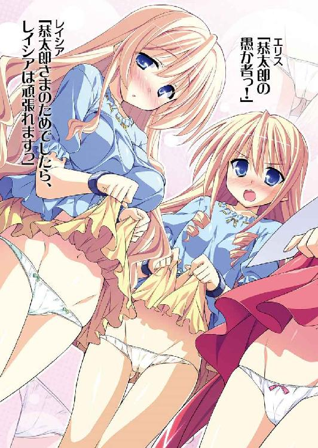
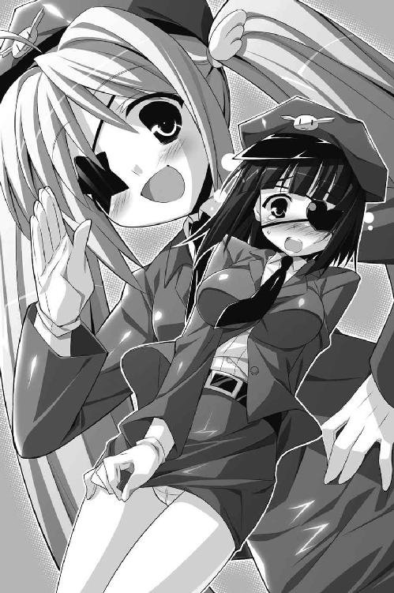

| Ｈ＋Ｐ10 －ひめぱら－ (富士見ファンタジア文庫) | |
| 風見 周 & ひなた 睦月 | |
| 富士見書房 (2011) | |


Ｈ＋Ｐ
─ひめぱら─
風見 周

富士見ファンタジア文庫
本作品の全部または一部を無断で複製、転載、配信、送信したり、ホームページ上に転載することを禁止します。また、本作品の内容を無断で改変、改ざん等を行うことも禁止します。
本作品購入時にご承諾いただいた規約により、有償・無償にかかわらず本作品を第三者に譲渡することはできません。
本作品を示すサムネイルなどのイメージ画像は、再ダウンロード時に予告なく変更される場合があります。
本作品は縦書きでレイアウトされています。
また、ご覧になるリーディングシステムにより、表示の差が認められることがあります。
口絵・本文イラスト ひなた睦月
目 次
プロローグ
神奈川県、神代市。閑静な住宅街の一角に建つ、神来流剣術道場。
縁側の座布団に座り、神来桜子は小春日和の庭を眺めていた。
桜花の模様が美しい赤い着物。艶やかな黒髪には、薄黄色の髪留め。見事に和装を着こなした剣道場の主は、背筋を伸ばして正座をしている。
庭に咲く寒椿の花とあでやかさを競い合っているかのように、桜子は凜とした美しさを誇っていた。日本画家を志す者ならば、誰しも筆を取りたくなる光景であろう。
桜子は年季の入った湯呑みでお茶をすすった。
「今日は、少しばかり疲れましたね......」
天気がよかったから、道場の掃除と庭の手入れをし、家伝の剣術書の虫干し。道場にある剣道着をまとめて洗濯して、破れているものは全て綺麗に繕った。
そして、近所の子どもたちに剣術の稽古をつけ、ようやく一息ついたところである。
彼女は神来流剣術道場をたった一人で切り盛りしているのだ。
「ふぅ......」
渋い番茶をすすって、桜子は小さなため息を吐いた。
ここのところずっと気分が優れない。なにをしても気が滅入ってしまうのだ。母を亡くし、放蕩者の父が出奔して以来、ずっと一人で暮らしているはずの道場が、なんだかとても広く感じられた。
ひょっとして──桜子は思う。
この疲れは年齢のせいでしょうか？ 二二歳という年齢は、老いを感じるには早い気もしますが......。
「ええい、しっかりなさい、桜子！」
湯呑みを縁側に置き、平手で頰を叩いた。
「こんなことでは由緒ある神来流を守っていくことなどできませんよ！」
桜子は神来家の一人娘。神来流剣術の伝承者は彼女しかいないのだ。
道場を支えるだけでなく、婿捜しも同時に行う必要がある。
桜子には許嫁がいたが、幼い頃に原因不明の神隠しにあって破談となってしまった。神来家を継ぐに相応しい殿方を見つけねばならない。
為すべきことは多い。疲れている場合ではないのだ。
頭では、わかっているのだが──
「はぁ......」
知らず、ため息をこぼしてしまう。
心にぽっかりと穴が空いたような、わけのわからない空虚さに苛まれていた。生活に張り合いがない。昔はもっと充実していた気がするのに。
「なぜでしょうね......」
微かな胸の痛みを感じて、桜子は着物の合わせ目を手で押さえた。
「とても大事なことを忘れてしまったような気がします......」
いくら考えても、思い出すことはできないのだけれど。
そのとき──ぽとり、と。
寒椿の花が庭に落ちた。武家では本来嫌われるものだが、なぜか神来家の庭には椿の木があるのだ。無思慮な父が勝手に植えてしまったのだろう。
首がもげるように地に落ちた赤い花を見た刹那、ひどい胸騒ぎを覚えた。
「不吉ですね......。悪いことが起こらなければよいのですが......」
眉をひそめ、桜子は天を仰ぐ。小春日和だったはずの空に、不気味な黒雲が広がりはじめていた。
第一話 サキュバスの攻撃と恭太郎の今
「うぅ......くすんくすん......えぅぅぅ......」
悲しげな泣き声が聞こえて、神来恭太郎はゆっくりと目を開いた。
ここは、どこだろう......？
天蓋がついた漆黒のベッドや、真っ黒なシーツ──全ての調度品が黒一色で統一されていることから、カルタギア帝国の黒炎城内だと想像がつく。
だが、恭太郎に与えられていた後宮の部屋とは別のようだ。もっと広いのに加え、部屋の中央に設置されたベッドを取り巻くようにワケのわからないものが大量に置かれていた。
小太刀ほどの長さがある動物の角、さまざまな大きさの葉っぱ、不気味な色に輝く液体や丸薬が入った小瓶、お札や祈禱書などなど。
その隣には包帯やピンセットといった医療用品も設置されている。
ここは病室なのか......？
首を傾げつつ身体を起こしたとき、腹部に鈍痛がした。
それがキッカケとなって、朧気な記憶が蘇ってくる。
ああ、そうか。
俺は処刑されそうになったユフィナたちを助けるために、牛面人身のバケモノに立ち向かったんだ。
【光の剣】でミノタウルスの角を切り飛ばしてやろうとして。
でも、なぜか出現したはずの【光の剣】が消えてしまって......。
俺は角で腹を突き刺されたんだよな。
手術着のような前開きの寝間着をめくり、おなかを見てみた。
赤黒い跡が残っているが、既に傷口はほとんどふさがっている。
「ぐすんぐすん......」
再び、悲しげな泣き声が耳に届いた。
ベッドサイドに座り、カリギュラがさめざめと泣き続けている。
ひどく顔色が悪い。目元は真っ赤に泣き腫らしており、優美な丸みを帯びていたはずのほっぺもげっそりとこけて見える。どちらが病人かわからないほどの憔悴っぷりだ。
恭太郎は手を伸ばし、頰を伝う涙を拭ってやった。
「カーリー、どうして泣いてるんだ......？」
顔を上げた女帝は、キョトンとした顔で恭太郎を見つめた。
わなわなと唇を震わせ、瞳にさらに涙の雫が浮かぶ。
「よかった......！ 気がついたのだな、きょーたろ！ 心配したぞっ！」
恭太郎に飛びつき、ぎゅーっと抱きついてくる。猫がにおいつけをするように、グリグリと首の辺りに額を押しつけて。
「妾を不安にさせるなんて、本来なら万死に値する行為だっ！」
「そんなに心配させちゃったのか。ごめんよ、カーリー......って、痛たたた！ オナカに触らないでくれ、まだ痛いよ！」
「す、すまぬ！」
慌てて身体を離したカリギュラは黒いドレスの袖口で涙を拭った。
「だが、目を覚ましてくれて本当によかった」
安堵の息を漏らしている女帝に、恭太郎は尋ねてみる。
「俺がミノタウルスにやられてから、どのくらいが経ったんだ？」
「かれこれ一週間ほどなのだ」
「そんなに俺は意識を失っていたのか......。それで、ここはどこなのかな？ 後宮じゃないよな？」
「うむ。特別あつらえの治療室だ。我が国が誇る最高の医者と、最強の回復術士を招集して治療に当たらせたのだぞ」
カリギュラは部屋中に置かれた謎のアイテムを振り返った。
「それだけではない。世界中から傷を癒すためのレアアイテムをかき集めたのだ。《ユニコーンの角》や《人魚の生き血》。《ユグドラシルの葉》に《グリーンドラゴンの逆鱗》もある」
「どのくらいすごい代物なのか、俺にはさっぱりわからないんだけど......」
「これらを揃えるだけで、ちょっとした国が丸ごと買えてしまうだろうな」
「そんなに高価なアイテムなのか！」
修行中に怪我をしてもツバをつけて癒してきた恭太郎にとっては、過ぎた治療のような気もする。なんだか申し訳ないな。
ともあれ、回復魔法やレアアイテムのおかげで治りが早まったに違いない。
「だから、一週間しか経っていないのに傷がふさがってたんだな」
だが、カリギュラは首を横に振った。
「......いや、正確に言うと三日ほどなのだ。治りかけていたきょーたろの傷口が、途中で一回開いてしまったからな」
そのとき、気付いた。
女帝の黒いドレスの袖口。細い腕に包帯が巻かれていた。カリギュラも怪我をしているみたいだ。
目の前に座っているのは、ただの幼い少女ではない。大帝国の女帝なのだ。彼女が怪我するなんて、一大事と言えよう。
「俺が気を失っている間に、なにかあったのか？」
「なんと、覚えていないのか！」
驚いたように目を丸くしたけれど、カリギュラは小さく首を横に振って。
「いや、それも無理ないのだ。生死の境をさまよっていたにもかかわらず、きょーたろはまたもや妾を......カルタギア帝国そのものを救ってくれたのだからな」
「俺が、きみを救った......？」
「きょーたろ、ちょっとそのまま寝ておれ」
ベッドサイドの丸椅子から立ち上がったカリギュラは、錫杖を手にした。
口の中でもごもごと呪文を唱えて──
「【浮揚】！」
ベッドの周囲に黒い魔法陣が展開した直後。
「うお、うおおお？」
魔力によってベッドが浮かんだ。空中を滑らせるように、恭太郎ごとベッドを窓際に移動させる。
「窓の外を眺めてみるがいい」
言われるままに窓を覗き込んだ恭太郎は、息を呑んでしまった。
「なんだ、これ......。城がメチャクチャじゃないか......！」
黒炎城の一部が吹き飛び、瓦礫の山と化していたのだ。あちこちから白煙が上がっている。カルタギア軍の女兵士たちが城壁の復旧作業を進めていた。
「どこから話したものだろうな......」
ベッドサイドに立ったカリギュラは、考え事をするように黒いトビカピバラのぬいぐるみの頭を撫でて。
「ユフィナらがきょーたろを奪還しようと暗躍している裏で、もう一つ。妾の城で恐るべき事態が進行していた。凶悪な敵が密かに潜入していたのだ」
「凶悪な敵......？」
「人類史上最悪と言ってもいいほどの危険なモンスターなのだ。この世界は、そやつによって一度滅ぼされそうになっているぐらいだからな」
「なんだよ、その危険なモンスターって......？」
禍々しい呪いの言葉を口にするように、カリギュラは眉をひそめた。
「サキュバス、なのだ」
カリギュラの説明によれば、サキュバスとは男性の魔力を奪う怪物なのだという。
太古の昔。女性だけではなく、男も魔法を使うことができたらしい。
強大な魔法を使いこなす王が国を牛耳っていたのだそうだ。
しかし、そんな《魔法使い》の時代は突如として終わりを告げる。世界中の男から魔力が奪われてしまったのだ。
未曾有のパラダイムシフトを引き起こした怪物こそが、サキュバスの女王・レネゲイドなのである。
「レネゲイドは《六人の勇者姫》によって倒され、封印されたと言われている」
全ての男から魔力が失われてしまう前に、六人の少女たちが立ち上がった。
強大な力を持つレネゲイドに立ち向かい、見事に討ち滅ぼしたのだ。
レネゲイド討伐後、勇者姫は大陸の全土に散り、カルタギア帝国やトレクワーズ王国などの建国の祖となったらしい。
その伝説は童話にもなって代々語り継がれている。ウィッチェリア大陸に住んでいる人なら誰でも知っている話だそうだ。
「だが、恐るべきことに、封印されたはずのレネゲイドが復活を果たしていた......」
カリギュラはトビカピバラのぬいぐるみを抱きしめる。心なしか細い肩が震えているような気がした。
「失った力を取り戻すべく、自らの身体の一部から作り出した忠実な僕、《淫魔の右目》セグレタを使って、男どもから魔力を奪いはじめたのだ......！」
トレクワーズ王国から誘拐した二〇〇〇人の王仕たちや、カルタギアの辺境にあるビストという村に住んでいる少年らが被害にあった。魔力を全て奪われ、気絶した状態で発見されたらしい。
その村の名前に、恭太郎は聞き覚えがあった。
「ビストって言えば......サンチャの故郷だった村だよな」
ピコル師匠の世話係として雇われた少女がビスト村の出身だと言っていたはずだ。
「よく覚えているな、きょーたろ。そのサンチャという小娘こそが問題だったのだ」
「サンチャが？」
「うむ。《淫魔の右目》は、最強の王仕さまであるきょーたろの魔力を奪おうと画策した。使用人に化けて城に潜り込み、きょーたろに近づいたのだ」
恭太郎は思わず、自らの唇を手で押さえた。
妙な夢を見たことを思い出したのだ。
夢の中で、恭太郎はハダカのサンチャに夜這いされた。
『もらうわよ......あなたの魔力を......』
そう言って、彼女は恭太郎に唇を押し当ててきたのである。
あれは夢じゃなくて、本当に起こった出来事なのか......？
悲しげに眉をひそめて、カリギュラは恭太郎を見つめてくる。
「きょーたろは魔力を奪われてしまった。ミノタウルスと戦っているときに【光の剣】が消えてしまったのも、それが原因なのだ」
「そうだったのか......」
ピコル師匠の脱出計画の裏で、そんなことが起こっていたなんて、まったく気付かなかったよ。
ユフィナたちの変装ですら見抜けなかった俺には、魔法で化けたサンチャの正体を見破ることなんて絶対にできないだろうけど。
「きょーたろの魔力を得たセグレタは、ついに本性を現した。あろう事か妾を亡き者にしようとしたのだ......!!」
カリギュラは激しい戦闘のようすを話してくれた──。
重装歩兵小隊。飛竜騎士団。機甲師団。幻獣部隊──。
黒炎城に駐留していたカルタギア兵たちが瞬く間に撃破されたと報告を受けても、カリギュラはにわかには信じられなかった。
城内に駐留している兵士は精鋭揃いだ。精強をもって鳴るカルタギア軍においても特に練度が高く、一騎当千の猛者ばかりなのである。
しかし、黒炎城の西塔近くの広場のようすを見たカリギュラは、報告が真実であると悟った。
「ぐぬぬ......なんということだ......」
砲弾を受けても傷一つつかないはずの強化城壁が、焼けたナイフでバターを撫で切りにしたように破壊されていた。城の一部であった黒い石塊が辺りに転がっている。
単座の飛行艇や魔導戦車が真っ二つとなり、あちこちで火の手を上げていた。
兵士たちのうめき声と翼を折られた飛竜の苦しそうな鳴き声が、悲しげに響き渡る。
もはや、戦意のある者は誰もいない。
深手を負った兵士たちが恐怖に震え、ただ呆然と怪物を見上げているだけだ。
彼女らの視線の先。幻獣部隊が兵器として用いるキメラやケルベロスの死骸がうずたかく積まれた、不気味な山の上。
優雅に脚を組んで、サキュバスが座っていた。
コウモリにも似た皮膜の翼。ヒツジのような角。しっとりと濡れた鈍色の髪。見事な肢体を黒革のボンデージルックに包んだ美女である。
「貴様が、セグレタか......？」
「この姿で会うのは初めてね、お嬢ちゃん。お城から出てきてくれて嬉しいわ」
蕩けるような甘ったるい声音。男には魅力的に聞こえるのかもしれないけれど、カリギュラは不快感を覚えた。ひどくムカつく声だ。
「おかげで、殺しに行く手間が省けたから......」
四将軍の一人、アスピア・バリファックスがカリギュラの前に歩み出た。氷の剣を構え、サキュバスを睨み付ける。
護衛の兵士たちも女帝を守るように取り囲んだ。
「お引き下さい、カリギュラさま。矢面に立たぬようにとご忠告申し上げたはずです」
女帝にもしものことがあれば、帝国の存亡に関わる。自ら敵と対峙することなど本来ならあってはならないことだ。聖覇帝の諡号を持ち、カルタギア帝国の版図を大きく広げた母上も前線には決して出なかった。
しかし、それがわかっていてもなおカリギュラはアスピアを錫杖で押しのけた。
「お断りだ。こやつは、きょーたろの魔力を奪ったそうではないか」
伝令からの報告によれば、セグレタは『神来恭太郎の魔力を奪った。返して欲しくば、女帝自ら取り返しに来い』と告げたらしい。
「そのようなことを聞かされては、黙ってはおれぬ......」
治療室で眠る恭太郎を思い出す。
深手を負った王仕は、生気を失ったような青白い顔で横たわっていた。
（ミノタウルスをけしかけたのは妾だ......。だが、こやつが魔力を奪わなければ、きょーたろが傷つくこともなかったのだ！）
握りしめた錫杖の先をセグレタに向ける。
「きょーたろへの攻撃は妾への攻撃も同じ......伝説のバケモノだろうと容赦はせぬぞ！」
「威勢のいいお嬢ちゃんね......でも、残念。魔力を返してあげるって言ったのはウソサキュバスに奪われた魔力は、もう二度と取り戻すことができないの。そう伝えれば、お嬢ちゃんは怒って飛び出してくるって思っただけ」
《淫魔の右目》は艶然たる笑みを浮かべた。癇に障る含み笑いが殷々と響き渡る。
「我が主レネゲイドさま復活のお祝いに、カルタギア帝国の女帝を殺しておきたかったの。この世界はレネゲイドさまのものになるのだから......」
「黙れッ！」
怒りにまかせてカリギュラは錫杖を振るった。
杖の先端から、破壊力を持った黒い光が迸る。
黒光が頰をかすめても、淫魔は身じろぎ一つしなかった。キメラの上に座ったまま、淫靡な動きで脚を組み替える。
「そんなに怖い顔しないで」
蠱惑的な笑みを浮かべつつ、猫の喉を撫でるような動きで指を動かした。右手に長い鞭が出現する。
「死ぬ時ぐらい笑顔の方がいいわよ」
長い髪を払うような仕草で鞭を振るう。
──パン！
空気が弾ける音と共に、黒い鞭が飛んだ。鞭の先端が大地を抉り取る。
凄まじい力を見せられても、女帝は堂々と胸を張ったままだ。
「......よかろう。妾をお嬢ちゃんなどと呼んだことを後悔させてやる」
サキュバスを睨め付けつつ、カリギュラはアスピア将軍に命じた。
「兵士を下がらせろ、アスピア。妾の攻撃から者どもを守るのだ」
女帝は錫杖を天に掲げた。口の中で呪文を詠唱する。カリギュラを中心に黒く光る魔法陣が展開。空気がびりびりと鳴動する。
即座にアスピアが兵士に指令を発した。
「総員退避！ 負傷者を収容し、カリギュラさまから距離を取りなさい！」
呪文詠唱を終えた女帝が、錫杖で黒い魔法陣を突いた。
ガラスが割れるように魔法陣が砕け散る。
「【黒竜降臨】!!」
漆黒の光──目映い闇が辺りを覆い尽くした。
直後、闇の中から黒曜石のような美しい黒鱗を持つ、暗黒竜が出現したのだ。
黒き竜は黒炎城の城壁の高さに届きそうなほど巨大であった。
女帝の面影を残すのは、頭にのった小さな王冠と、その手に握りしめた錫杖だけだ。
物体を変化させる力を有する、カリギュラの《固有魔法》。
その究極奥義こそが【黒竜降臨】である。
自らの姿を、暗黒竜へと変化させるのだ。
これまでに使用したのは、たった一度だけ。母である聖覇帝ドゥリエラと共に、攻撃魔法の練習を兼ねたドラゴン狩りに行ったときに使ったきりだ。
暗黒竜と化したカリギュラは、竜の巣もろとも小高い山を消し飛ばしてしまったのである。
あまりの威力の強さに、母上は【黒竜降臨】の使用を禁じた。
カリギュラの脳裏に母の声が蘇る。
『未曾有の国難に瀕したときだけ、その封印を解きなさい』
（世界を滅ぼしかねない怪物が──サキュバスが現れ、きょーたろの魔力まで奪われてしまった......。究極奥義の封印を解いても母上もお許しくださるに違いないのだ！）
ルビーのような深紅の瞳で、暗黒竜がセグレタを睨んだ。
誰もが畏怖する竜の威容にも、サキュバスは動じなかった。脚を組んだままのポーズで、楽しげに女帝を見つめている。
「いらっしゃい」
──下郎め。消し飛ぶがよい。
脳内に直接響く不思議な声で言い放ち、暗黒竜はゆっくりと翼を広げた。
大きく口を開き、息を吸い込む。
虚空から黒い粒のような、闇の粒子が集まっていく。
刹那──ヴォン！──周囲の空間が揺らいだ。
暗黒の奔流とでも言うべき、闇のブレスがサキュバスに向けて放射された。
闇のブレスはセグレタに直撃。漆黒のビームにサキュバスの身体が飲み込まれる。
背後にある城壁にも、闇のブレスが触れた。
途端に城壁が跡形もなく消し飛ぶ。
暗黒竜の闇のブレスに触れたものは、無に飲み込まれて消滅してしまうのだ。
うずたかく積まれた幻獣の死骸も闇へと飲み込まれていく。ブレスに触れたものは、ことごとく消え去った。
（フン、闇のブレスを避けもせぬとは......愚か者め。伝説の淫魔とて妾に掛かれば造作もないのだ）
カリギュラは勝利を確信した。
ところが、である。
「うふふふふふ......」
神経を逆なでするような甘ったるい笑い声が、黒炎城に木霊した。
暗黒の奔流が消え去った後でも、セグレタの姿は消滅してはいなかった。コウモリの翼で身体を包むようにして、元いた場所の宙に浮かんでいる。
周囲の全てが闇に飲み込まれていたのに、サキュバスは傷一つ負っていなかったのだ。
──な、なぜだ!? なにゆえ、闇のブレスを受けて平気でいられる！
サディスティックな笑みを浮かべて、セグレタは口を開いた。
「男どもの魔力を奪ったからよン 特に神来恭太郎の魔力は極上だわ。さすがは、魔法が使える王仕さま......魔力を奪った甲斐があったというもの。レネゲイドさまもさぞお喜びになるでしょう。うふふふふ......」
《魔力値》の高さは魔法防御力に直結する。
（きょーたろや王仕さまたちの魔力を奪って束ねると、暗黒竜の攻撃すら防げるようになるというのか!? 闇のブレスは山をも消し飛ばすのだぞ!?）
セグレタはセクシーに身体をくねらせ、鞭を振り上げた。
「次は私から行くわよ、お嬢ちゃん」
手首を返すようにして、軽く鞭をしならせる。
覇気の感じられない、無造作な攻撃だ。
しかし、黒い鞭は稲妻のような速度でカリギュラに飛びかかってきた。
鞭の先端が腕に触れた刹那。
──ぬわあああああっ！
暗黒竜の巨体が吹っ飛んだ。壁を突き破って、黒炎城内に突っ込む。
──うぐぅ、痛いのだ......！
黒鱗が剝がれ、わずかに黒い血が滲んでいる。竜になっていなかったら腕ごとなくなっていたかもしれない。
──おのれ、小癪な！
そう叫んだとき、カリギュラの首に鞭が巻き付いた。
宙に浮かんだサキュバスの細腕に引っ張られ、竜と化した女帝が城から引きずり出される。凄まじいパワーだ。
──う、く、苦しい......！
「楽しかったわ。でも、遊びは終わり。首をもらうわね」
セグレタが鞭をさらに引っ張った。首が締め上げられ、急速に意識が遠のいていく。このまま首を引き千切るつもりだ。
鞭を外そうともがいても、もはやどうすることもできなかった。
アスピア将軍の悲痛な叫びが聞こえてくる。
「カリギュラさまっ！」
（うぐぅ......。イヤだ。まだ死にたくないのだ......）
だが、ドラゴンのブレスすら無力化するサキュバスに抗う術などなかった。
苦しさと無力感のあまり、暗黒竜の瞳から黒い雫がこぼれ落ちる。涙は黒いダイヤとなって大地に転がった。
「うふふふ...... いい顔ね。お嬢ちゃんの姿だったら、なおよかったのに」
巻き付いた鞭が、さらに首を締め上げる。黒い鱗がミシミシと音を立てた。
絶体絶命の危機に直面したカリギュラのココロに浮かんできたのは──
（きょーたろ......！）
恭太郎の顔だった。
あやつは深手を負って、生死の境を彷徨っているのに。
サキュバスに魔力を奪われ、もはやなんの力も持っていないのに。
きょーたろは妾を裏切って、カルタギアから逃げだそうとしたのに。
（助けて、きょーたろ......!!）
それなのに、カリギュラは恭太郎の名を呼んでいた。
「さようなら、お嬢ちゃん」
セグレタは鞭に力を込める。首に巻き付いた鞭がさらに絞まった。
カリギュラの首が引き千切られる──まさに、その刹那。
「うおおおおおおおおおッ!!」
裂帛の気合いと共に、目映い光が降ってきた。
──きょーたろ!!
黒炎城の窓から飛び降りざまに【光の剣】を振るい、恭太郎が黒い鞭を叩き斬る。
竜と化したカリギュラを守る騎士の如く、輝く剣を翳して王仕さまは立ちはだかった。
暗黒竜と対峙しても動じなかったサキュバスが、初めて動揺の色を見せた。焦ったように美貌を引きつらせる。
「神来恭太郎......なぜ魔法が使えるの？【魅了】を掛けたはずなのに！」
恭太郎は返事をしない。肩で息をしたままセグレタを睨み付ける。
目映い光を放つ剣を構え、ゆっくりと腰を落とした。
「神来流剣術奥義......」
上空にいるサキュバスに向けて跳躍。
「《四の太刀──斬月》!!」
衝撃波を伴った斬撃をセグレタに浴びせる。
サキュバスはコウモリのような翼で身体を包みガードをする。だが、恭太郎の攻撃を防ぎきることはできなかった。
皮膜のような翼が切り裂かれる。
「くっ......！」
アスピアがすかさず攻撃命令を下す。
「敵の防御力が下がったようです！ 攻撃を加えなさい！」
空を覆い尽くすほどの弓矢や砲弾がセグレタに打ち込まれた。
「【氷槍撃】!!」
アスピア将軍も無数の氷柱を飛ばす。
セグレタは恭太郎に叩き斬られた鞭を振るい、嵐のような攻撃を全て弾き飛ばした。
「......予定が変わったわ。お嬢ちゃん、あなたを殺せなくて残念」
破れた翼をはためかせ、サキュバスは首都バスティアの市街地へと飛び去っていく。
逃げるセグレタの姿を睨み付けていた恭太郎は、構えていた剣を降ろした。
ロウソクの炎が消えるように明滅を繰り返した後で、恭太郎の手から【光の剣】が溶けるように消える。
ほぼ同時に、カリギュラの魔法も解けた。巨大化していた身体がみるみる縮んだ。
「うにゅ～～～......？」
激しい疲れが襲ってきて、カリギュラは倒れそうになってしまう。
すぐさま恭太郎が駆け寄ってきて、優しく抱き止めてくれた。
腕の中にいるカリギュラの顔を覗き込んで尋ねてくる。
「大丈夫か、カーリー？」
黒いドレスは弾け飛んでいたから、カリギュラは一糸まとわぬ姿だ。
「わ、妾は平気なのだ......」
普段ならハダカを見られても平気なのに......なぜか、今は胸がドキドキしてしまった。ほっぺが熱くなってしまう。
というか、ピンチのときに颯爽と現れて、妾を救うなんて卑怯だ。ズルすぎる。
そんなのドキドキしちゃうに決まってるじゃないか。
妾を裏切ろうとしたきょーたろなんて、友だちでもなんでもない。大・大・大っ嫌いなのだ！
そう思おうとしてるのに......。
もっと好きになっちゃうじゃないか！
「そうか。無事でよかった......」
王仕さまは嬉しそうに微笑んだ。その額には汗が滲んでおり、顔は青白い。
優しい笑顔にキュンとしつつ、恭太郎に問いかける。
「きょーたろこそ、平気なのか？ ミノタウルスにやられて死にかけていたのに......。そんな無茶をしたら本当に死んでしまうぞ！」
「きみの声が聞こえた気がしたんだ......。居てもたってもいられずに、部屋を飛び出してた......」
恭太郎はハダカになっているカリギュラの身体に一瞬だけ視線を移した。困ったように眉をひそめる。
「ハダカってのもアレだから、シャツを貸してやりたいところだけど......」
身に纏う寝間着代わりの黒衣のオナカの辺りを手で押さえる。黒衣が濡れたように光っていた。
「これじゃ......貸してあげられない......な......」
カリギュラを抱きしめたまま、王仕さまはくずおれるように倒れる。
腹部を押さえていた手のひらが真っ赤に染まっていた。
「きょーたろ!! しっかりするのだ、きょーたろ～～～っっっ!!」
「そんなことがあったのか......」
治療室。窓際に寄せられたベッドの上から壊れ果てた黒炎城の惨状を眺め、恭太郎は眉をひそめた。
城を取り囲む城壁の一部が完全に吹き飛ばされており、堀の向こう側に広がる市街地のようすまで見渡すことができる。復旧には時間が掛かりそうだ。
カリギュラの話によれば兵員の死者は出なかったらしい。城の壊れっぷりから考えても、それは奇蹟的なことなのだろう。
「改めて礼を言うぞ、きょーたろ」
カリギュラは、感謝の言葉を述べた。九歳の少女とは思えない真剣な顔だ。
「きょーたろが助けてくれなければ、妾は殺されていたのだ。妾が世継ぎを残さぬままに死んだら、帝国は大混乱に陥っていただろう」
「礼なんていらないさ。きみが無事でなによりだ」
カリギュラの黒髪を撫でてあげた。
サキュバスと戦った記憶は全く残っていない。完全に無意識な行動だ。でも、彼女を助けることができてよかったと心から思う。
しばらくの間、髪を撫でられる感触を楽しむように瞳を細めていたカリギュラは、ふいに睨み付けてきた。
「おい、きょーたろ。貴様は妾を裏切ろうとしたな。妾にナイショで後宮から脱走を試みた」
「うっ......」
「友だちだと思っていたきょーたろに裏切られ、妾はとても悲しい思いをしたのだ」
「きみを裏切るつもりなんてないよ。今でも俺は友だちだと思ってるし......」
トレクワーズ王国に戻りたいと思ったのは確かだ。だが、カリギュラを悲しませるのも本意ではない。『きょーたろなんて、友だちじゃないのだ！』と言い放たれたのは、とても辛かった。
「本来なら八つ裂きにしてやりたいところだが......」
カリギュラはフンと鼻を鳴らした。
恭太郎の手に、そっと小さな手のひらを重ねてくる。
「今回だけは許してやるのだ。きょーたろの想いが......妾を大切に思ってくれている気持ちがちゃんと伝わってきたからな。仕方がないから、これからも友だちでいてやろう。特別だぞっ！」
愛おしげに手のひらに頰ずりをして、小声で呟く。
「本当は友だち以上の関係に早くなりたいのだがなっ」
照れくさくなって、恭太郎はもう片方の手の人差し指で頰を搔いた。
ソッチ方面のやる気を見せられても困るんだけどなぁ......。
「あー、ところで、カーリー。聞きたいことがあるんだけど......」
話題を変えるためにも、恭太郎は質問をしようとした。知りたいことがいくつもあったのだ。
最も知りたいのは、ユフィナたちの現状だろう。王女さまたちは、処刑される寸前だったのだ。無事でいるのか気がかりだった。まさか、もう死刑に処されたってことはないよな......？
しかし、問いを口にすることはできなかった。
治療室にノックの音が響いたのだ。
「失礼いたします」
アスピア将軍が一礼をして、部屋へ入ってくる。
将軍の姿を見た瞬間、恭太郎は「のわっ!?」と叫んでしまった。
「な、なんて格好をしてるんですか!?」
普段のアスピアは白い軍服に同色のマントというお堅い格好をしている。
だが、今はデニムのホットパンツ＆白いタンクトップを身に着けていた。凄まじく活動的な格好だ。
しかも、ホットパンツもタンクトップも、異様に丈が短かった。ホットパンツの裾からおしりのプニプニしたカーブが盛大に飛び出している。タンクトップは胸元まで覆っていなくて、下チチが丸見えだ。アスピア将軍は胸が大きいから、タンクトップの布地が今にも弾けそうなほど膨らんでいた。
クールな知将が、おへそやナマ脚を見せつけているのは......普段とのギャップもあって、余計にドキドキしてしまう。
「アスピアには、妾が考案した《恐怖の一〇八罰》の一つ──《ハミハミ》の罰を科したのだ！」
「ハミハミ？」と恭太郎が問い返すと、カリギュラがサディスティックな笑みを浮かべて。
「ハミ乳とハミ尻が同時に露わになってしまう恐ろしい格好なのだ」
「ハミ乳＆ハミ尻。略して、ハミハミか。なるほどなぁ......って、感心してる場合じゃないよ！ 国難に瀕してるってのに、部下になんて格好させてるんだ！」
恭太郎の視線を感じたからか、アスピアの白い頰が微かに赤くなった。だが、身体を隠そうとはせずに口を開く。
「サキュバスであると気付かず、サンチャを雇い入れてしまいました。本来なら死刑にされてもおかしくない失態です。どのような罰でも甘んじてお受けします」
「貴様を死刑になどするはずがなかろう。アスピアは妾の大切な右腕だからな」
「もったいないお言葉です」
将軍は窓際にいる女帝の元まで近寄ってきて膝を折った。ブラをつけていないせいか、歩くだけでおっぱいがぷるんぷるんしてて......恭太郎は顔が赤くなるのを感じた。信賞必罰は明らかにすべきだろう。でも、違う罰を与えてくれよ。目のやり場に困るって！
跪いたまま、アスピア将軍は女帝に報告をする。
「セグレタの行方はわかっておりません。キスト、ムージ両将軍を派遣し、発見し次第討伐するよう手筈を整えております。また、属国を含めた帝国全土に、『新種の怪物による被害が発生している』との内容で警戒を呼びかけました。魔力を持つ男子を警護するため各地に軍隊を派遣しています」
無用な混乱を避けるため、サキュバスが蘇った件については伏せる方針のようだ。
破壊された黒炎城の補修や、今後のカリギュラの身辺警護などについて報告をした後で、アスピア将軍は顔を上げた。
ベッドに座っている恭太郎を、ガラス玉みたいな半眼で見つめる。
「そして、最後に──神来恭太郎の魔力についてご報告申し上げます」
「おお、なにかわかったか!? きょーたろの魔力は戻るのか!?」
アスピアはゆっくりと首を横に振る。
「残念ながら、我々の調査では一切の事情がわかりませんでした」
説明によれば、恭太郎の魔力はミノタウルスに襲われた時点でゼロになっていたらしい。
ところが、カリギュラのピンチを救った際には、【光の剣】を出現させていた。わずかな間だけ、魔力が戻っていたのだ。
現在は再び、魔力を失っている。
「文献によれば......サキュバスに【魅了】の魔法を掛けられて魔力を奪われると、二度と元に戻らないそうです。たとえサキュバスを倒そうとも、魔力値が回復することはありません」
「だが、きょーたろは魔法を使えたではないか！」
「はい。一瞬だけ魔力を取り戻したようです。相対的に、セグレタの魔力が減少していました。しかし、なぜそのようなことが起こったのか皆目見当がつかないのです。ただ、これだけは言えます」
躊躇うように唇を引き結んだ後で、アスピアは続けた。
「このままでは、神来恭太郎は王仕さまにはなり得ません。魔力を失っていては、お世継ぎをつくることができないのです」
「そんなの絶対にイヤだぞ！ 妾はきょーたろがいいのだっ！ きょーたろ以外の男と世継ぎをつくるなんて考えたくもないっ！」
錫杖で床を突き、だだをこねるように足を踏みならすカリギュラ。
苛烈な反応を見せた女帝とは対照的に、恭太郎は落ち着いていた。
というか、ある意味これは朗報じゃないかとすら思える。
恭太郎は高い魔力を誇っているせいで、お世継ぎづくりを迫られてきた。
だが、魔力を失ってしまえば、えっちなことをしなくても済む。望み続けていた剣士らしい清廉潔白な日々を送れるようになるのだ。
【光の剣】を出現させられないが、どうせアレは自分の意思では使いこなせないし。
「ぐぬぬ......」と歯嚙みして、カリギュラはアスピアに問いかける。
「どのような手段を用いてもいい！ きょーたろの魔力を元に戻す方法はないか!?」
「方法は......あるようです。しかし、我々にはわかりません」
「......どういう意味だ？」
アスピアは忌々しげに眉をひそめる。普段が無表情なだけに凄まじい不快感を覚えている顔に見えた。
「ピコルが方法を知っているようなのです......。幽閉中の牢獄で事情を知り、獄吏を通じて次のような提案をしてきました」
『恭太郎がサキュバスに襲われたようですな？
じゃが、案ずることはありませんのじゃ。吾は【魅了】の魔法を破る方法を知っておりますのじゃ。
しかし、タダで教えるワケにはいきませぬのぅ。取引と参りましょう。
吾とユフィナさまたちを牢屋から出し、アルトさまやメルルさまを含む五人の姫さまに掛けられた幼女と化す魔法を解いてくれたなら、恭太郎の魔力を戻す方法をお教えしますのじゃ。ふゥははははー！』
ピコル師匠の言葉を聞いたカリギュラのほっぺがヒクヒクと引きつった。
「ぐぬぬぬぬぬぬぬぬ～～～～～っっっ!! ピコルめ、小癪なヤツなのだ!!」
×××
恭太郎が目覚めた翌日のこと。
投獄されていたユフィナやピコル師匠たちが、牢屋から出される運びとなった。幼女と化す魔法も解かれたそうだ。
彼女たちの身を案じていた恭太郎は、素直に解放を喜んだ。
ユフィナも同じ気持ちだったようだ。
「恭太郎、無事だったのね。本当によかったわ。心配してたんだから」
治療室へと連れてこられた三人の王女さまは、一様に胸を撫で下ろしていたのだが。
ベッドに座ったまま彼女たちの姿を見た恭太郎は、啞然としてしまった。
「ず、ずいぶん、三人とも服装の趣味が変わったんだな......」
手かせがつけられているのは、捕虜なのだから仕方ないとして......。
ユフィナは赤いスカートに白いシャツ、赤いランドセル、黄色い帽子──女子小学生の通学ファッションとでも言うべき服を着ていたのだ。
姉姫が小学生なら、妹は幼稚園児だ。
レイシアとエリスの双子姫は幼稚園児が着るようなスモック＆ヒラヒラしたスカートを着用している。
子ども服を無理矢理に着ているので、全体的にサイズが小さく、服がパツパツだ。カラダのラインがくっきりと浮かび上がっている。
スカート丈もかなりのミニだ。ほんの少しかがんだだけで、下着が見えてしまいそうである。
王女さまたちはスタイル抜群だ。オトナ顔負けのボディを持っている。そんな彼女たちがロリッ娘のコスプレをしているのは......妙に倒錯的だった。手かせで拘束されているのが、余計にアレな感じを引き立てている。
「恭太郎さまのご無事を喜びたいところなのですが......」
モジモジとふとももを摺り合わせ、レイシアが恥ずかしそうに頰を染める。
「スカートが短すぎて恥ずかしいです」
ユフィナがキッとカリギュラを睨み付けて。
「っていうか、どうしてこんなヘンな格好させたのよ!?」
恭太郎のベッドの隣に置かれた玉座のようなフカフカの椅子にふんぞり返っているカリギュラが、楽しげに高笑いをした。
「約束通り、幼女と化す魔法は解いてやったぞ。だが、服装までは約束に含まれていなかったからな。貴様らにお似合いの格好をさせてやった。妾の考案した《恐怖の一〇八罰》から、《幼稚園児》と《初等学校一年生》の罰を科してやったのだ」
エリスが腹立たしげにピンク色の靴で床を踏みならした。
「この高貴なるエリス・レムリス・トレクワーズに、こんな格好は似合いませんの！ 幼い女帝にこそぴったりだと思いますわ！」
「陛下に無礼な口を利いてはなりません。捕虜という立場をお忘れなく」
カリギュラの隣に侍っていたアスピア（《ハミハミ》の刑罰が終わったのか、白い軍服を纏っている）が、エリスに注意をする。
だが、将軍の言葉をカリギュラは手で制して。
「王女エリスの言うとおり、いかにも妾の方が年下だ。だが、貴様らの方が格下だからな。それがわかるような服装をさせたまでなのだ。その格好でいくら吠えても無様なだけだぞ、ふはははは！」
「きぃぃ、悔しいですのーっ！」
唯一手かせもなく、服装もいつも通りなピコル師匠が、女帝の前に歩み出た。
「こちらの条件を飲んでくださり、ありがとうございますのじゃ」
「フン、本来なら妾は敵と交渉などせぬ。拷問でもして力ずくで吐かせるところだ。だが、きょーたろの一大事だからな。仕方なく譲歩してやったのだ」
悠然と黒いトビカピバラのぬいぐるみを撫でながら、カリギュラはピコル師匠に尋ねる。
「で？ きょーたろの魔力はどうしたら元に戻るのだ？ さっさと申せ。妾は待たされるのが嫌いなのだ」
「その方法を説明する前に、まずはサキュバスの使う【魅了】の魔法がどのようなものか解説させて欲しいですのじゃ」
手を後ろに組んで女帝の前を歩き回り、まるで授業をする先生のように説明を続ける。
「サキュバスの使う【魅了】は男から魔力を奪いますのじゃ。裸体を見せるか、身体に直接触れるか──いずれかの方法でサキュバスは男を魅了するのですじゃ。魅入られた男は、全ての魔力をサキュバスに貢ぐようになりますのじゃ」
「『貢ぐ』のですか？」
言い方が気になったのだろう。アスピア将軍が問い返す。
「魔力を井戸にたとえてみると、わかりやすいかもしれませぬのじゃ。サキュバスによる【魅了】は、井戸を涸らすことではありませぬ。井戸はそのままに、汲み上げたそばから全ての水をサキュバスに送り続けるドレイと化してしまうのですじゃ」
手かせのつけられた手で微かに滲んだ涙を拭い、レイシアが恭太郎を見つめてくる。
「この瞬間も、恭太郎さまはサキュバスに魔力を搾り取られているのですね......。なんとおいたわしい......」
「魅入られてしまうと、もう二度と元には戻りませんのじゃ。たとえ、サキュバスを倒そうとも、心に巣くう淫魔の姿を忘れられず......死ぬまで魔力を放出し続けてしまいますのじゃ」
夢の中でサンチャに夜這いされて以来、ひどい虚脱感や目眩などを感じていた。ひょっとしたら、あの症状は魔力を放出し続けているせいで起こったのかもしれない。
と、ピコル師匠は恭太郎が気付きもしなかった、もう一つの症状を指摘した。
「【魅了】されても、基本的にはこれまで通りの生活が送れますのじゃ。しかし、心の奥底に淫魔が住み着いておりますからのぅ......とんでもない弊害が起こるのですじゃ。姫さまがた。カリギュラさま。そして、アスピア将軍にもお願いがありますのじゃ」
真面目くさった表情で、ピコル師匠はとんでもないことを頼んだ。
「恭太郎にぱんつを見せて欲しいのですじゃ！」
「こんなときになに言ってんのよ！」「意味がわからぬぞ？」
珍しく、ユフィナとカリギュラの声が重なった。
だが、師匠は冗談を言っているようすはない。深々と頭を下げて再度頼みこむ。
「恭太郎の魔力を取り戻すため、そこをなんとか頼みますのじゃ」
さっきまで恥ずかしがって身悶えていたレイシアが意を決したように頷いた。
「恭太郎さまのためでしたら、レイシアは頑張れますっ」
幼稚園児の服装をした王女さまが──ぴらりんっ。
スカートをめくり上げた。ローレグ気味なぱんつが露わとなる。ぱんつまでサイズがキツめなのか、ふとももに下着が思い切り食い込んでいた。
「サキュバスなんかに魅入られるからいけないんですわっ！ 恭太郎の愚か者っ！」
「なんで私がこんなことしなきゃいけないのよっ！」
文句を言いつつ、エリスとユフィナもスカートを持ち上げた。
手かせをつけたロリっ娘コスの美少女が、恥ずかしそうにスカートをめくってぱんつを見せてるなんて......シチュエーション的にヤバすぎるだろ！ ドキドキしすぎて、ハラの傷口が開いちゃいそうだよ！
「ぐぬぬ、負けてはいられぬぞ、アスピア！ カルタギアの意地を見せてやれ！」
「──ハッ！」
椅子から立ち上がった女帝は、勢いよくロングスカートをまくりあげた。黒いトビカピバラマークがついた可愛いぱんつが露わとなる。
アスピア将軍もいつもながらの無表情で軍服のタイトスカートをズリ上げる。飾り気の少ない下着だったんだけど......白いストッキング越しに見えるだけで、色っぽさが格段に上昇していた。
「さあ、恭太郎！ じっくりたっぷりとぱんつを堪能するがいいのじゃ！」
お断りですよ！ 婦女子の肌着になど興味はありません！
そう叫びたいのはやまやまだったが、これには重大な意味があるようだ。仕方なく半目を開いて全員のぱんつを眺めた。
くそぅ......。ぱんつってのは、ただの布のはずなのに、どうしてこんなにドキドキしちゃうんだろう......。
鼓動の速まりを感じたとき──もにもにっ!!
いきなりピコル師匠が飛びかかってきて、恭太郎の股間をまさぐった。
「ななななな、なにをするんですか!?」
「やっぱり、そうじゃったか......」
まくり上げていたスカートを降ろし、赤く染まった顔でユフィナが問いかける。
「なにがやっぱりなのよ？ どうしてこんなことさせたのか説明して！」
「婦女子のぱんつを凝視したというのに......恭太郎のアレがフニャフニャなままですのじゃ！」
「まあ......！」
勉強熱心で、お世継ぎづくりについてもちゃんとお勉強をしていたレイシアは、聞いた瞬間に意味がわかったようだ。頰を真っ赤に染めてうつむいてしまう。
ウブな残りの四人は首を傾げた。
「むむむ？ アレがフニャフニャとはどういう意味だ？」と、カリギュラ。
「お世継ぎづくりのためには、恭太郎の股間についてるブツがカチカチになる必要がありますのじゃ。ところが、サキュバスに魅入られると勃たなくなってしまうのですじゃ～～～っ!!」
つまり、その、なんというか......性的に不能になってしまうってコトかよ!?
血の気が引く音を聞いた気がした。
常日頃から恭太郎は『えっちな行為は慎むべきだ』と主張してはいる。だが、子孫を残したくないワケではないのだ。我が子に神来流剣術を伝承して欲しいという思いもある。
しかしながら。
アレがフニャフニャなままでは、将来を誓い合った妻とも契ることができない。それは、大変困る。男として困りすぎる。
「だいたいわかった。能書きはもうそのくらいにするのだ！」
カリギュラはイライラしたような口調で、ピコルを睨み付ける。
「さっさと本題に入れ。どうすれば、きょーたろの魔力が元に戻る？」
いつも使っている教鞭が没収されているのか、教鞭を振るようにピコル師匠はピッと人差し指を立てて。
「サキュバスに【魅了】されると元には戻らない──どのような書物を読んでも、そう書かれているかと思いますのじゃ。しかし、吾は一例だけ。古い房中術理論書で【魅了】に打ち勝った事例を読んだことがありますのじゃ」
太古の昔。世界が《ウィッチェリア大陸》と呼ばれる前の出来事。
サキュバスの女王、レネゲイドが世界中の男たちから魔力を奪い去った。
だが、大陸の東方に住む少数民族の娘レラは、許嫁の少年アムゥの魔力を取り戻すことに成功したらしい。
「サキュバスの【魅了】により、アムゥの魔力が奪われ、アレもフニャフニャになってしまったのですじゃ。しかし、レラの尽力により【魅了】の魔法を打ち払うことに成功しましたのじゃ。伝説によれば、二人は結ばれ、子をなしたとも言われておりますのじゃ」
「いったいレラはなにをしたんですの？」とエリス。
「一言で言いますれば──《らぶらぶえっち》ですのじゃ！」
「「「「「らぶらぶえっち？」」」」」
女の子たちの五つの声が重なる。
「サキュバスは、男の心に魅力的な自分の姿を忍び込ませることによって【魅了】しますのじゃ。人間の婦女子が、どんなに色っぽく迫ろうとも、ただえっちなだけでは淫魔のエロス具合には敵いませぬ。不能になってしまうのは、それが原因ですのじゃ。サキュバスのえろえろな幻影に打ち勝つ力を持つものは、たった一つ！」
ピコル師匠は人差し指を天に向け、大きな声で言い放つ。
「愛に他なりませんのじゃ！」
レラとアムゥは仲の良い恋人同士だった。
サキュバスに魅入られた恋人を救うために、レラは愛し合った過去を思い出させつつ、えっちく迫ったらしいのだ。
「レラのらぶらぶえっちな誘惑により、アムゥのアレがギンギンＭＡＸ状態になった瞬間に【魅了】が解けたと言われておりますのじゃ！」
レイシアはキラキラと瞳を輝かせる。
「愛の力で、魔を打ち払ったんですね。素敵だと思います......」
「加えて恭太郎と同じく、アムゥは超のつくほどのカタブツだったそうですのじゃ。カタブツ男に対しては、サキュバスの【魅了】の力が弱まるとも言われておりますのじゃ」
アスピアが納得したように頷く。
「わずかな時間でしたが......セグレタとの戦いで、神来恭太郎は自力で【魅了】を解いて魔法を発動させていました。【魅了】の力が通常よりも弱まっている可能性は充分に考えられますね」
「と言うわけで！ 愛の籠もったらぶらぶえっちな誘惑をすれば、恭太郎の魔力を取り戻せるかもしれませんのじゃ！」
恭太郎は微かな目眩を感じ、額を手で押さえた。
悪しき淫魔の幻影に打ち勝つのは《真実の愛》だけ。うん。朴念仁な恭太郎でも、感動的なイイ話だと感じる。
だが、師匠が『らぶらぶえっちに誘惑しちゃうのじゃ！』なぁんて言い出すと、途端にいかがわしい感じがするのはなぜだろう。
「ふむふむ。なるほど《らぶらぶえっち》だな！ 妾もそうじゃないかと思っていたところなのだ！」
偉そうに言いはなった後で、カリギュラは小声で付け加える。
「具体的に、どんなことをしたらいいのかは、ちっともわからぬがな」
と、ピコル師匠が女帝に向き直った。
君主に礼をするように、カリギュラに膝を折る。
「カリギュラさま。お願いがございますのじゃ」
「......なんだ？ 申してみよ」
「《淫魔の右目》セグレタは、集めた魔力をレネゲイドの元へと運んでいる最中だと思いますのじゃ。レネゲイドが復活すれば、今度こそ世界は滅びかねませぬ。一刻も早く討伐せねばなりますまい。そのためには、恭太郎に掛けられた【魅了】を打ち払うことが急務だと吾は考えますのじゃ」
サキュバスは男の魔力を奪って強くなる。
恭太郎に掛けられた【魅了】を解けば、セグレタの力を大幅に削ぐことができるのだ。
カリギュラは腕組みをして、忌々しげに鼻を鳴らす。
「確かにセグレタは異様に強かった。きょーたろが妾を助けてくれねば......今頃殺されていたかもしれぬ」
深々と頭を下げて、ピコルは頼み込んだ。
「恭太郎の魔力を取り戻すために、吾にも協力させてくだされ！」
ユフィナが師匠に歩み寄り、その隣に跪く。
女帝は訝しげにトレクワーズの第一王女を睨み付けた。
「むむ？ なんのマネだ、ユフィナ......」
「私からもお願いするわ。《らぶらぶえっち》とか、意味がよくわかんないけど......世界が危ないってことは間違いないと思うから。私にも手伝わせて！」
レイシアとエリスの双子姫も、姉の後ろで膝を折る。
「恭太郎さまをお救いするためなら、どんなことでも致します」
「フン、最強の王仕である恭太郎とお世継ぎがつくれないなんて意味がありませんの。このエリスさまが癒して差し上げますわ！」
敵国の王女たちを睨め回していたカリギュラは、「むぐ～っ」と唸った。
「貴様らは憎きトレクワーズの王女どもだ。助けは借りぬ、と言いたいところだが......。むぐぐぐ～」
椅子から立ち上がって左右に歩き回り、トビカピバラのぬいぐるみの長い耳を指先でいじくりまわす。眉根を寄せ、ぷっくりしたほっぺを強ばらせていた。猛烈に悩んでいるみたいだ。
たっぷり三分ほど苦悩した末に、カリギュラはポツリと呟いた。
「仕方があるまい......」
カリギュラは帝王の証である錫杖を掲げて。
「勘違いするでないぞ。貴様らを許すつもりはない。きょーたろは妾の命の恩人だ。こやつが苦しんでいるなら、どのような犠牲を払っても助けたいと思う。......たとえ憎い相手と手を組んでも、だ」
勢いよく杖の先で床を突いた。
ユフィナたちの周囲に黒い魔法陣が展開する。
王女さまたちに掛けられた魔法が解け、子ども服が白い質素なドレスに替わった。手かせも黒煙となって消滅する。
「一時的に協力を許す。だが、きょーたろは妾のものなのだ。仮に魔力が戻ろうとも、貴様らには渡さぬからな！」
「ありがとうございますのじゃ！」
もう一度深々と礼をして、ピコルは高らかに宣言する。
「国同士の垣根を越えて、世界を救うための共同作戦を行いますのじゃ！ 題して、《サキュバスに負けるな らぶらぶえっちdeわくわく誘惑大作戦！》。覚悟するのじゃ、恭太郎！ 両国の力を結集すれば、おぬしのアレがギンギンかつビンビンになっちゃうに違いないのじゃ！ ふゥはははー！」
「むむむ！ なんという素晴らしい作戦名！ 見事なネーミングセンスなのだ！ 敵ながらやりおる！」
妙なところに感心しているカリギュラの隣で、恭太郎は絶句してしまった。
いや、待ってくれ。今回ばかりは無理があるんじゃないか......？
ピコル師匠の『えっちに誘惑するのじゃ！』という指令は珍しいことじゃない。
例えば、恭太郎がカルタギア帝国に拉致される原因ともなった、偽りの和平条約の調印式。その前夜には、セクシーな格好をしたレイシアたちに《逆レ○○》をされそうになったんだ。あのときは、カルタギア軍が襲撃してこなかったら恭太郎はお姫さまたちとえっちをしちゃっていただろう。
でも、今回は、これまでとは大きな違いがあった。
《らぶらぶ》であること──相思相愛であることが条件になっているのだ。
レラとアムゥは、愛し合う恋人同士だったからこそサキュバスの【魅了】を解くことができたんだからな。
俺とお姫さまたちは愛し合ってはいない。出会った頃よりは仲が深まってるとは思うけど......恋人同士ってワケじゃないんだ。
ベッドの上で腕組みをして、恭太郎は独りごちた。
世界を救うために、できる限りの協力はしたいと思う。でも、《らぶらぶえっち》に誘惑するってのは不可能なんじゃないかなぁ......？
×××
「す、すみませーん。ちょっとすみませーん！ 通してくださーい！」
カルタギア帝国の首都・バスティア。
ペコペコと謝りながら、第四王女のアルトは人混みをかき分けていた。
はぐれてしまわないようにしっかりと妹姫のメルルの手を握りしめて、前へと進む。
押し合いへし合いしつつ、なんとか人垣の先頭に辿り着いた。途端に、大きく視界が開ける。
「うわあ、すっごいね......」
呆然としてるのか、怖がってるのか──たぶん、その両方なのかな──メルルが驚きの声をあげる。
目の前に水をたたえる黒炎城のお堀。その向こう側に破壊されたお城が見えた。
高い城壁のせいで、いつもならお城の中は覗くことができない。
けれど、西側の壁がほとんどなくなっているせいで、敷地内のようすを窺い知ることができた。
アルトは目が悪いから、くっきりと見えないけれど......破壊されたお城の復旧作業が進められているようだ。
その傍らでは、破壊された飛行艇が整備兵によって運び出されようとしている。
ハーフパンツ＆カピバラ柄のタイツ。白いシャツと大きな帽子というボーイッシュな格好のメルルが、あんぐりと口を開けたまま尋ねてきた。
「新聞には、軍隊のえらいひとがつくった新種のモンスターが暴れ出した～とか書いてあったんだよね？ どんな怪物だったのかな？」
ロングスカートのワンピースを着たアルトは、驚きのあまりにズレてしまったメガネを手で直しながら答える。
「うーん、壁の破片も残さずに壊しちゃうなんて......想像もつかないよ」
飛び散っている石塊の量に比べて、城壁の壊れている範囲が広すぎる気がする。地面も地割れが起こったみたいに深く抉れちゃってるし......どんなことをすれば、あんな風にお城が壊れるのかアルトには想像すらできなかった。
考えてみれば。
この一週間は『わからない』とか『想像もつかない』とか。そんなことばっかり言い続けていた気がする。
ユフィナ姉さまたちが処刑されるって号外を読んで公園で泣いてしまった、その日の夜。
ふいに身体が子どもの姿に戻ってしまった。ガイルーンさまに封じてもらっていた変化の魔法が、再び効力を取り戻してしまったんだろう。
隠れ家代わりにしていた宿屋でメルルと二人で途方にくれていたら、お城の方から凄まじい轟音が聞こえてきた。兵器用に開発されていたモンスターが暴れて、黒炎城が壊されたらしい。
恭太郎さまやお姉さまたちは無事だろうかと心配していたら、処刑は延期されたというニュースが伝えられて。
胸を撫で下ろしていると、今度はなんの前触れもなく身体が元に戻った。ロリっ娘の姿から、元の年齢へと──一四歳の女の子へと変化したのだ。どうして変身魔法が解けたんだろう？ 女帝が魔法を解いたのかな？
いろいろなことが起こりすぎて、この一週間はあっという間に過ぎてしまった気がする。しかも、そのほとんどがワケのわからない出来事ばかりだ。
とは言え、いつまでも宿屋に籠もっていることもできなかった。
お城にいるみんなのことが心配で、いてもたってもいられなかったのだ。
黒炎城のようすを調べてみようと、メルルと二人でお堀端までやってきたのである。
お堀の周囲に巡らされた鉄柵から大きく身を乗り出して、妹が城内を覗き込む。
「うにゅ～ん、おねえちゃんたちも、恭太郎おにいちゃんもいないみたいだねぇ......」
「危ないってば」
落っこちてしまわないよう、メルルのベルトを摑んで身体を支えてあげた。
「さすがに、そんなに都合良くは見つからないと思うよぅ......」
一目でもいいから、元気なお姿を見られたら、どんなに安心できるかわからないけど。
メルルは胸をしぼませるように深いため息を吐いた。
「アルトおねえちゃん......。メルルたちは、これからどうしたらいいのかなぁ？」
『わかんないってば。そんなこと、私が聞きたいよ！』
そう答えそうになったけれど、アルトは慌てて口をつぐむ。
（私の方がお姉ちゃんなんだもん。『わかんない』ばっかり言ってちゃダメだよね）
壊れ果てた黒炎城を真っ直ぐに見据える。
（もしも、恭太郎さまやお姉さまたちがピンチだったら......私たちが助けなきゃ！）
そのとき、アルトが思い出していたのは──恭太郎の言葉だった。
トレクワーズ王城にいる人たち全員に媚薬を飲ませちゃって。そのせいで、女王陛下を危険にさらして。
もうお城にはいられないって、逃げだそうとした私に、恭太郎さまは言ってくれたんだ。
──きみのことが必要だ、って。
（私はいらないお姫さまなんかじゃない。私だって、トレクワーズのお姫さまなんだもん！ 逃げてばっかりじゃダメだよ！）
気分を落ち着けるために大きく深呼吸をした後で、アルトは提案をした。
「わ、私とメルルでね......その......お城に忍び込んで恭太郎さまたちを助けに行こうよって言ったら......ど、どうする？」
驚いたように目を丸くしたメルルは、嬉しそうに笑った。
「えへへ、決まってるじゃない。『待ってましたー！』って答えるよっ！ 華麗に恭太郎おにいちゃんを助けたら......きっとメルルのこと大好きになっちゃうよね♪」
やっぱり、メルルは強いな。いつでもノリノリになれるところは、素直に羨ましい。考えすぎて失敗しちゃうことが多いから、特にそう思う。
妹みたいに強くなれたらいいのになって、これまで何度思ったかわからないよ。
「どうするどうする？ 魔法でドーンってやっちゃう？」
「ううん。カルタギアの軍隊にはメルル一人じゃ勝てないよ。私は魔法が使えないし......」
私はメルルにはなれないけど。
私にしかできないことを頑張ればいいんですよね、恭太郎さま。
注意深く黒炎城を観察する。怪物が暴れたせいで、多くの施設が破壊されていた。
兵器だけじゃなく、跳ね橋をあげるための機械や給水設備なども壊れているようだ。あちこちから白煙が上がってる。
「私は魔法が使えないけど」
アルトはポシェットからスパナを取り出した。
「代わりにコレがあるから」
「どういうこと？」
メルルに耳打ちをすると、ぴょんと飛び上がって妹は喜んだ。
「すごいすごい！ カンペキな作戦だよー！」
満面の笑みを浮かべる妹を見ていると、なんでもできそうな気持ちになってくる。
私は一人じゃないんだ。きっと大丈夫。
スパナを握りしめて、アルトは誓った。
「待っていてください。お姉さま。恭太郎さま。私たちが絶対に助けますぅ！」
ハーレム講座☆ピコルの穴！ その１！
ピコル（以下、ピ）「ピコル師匠プレゼンツ☆ハーレム講座。題してピコルの穴！ 第一弾なのじゃ......」
アレスタの写真（以下、ア）「............」
ピ「いつもハイテンションでお送りしているピコルの穴なのじゃが、今回は予定を変更して特別追悼番組『アレスタよ、安らかに』をしめやかにお送りするのじゃ。えー、スタジオには今は亡きアレスタの写真を飾っておるのじゃ」
ア「............」
ピ「親愛なる読者諸君はもう知っておると思うのじゃが、アレスタは地下牢に囚われているところをセグレタに襲われてしまったのじゃ。覚醒したサキュバスによって、地下牢はメチャクチャに破壊されていたそうじゃ。あの惨状では、如何にしぶといアレスタとて助かるまい......」
ア「............」
ピ「ぐすんっ、ぐすんっ......実に惜しい人を──いや、大して惜しくないカピバラを亡くしてしまったのじゃ。アレスタよ、安らかに眠って欲しいのじゃ。おーい、おいおい！ おーいおいおいおいおい！（号泣）」
ア「師匠～～......！ ピコル師匠～～～......！」
ピ「ぎゃー！ アレスタの声が聞こえるのじゃ！ カピバラのたたりなのじゃー！ コイツめ！ コイツめ！」
アレスタ（以下、ア）「勝手に人を殺さないでくださいよ、ピコル師匠！ ぷわっ！ 僕は悪霊じゃありません！ 塩を投げつけるのはやめてー!?」
ピ「......なんじゃと？ よもや本物のアレスタか？」
ア「そうですよ！ 僕は生きてるんです！ 追悼番組なんてやめてください！」
ピ「生きておったのはめでたいのじゃが......どうやって生還したのじゃ？ おぬしがおった地下牢は、しっちゃかめっちゃかに崩落したと聞いたのじゃが」
ア「話せば長くなりますよ......（遠い目）」
ピ「長いって、どのくらい掛かるのじゃ？」
ア「ざっと五年半ぐらいですかね？」
ピ「長っ！ どんだけ語り続けるつもりじゃ！」
ア「簡単に言うと、サキュバスに襲われて意識が朦朧としつつも、命からがら地下牢から脱出したんです。途中で出会った看守のおねえさん（ゴリラ似）と一緒に手を取り合っての脱出劇！ 一大冒険スペクタクルアドベンチャーロマンですよ！」
ピ「冒険とアドベンチャーって意味同じじゃろ！」
ア「スリルとサスペンス。そして、芽生える愛と涙の別れ......いやあ、師匠にも僕の活躍を見せたかったです！」
ピ「へー」
ア「特にラストシーンはすごかったんですよ～？ 看守のおねえさん（ゴリラ似）をお姫さま抱っこして、壊れゆく地下道を飛んで逃げたんです！ 落ちてくる岩を右に左にとかわしながら、この耳で一生懸命羽ばたいてね！ ひゅー、僕ってば格好いい！」
ピ「ふーん」
ア「あまりにも感動的なので『Ｋ＋Ｂ─かぴばら─』という物語にしたためて発表しようかと構想中なんですよ。今は僕、お城の中に作られた療養所で寝かされてるからヒマですしね。たぶん、全一〇〇巻ぐらいになるんじゃないかな～。師匠も、ぜひ読んでくださいね！」
ピ「はい！ それでは今日も、みんなの質問に張り切って答えていきたいと思うのじゃー！ ＧＯＧＯ！」
ア「って、ちょっと、師匠！ なんでいつものピコルの穴に戻してるんですか！ 追悼記念番組改め、アレスタくん生還おめでとうお祝い番組をやってくださいよ！ できれば、えっちな内容がうれしいです！」
ピ「だって、あんまり興味ないし～」
ア「ひどい！」
ピ「というか、悲しんで損したのじゃ。しめやかな雰囲気を返して欲しいぐらいじゃぞ。まったくもう、世話の焼けるトビカピバラじゃのぅ（こっそりと涙を拭う）」
ア「なんで、僕が怒られてるのかわからない！」
ピ「さあ、質問を読み上げるのじゃ。生徒役らしく、ちゃんと聞くのじゃぞ！」
○質問
カルタギアの王宮は、質素すぎて高貴なる私には似合いませんわ。毎日うんざりしてますの。早く華やかなトレクワーズへ帰りたいものですわねっ。
それはさておき、質問がありますの。
カルタギア帝国軍には《四将軍》という役職があるようですわ。
キスト将軍、ムージ将軍、アスピア将軍──この三人の姿は見ましたけれど、最後の一人は見かけたことがありませんの。
四人目はどんな方なのかしら？ 暇つぶしに聞いてあげてもよろしくってよ！
Ｐ．Ｎ．王女の中の王女
ア「僕が好きなのはアスピア将軍です！ クールでおっかないけど、あのおっぱいは魅力的すぎるよ～ 」
」
ピ「そのアスピア将軍に人質ならぬカピバラ質にとられて、吾らをピンチのどん底に突き落としたのはどこのどいつじゃ！ コイツめ！ コイツめ！」
ア「痛たたたたた！ 教鞭でグリグリするのやめてください！」
ピ「まったくもう......。ダメカピバラはさておき、質問に答えたいと思うのじゃ。四将軍の最後の一人も名前はわかっておるのじゃ」
ア「へえ、なんて名前なんです？」
ピ「ミーム将軍という名じゃよ」
ア「なんだか可愛い名前ですね」
ピ「ルックスも大変華麗な美少女将軍だったそうじゃ」
ア「美少女将軍！ その単語だけで、僕は白いごはんが何杯でもいけそうです！」
ピ「だが、美しい花にはトゲがあるものじゃ。ミーム将軍は自分でも制御できないほどの強い魔力を持っていたのじゃよ。暴走した攻撃魔法によって敵味方を問わずに大損害を出してしまったという話じゃ」
ア「怖いけど......ちょっと切ない話ですね。自分のせいで味方まで傷つけちゃうなんて」
ピ「行く末はもっと切ないのじゃ。味方に損害を与えたミーム将軍は、先帝ドゥリエラに『自分を封印して欲しい』と願い出たのじゃ。先帝はその願いを聞き入れ、ミーム将軍を石に変えた。石像と化した将軍は城の地下深くで今も眠っておるという話じゃ」
ア「美少女将軍の悲劇の石像かぁ。えへへ、ちょっと見てみたいなぁ」
ピ「その像を見ただけで、命にかかわるという噂じゃが......それでもよければ見てくるがいいのじゃ」
ア「え、遠慮しておきまーす！ えーっと、それじゃ、カルタギアの四将軍はキスト、ムージ、アスピア、ミームの四人のおねえさんによって構成されてるんですね」
ピ「うむ。その通り！ だが、吾の独自の情報ルートによれば、近々ミーム将軍に代わって新たな将軍が就任するという噂なのじゃ！」
ア「新しい将軍！ なんかカッコイイ！ できれば、カピバラ好きのセクシーな美女がいいな～ 将軍と僕の国境を越えた愛......素敵ですよねぇ？」
ピ「国境どころか、動物として種も超越してるがな」
ア「ひどい！ 僕は人間なのに！」
ピ「それでは、今回のピコルの穴はここまでじゃ！」
ア「その２に続くよ～！」
第二話 レイシアの爆乳とエリスの美脚
○レイシア・ラトゥーイン・トレクワーズの誘惑作戦！
恭太郎の持つカルタギア国民のイメージは、『生真面目』であるというものだ。調度品や建物のデザインも、人々の生活様式も、軍隊の規律も、なにもかもがきっちりしていて無駄が少ない。楽天的で、いつでも遊び心を忘れないトレクワーズ人とは大きな違いだと思う。
お国柄の違いは、後宮のようすにもよく表れている。トレクワーズの後宮には娯楽施設が整っていたのに対して、カルタギア帝国ではほとんど見られなかった。
その代わり、書庫と肉体を鍛練するためのトレーニング施設は、帝国の方が充実しているようだ。恭太郎は部屋からの外出を許されていなかったから、使用したことはないのだが。
そんな質実剛健なカルタギア帝国の後宮においては珍しく、遊び心を感じさせる施設に恭太郎はいた。
「驚いたな。後宮の中に、こんな場所があったのか......」
一言で言うなら──『植物園』だろうか。
後宮の一角にガラス張りの巨大な温室が建っており、熱帯の植物が植えられている。
色とりどりに咲き誇る花々。甘い香りを放つ果実。鮮やかな濃い緑。
小動物や小鳥も飼われているのか、そこかしこから鳴き声が響いてくる。
南国の森を眺めて回れるように、黒レンガで舗装された遊歩道が整備されていた。地面には枯葉一つ落ちていない。毎日のように手入れが為されているのだろう。
キョロキョロと辺りを見回して美しさに感嘆しつつも、恭太郎は額の汗を拭う。
「すごく綺麗だけど......ちょっと暑いな」
黒炎城のある帝国の首都バスティアは一年中涼しい。冬には大雪が降る土地柄だと聞いたことがある。暑さを感じたのは久しぶりだ。
と、恭太郎の耳に小鳥の囀りのような美声が届いた。
「素晴らしい温室ですね。お花が好きなので見ているだけで楽しいです」
咲き誇る花々の向こうに、レイシアが姿を現す。
男として浮ついたセリフは慎むべきだ──そう信じている恭太郎ですら、ココロの中で『花の妖精みたいだな......』とレイシアを評してしまった。それぐらい、第二王女は可憐だったのだ。
半袖の白いシャツ、デニム地のホットパンツという、レイシアにしては珍しい活動的な格好である。ナマ脚が目に眩しい。彼女と二人でお忍びで町に買い物に行ったときのように、麦わら帽子を被っていた。ジャングルクルーズに出掛けたお嬢さま──そんな雰囲気の服装にも見える。
二人の距離は二メートルほど離れているだろうか。ブーゲンビリアのような赤い花が咲き乱れる花壇を挟んで、王女さまと向かい合った。
「この温室は、先々代の女帝さまが造られたものだそうですよ。南国の花々が好きな方だったんですって。ご存命でしたらお話をしてみたかったです」
「へえ、カーリーのお祖母さんが造ったんだな......」
戦争に明け暮れたカリギュラのお母さん──ドゥリエラとは違い、お祖母さんは平和的な人だったのかもしれない。花が好きだからと言って好戦的じゃないとも限らないのだけれど。
レイシアは首を巡らせて、南国情緒溢れる温室のようすを眺める。
「恭太郎さまと一緒に、キュアナへ行ったことがありましたよね？」
キュアナはトレクワーズ王国の南にあるリゾート地だ。王女さまたちと連れだって、旅行に行ったことがある。《バーソロミュー洞窟》とかいう、えっちなトラップがいっぱいのダンジョンを探索させられたりして、大変な目に遭ったっけ。
「私にとっては素敵な思い出ばかりです。あのときを振り返りつつ......その......らぶらぶえっちに誘惑をさせて頂こうと思います」
恭太郎の右腕辺りに視線を移し、レイシアは恥ずかしそうにうつむく。
「温室でしたら、恭太郎さまのお花も見事に咲き誇るかもしれませんし......」
恭太郎の手首には腕時計みたいな形状のマジックアイテムが装着されていた。
ただし、ついているのは文字盤ではなく『花のつぼみ』だ。純白の花のつぼみの周囲に、星が瞬くように光の粒が舞っている。
ピコル師匠によれば、これは《開花宣言くん》とかいう名前のアイテムだそうだ。
《サキュバスに負けるな らぶらぶえっちdeわくわく誘惑大作戦！》。
このあまりに不穏な名前の誘惑作戦について、ピコル師匠は次のような説明をした。
『今回は一人ずつ順番に、恭太郎を誘惑して頂きますのじゃ。挑戦する順番については、くじ引きをいたしましょう。
......むむ？ どんな風に誘惑したらいいかわからない、ですとな？
これまでであれば、どんな風に誘惑するのがよいか、そのアイデアについても吾がお教えしておりましたのじゃ。
しかし、今回はフリースタイルということにしたいのですじゃ。お好きな方法で、恭太郎を誘惑してくだされ。
もちろん、思いつかないようであれば吾も相談には乗りますのじゃが......。
できれば、恭太郎と最もらぶらぶであった甘い記憶を思い起こしつつ、女帝陛下や姫さまご自身で、誘惑方法を考えて欲しいのですじゃ。
これは吾の持論なのじゃが、らぶというのは「二人だけの時間」から生まれるものだと思いますからのぅ。
普段なら、物陰から吾もようすを覗くところですじゃ。じゃが、今回は覗き見しないと約束しますのじゃ。
二人だけで濃密な時間を過ごし、恭太郎のアレをカッチカチにして欲しいのですじゃ。
アレの変化をいちいち確認するのは大変だと思いますゆえ、恭太郎には《開花宣言くん》というアイテムを装着させますのじゃ。これは恭太郎のアレの勃ち具合に連動して、花が開いてゆきますのじゃ。半勃ちだと《五分咲き》、ギンギンだと《満開》という具合ですじゃな。わかりやすく、数字も表示されますのじゃ。
半勃ちでは【魅了】は解けませぬ。カチカチＭＡＸ状態になってはじめて、サキュバスの幻影を排除できますのじゃ。
この世界を救うため！ そして、恭太郎とお世継ぎをつくるため！ サキュバスなんかに負けないぐらいの愛とえっちで、恭太郎を満開にしてくだされ！』
恭太郎は腕時計形のマジックアイテムを見やる。
目視や触診で確認されるのに比べれば、幾分マシかもしれないが......それでもアレの硬度が如実にわかってしまうのは照れくさい。
そして、それ以上に──恭太郎は強いわだかまりを感じていた。
サキュバスにて掛けられた【魅了】の魔法を解き、俺の魔力を取り戻さなくては、この世界が滅びてしまう。一刻を争う事態だというのは重々承知している。恭太郎の油断によって世界が危機に瀕したのであれば、その責任は取らせてもらいたいと思う。
だけど、そのために、女の子たちに誘惑してもらって、俺のアレをギンギンにしなきゃいけないってのが未だに納得できないんだよ！ 俺は清廉潔白なサムライでいたいのに、どうしてこんなことになっちゃうんだ!?
どうせなら、『力を失ってもなお、巨大な悪に敢然と立ち向かう！』とか、そういう胸が熱くなるような展開を求めてるんだよ！ 股間が熱くなる展開は求めてないんだああああ!!
「あ、あの......恭太郎さま？」
胸の前で手を組み合わせて、レイシアが不安そうに眉をひそめる。
「ひどくお辛そうな顔をしてらっしゃいますが......お身体の具合が悪いのでしょうか？ サキュバスに魔力を奪われてしまうなんて、どんな悪影響が出るかわかりませんし......」
「いや、大丈夫だよ。特に支障は出てない。魔力を失っても基本的にはこれまでと同じ生活ができるらしいしね。元気いっぱいさ」
恭太郎はすぐに笑顔を浮かべてみせた。内心で自らを叱咤する。
女の子に誘惑されちゃうなんて、勘弁して欲しい事態だ。
でも、それはレイシアたちだって同じなんだよな。
師匠は『らぶらぶえっちに誘惑するのじゃ！』とか言ってたけど、俺とレイシアは恋人同士だったワケじゃない。
彼女たちからしてみれば、好きでもない俺相手にらぶらぶな誘惑をしなきゃいけないんだ。世界を救うためとは言え、女の子にとっては辛いことだと思う。
レイシアだって世界を救うために頑張ろうとしてくれてるんだ。おまえが怖じ気づいてどうする！
気合いを入れるように拳を握りしめ、黒レンガの遊歩道に歩を進めた。花壇を回り込むようにして、レイシアの元まで歩いていく。
恭太郎が近づくごとにレイシアの頰が朱に染まっていった。
「はうぅ......」
恥ずかしそうに微かな吐息を漏らしている。
王女さまの目の前に立ってようやく、恭太郎はそれに気付いた。
おしとやかなレイシアにしては珍しく、半袖の白いシャツ＆デニム地のホットパンツという、活動的な軽装に身を包んでいると思っていた。でも、実際にはもっと軽い格好だったのだ。
白いシャツもホットパンツも、絵がカラダに描いてあるだけだった。
（コレって、いわゆる......ボディペイントってヤツじゃないのか!?）
シャツの襟元や服のシワまでも再現されてリアルに描かれているけれど、間近で見ればペイントであることは瞭然だ。
可愛らしいおへそや、大きなおっぱい、そして胸の先端にあるポツっとしたなにかまで、完全に露わになっている。
ホットパンツも、デニムと同じ色の絵の具を使って描かれたペイントだ。ほとんどヒモとしか呼べないような超々ローレグなぱんつをはいているらしく、おまたの危険すぎる部分は辛うじて隠れている。だが、へそ下一〇センチ以上が丸見えな上に、おしりはむきだしだった。
本物なのは麦わら帽子とサンダルだけ。ほぼ全裸と変わりのない格好である。
耳の先まで真っ赤に染めて、レイシアが唇を震わせた。
「恭太郎さまと《バーソロミュー洞窟》に行ったとき、クラーケンと戦いましたよね？ イカの墨で胸を隠したのが衝撃的でしたので......再現してみることにしました」
白くペイントしてあるだけで、ほぼナマ乳と同じだ。ただ立っているだけなのに王女さまの爆乳がぷるるんと揺れている。
既に心臓が爆発しそうに高鳴っていた。【魅了】されていても、ちゃんとドキドキするみたいだ。
あまりに魅力的すぎて、鼻血を噴いてしまいそうだったので思わず目を逸らしそうになる。
すると、レイシアが懇願するような口調で。
「で、できれば、その......見つめてくださいまし......」
気をつけをするみたいに、王女さまはふとももの横で手を握る。カラダを隠したくて仕方がないけれど、懸命に堪えている──そんな感じだ。
「見つめてくださらないと、誘惑になりませんから」
「わ、わかったよ......」
生つばを飲みながら、レイシアのカラダに視線を這わせる。
大きく膨らんだ胸のまろやかな丸みがすぐそばにあって......目の毒すぎるよ！
「温室の奥に面白いものがあるんです。そこまでご一緒しませんか？ よかったら、その......」
レイシアがそっと手を伸ばしてきた。恭太郎の手に躊躇いがちに触れる。手を繫いで歩きたいということなのだろう。
恭太郎も躊躇しつつ、レイシアの手を握り返した。
二人で手を繫いで、遊歩道を進んでいく。
端から見たら、熱帯植物園でデートする男女に見えるかもしれないけれど......女の子の服はボディペイント。ほぼ全裸なのだ。ハダカの女の子を連れ回してるような気がして、ドキドキが止まらない。
「はぁ......はぁ......」
ただ歩いているだけなのに、レイシアは息が上がってしまっていた。頰も上気していて、しっとりと汗を搔いてる。脚が震えてうまく歩けないみたいだ。
「こ、こんな格好でお空の下を歩くなんて......恥ずかしすぎます......」
見上げればガラスの天井越しに、青空が広がっていた。温室の鉄柵に目を向けなければ屋外にいるかのようだ。
温室で飼われている小ザルがこちらを物珍しそうに見ていた。
「はぅ......おサルさんが私を見てますぅ......」
はやし立てるように、木の上で手を叩いている。
「ドキドキしすぎて、頭がヘンになりそうです......」
瞳をトロンと潤ませているレイシアが色っぽくて、恭太郎は身悶えてしまった。
うおおお、セクシーすぎるよ！ 俺も頭がおかしくなりそうだって！
遊歩道を進んでいくと、ほどなく水音が聞こえてきた。ジャングルに霧が掛かるみたいに、辺りに湯気が漂いはじめる。
温室の奥には、熱帯の植物に囲まれた浴室があった。温室の中とは思えないぐらい広い湯船や、黒大理石で造られた清潔な洗い場も完備されている。
「カリギュラさまのお祖母さまは、お花を眺めながら入浴するのが好きだったのだそうです」
質実剛健なカルタギア人にしては珍しい趣味だと思う。
「恭太郎さま、一緒にお風呂に入りましょう」
ツタの絡まった東屋を手で指し示した。
「あちらが脱衣所となっているそうです。ご準備をなさってきてください」
きみはどうするんだ──そう言いかけて、恭太郎は口をつぐんだ。
レイシアは服を着てないから、脱衣所なんて必要ないんだよな。麦わら帽子とサンダルを脱ぐだけで、ほぼ準備完了なんだ。
相変わらず心拍数が高いまま、恭太郎は脱衣所で黒いドレスシャツを脱ぐ。普段なら『婦女子と入浴なんてできないよ！』と脱走を試みるところだけど、今回はそうも言っていられない。従うほかないだろう。
念のため、恭太郎は現代日本にいるであろう姉上に手を合わせた。
この世界を救うために致し方ないことなんです！ お許しください、姉上！
ハダカとなった恭太郎は腰にタオルを巻いて、浴室へと向かった。右腕には《開花宣言くん》をつけたままだ。
レイシアは洗い場の椅子にちょこんと座っていた。麦わら帽子は外し、ふんわりとした長い髪は頭の上でまとめている。服を着てお風呂場にいるように見えて、なんだか奇妙だ。実際は、ただ塗ってあるだけなんだけど！
王仕さまの姿を見た、レイシアは懐かしそうな笑みを浮かべた。
「恭太郎さまがトレクワーズに来てすぐの頃、一緒にお風呂に入りましたね」
「......というか、きみたちが無理矢理乗り込んできただけだと思うけどな」
「申し訳ございません。そうするのが正しいお作法だと、ピコルさまに教えられたんです」
ピコルの口車に乗ったレイシアは、自らのカラダをスポンジ代わりにして、俺のカラダを洗ってくれたんだよな。アレは衝撃的だった。忘れられない体験だよ。
「王仕さまにこんなことをお願いするのはヘンかもしれませんが......」
洗い場の椅子に座ったまま、レイシアは恭太郎を上目遣いに見つめてくる。
「今回は、恭太郎さまが私のカラダを洗ってくださいませんか？」
「お、俺が!?」
「ペイントを落とさなくては、湯船につかることもできませんし......」
「いや、でも、ええええっ!?」
たちまち恭太郎の脳内で、バトルが勃発する。
これまでのような『理性ＶＳ煩悩』ではなく、理性と理性のぶつかり合いだ。
カタブツを司る恭太郎の精神が『ＮＯ！』と叫ぶ。だが、『これも世界平和のためだ』ともう一つの理性がなだめると、抗う声は小さくなっていった。
「わ、わかった......」
切腹する友の介錯を頼まれたサムライのような複雑な表情を浮かべ、王女さまの背後に立った。
髪をまとめているから、色っぽいうなじが露わだ。白い絵の具で服の描かれている背中も滑らかで美しい。心拍数や血圧の下がるヒマがなかった。
気分を落ち着けるように幾度も咳払いをして、恭太郎は用意されていたボディソープのボトルを手に取る。
「それじゃ、洗わせてもらうよ。......ん？ スポンジはどこにあるんだ？」
「スポンジはありません」
肩越しに振り返って、レイシアが頼んでくる。
「恭太郎さまのお手で洗ってくださいまし」
「いやいやいやいやっ!? 手で洗うのは、さすがにマズいんじゃないか!?」
「恭太郎さまがドキドキしてくださるなら......私は構いません」
王女さまの瞳は真剣そのものだった。世界を救うために本気になってるんだろう。ここで俺が逃げるワケにはいかないよ。
「......頑張ってみる。不快だったらすぐに言ってくれよな」
備え付けのシャワーでレイシアの背中にお湯を掛けた。
背中に塗られていた白い絵の具が流れ落ちる。デニム地を再現していた青い塗料と混じって、薄水色になったお湯が排水溝へと流れていく。
手のひらでボディソープを泡立て、肩や背中を洗ってあげた。レイシアの肌は滑らかで、触っているだけで気が遠くなりそうだ。
恥ずかしそうにほっぺをピンク色にしつつ、レイシアは目を細めた。
「とってもお上手ですね。女官の方に洗ってもらうよりも、気持ちがいいです」
王女さまである彼女は、着替えや入浴などを女官に手伝ってもらうのだ。身体を洗ってもらうことになれてるんだろう。
「気分が悪いって言われてなくてよかったよ」
肩、背中、腰、首、腕──手が触れても比較的問題なさそう（いや、充分問題なんだけど）な部分の塗料を泡で落とした。
「これ以外の部分も俺が洗わなきゃダメなのかな......？」
「もちろんですっ」
仕方なく、腰からさらに下方へと泡だらけの手を伸ばし、おしりを撫でるように洗った。ぱんつを着けてはいるけれど、ヒモ同然だ。ヒップはほぼ剝き出し。
「......んっ」
「へ、ヘンな声を出さないでくれよっ！」
「すみません。くすぐったくて......」
レイシアは洗いやすいように、少しだけ腰を浮かしておしりを突き出した。
おしとやかで真面目な性格に似合わず、第二王女は爆乳で──なおかつ巨尻だ。おしりも大きめである。
そんなポーズを取ると余計にヒップが目立ってしまって大変な迫力だった。
そんなムチムチ＆プリンプリンなおしりを泡まみれにして撫で回すなんて......【魅了】の魔法を掛けられていなければ、この時点でケダモノと化して襲いかかっていたかもしれない。
おしりに塗られた青い絵の具を落とし終えた。
あまりのえっちさに気を失いそうだったんだけど......嘆息する恭太郎にレイシアが頼んできたんだ。
「カラダの前の方もお願いします」
そう。まだ半分が終わっただけなんだよな。まだ、カラダの前側を洗ってないんだ。
「し、失礼します......」
レイシアを後ろから抱きしめるようにして、背中側から腕を回した。
両方の手のひらで、脇腹やオナカを洗う。おへそに入り込んだ白い絵の具も指先で拭ってあげた。
「......んゅっ はぅっ」
掠れたような吐息が恭太郎の耳朶をくすぐる。猛烈にえろっちく聞こえたのだけれど、懸命にスルーして前に回した手を下へと降ろしていった。
おへその下へ手を伸ばし、泡まみれの指先で下腹をこする。
「......んっ」
そのまま、両手をさらに下へと伸ばした。彼女の下半身に描かれていたのはホットパンツ。ふとももの付け根周りにしか、ズボンは描かれていない。
「少しだけ脚を開いてくれないか......？」
「は、はい......」
レイシアはおずおずと脚を開く。
たっぷりの泡をつけ、ふとももの周りを洗ってあげた。
「......あっ、んっ」
あまりの色っぽさに、恭太郎は気絶しそうだった。ボディソープのにおいと、レイシアの甘い声と、素肌の滑らかさ──五感の全てが責め苛まれる。
だが、理性を失ったりはしなかった。
おまたにある危険な部分には手を触れないよう細心の注意を払い続ける。世界を救うためとはいえ、女の子の大事な場所に触るワケにはいかないのだ。
ヒモみたいなぱんつに覆われた箇所は避け、その周囲だけを──内ももや脚の付け根を指先でこする。
「きょ、恭太郎さまぁ......」
熱っぽい吐息を漏らしたレイシアは、脚を開いたままもぞもぞと腰を動かした。恭太郎の手が動くたび、ぴくんぴくんと肩を震わせている。
「どうかしたか？ ヘンなとこを触っちゃったかな？」
「いえ、そうではなくて......なんていうか、その、逆に......」
「逆に、なにかな？」
「あのっ......そのっ......あぅぅぅ......」
瞳を潤ませ、唇を震わせていた王女さまは、恥ずかしそうに顔を背けた。
「な、なんでもありません。続けてくださいまし......」
「よくわからんが、あとちょっとだから頑張ってくれ」
ホットパンツのペイントを洗い終えた恭太郎は、最後の難関に取りかかる。
──胸元だ。
大きなおっぱいに塗られた白い塗料を洗い流さねばならないのだ。婦女子の胸をまさぐるなんて避けたいところだが......レイシアも恭太郎を興奮させるために、その身を捧げてくれている。気持ちに応えねば、真の男とは言えまい！
ふとももからオナカへ、そして胸元へ慎重に指を滑らせていった。
「は......はぁぁ......」
くすぐったかったのか、レイシアの肌に微かな鳥肌が立つ。
そのままゆっくりと手を上へズラしていくと、両手の親指が下チチに触れた。
王女さまの耳元で囁く。
「少しだけ我慢してくれよな」
意を決して、恭太郎は王女さまの胸の洗浄作業へ着手した。
柔らかすぎる両方の膨らみを背後から持ち上げるようにして、手を滑り込ませる。
──たっぷんたっぷん
未曾有の柔らかさと、不思議な張りとが調和した、いつまでも触っていたくなるような感触に両手が包まれた。両手を左右に動かし、下チチについた絵の具を落とす。
一抱えほどもあるおっぱいを持ち上げるようにして、胸の下を洗った後は、爆乳の谷間についた絵の具も拭った。柔らかすぎる物体に手を挟まれ、それだけで桃源郷へと旅立ちそうになる。
だが、懸命に意識をつなぎ止めつつ、爆乳を洗い続ける。
「......んっ んんっ」
声が出ちゃいそうなのを我慢しようと、レイシアは小さく指先を嚙んだ。それでも吐息が漏れてしまうみたいだ。
「......はんっ あっ」
恭太郎は鎖骨の下を手で擦り、横チチについた塗料を流す。
当然ながら、全てが手探りの作業である。
そして、胸の先端にある重要な部分には触れたりしないよう、全ての神経を集中させ続けた。カラダを洗うためとはいえ、その場所に触れることはできない。レイシアを思いやっての行動だ。
指が吸い付くような肌の滑らかさと、柔らかい感触に苛まれつつ、先端部分を避けて胸を洗い続ける。
すると、王女さまのようすがなんだかおかしくなった。
「ま、また、そんなっ......はぅぅっ」
恭太郎の手のひらが胸元を撫でるたびに、カラダをピクピクさせていたのだ。
円を描くようにしておっぱいを撫で回すと、熱い吐息が唇から漏れだした。
「はぁ はぅん」
これ以上ないってぐらいに頰が真っ赤。ふとももをモジモジと擦り合わせている。
「やぁ...... そんなにされたらぁ......」
「恭太郎さまぁ......」
蕩けたような眼差しで、レイシアは肩越しに振り返って恭太郎を見つめてきた。
「大丈夫か？ もうすぐ終わるからな」
「やっ、まだ終わっちゃイヤですぅ」
だだっ子みたいにそう言って、胸元に置かれた恭太郎の手に手のひらを重ねる。
恥ずかしそうに躊躇った後で、小さな声で囁いた。
「恭太郎さまのお手が気持ちよすぎるのに、さっきからずっと肝心なところには触れてくださらなくって......。その周りばっかり洗われたから、焦らされてるみたいでドキドキしてしまって......。レイシアはもう限界なんですぅ」
うるうる。うるうる。うるるるるる──。
潤みきった瞳でお願いしてくる。
「胸の......って......」
「え？ なんだって？」
あまりにも小声だったので聞き返してしまった。王女さまは泣きそうな顔で声を張る。
「胸の先っぽも......洗ってくださいまし......」
先っぽって、ええええええええええええええええええっ!? それは無理だよ！ 勘弁してください！
拒否したい気持ちは山々だったが、ここまで来て逃げ出すワケにもいかなかった。
疚しい気持ちはない。これはあくまでもカラダを洗っているだけなんだ！──ココロの中で必死に言い訳しつつ、レイシアの胸に両手を滑らせる。
硬く尖った突起物に指が触れた。グミの実のようにコリコリしてる。
「あっ、ああんっ」
泡まみれの指先でしごくようにして、素早く塗料を落とそうとした。
くにくにくにくにっ──恭太郎の指が動くたびに、王女さまのカラダがビクンビクンと震える。
「はあんっ、恭太郎さまっ そっ、それっ！ 気持ちいいですぅっ はぅっ」
「声を我慢してくれ！ すぐに終わるから！」
「我慢するなんて無理ぃい ああんっ らめぁっ にゃあああんっ」
可愛らしい悲鳴をあげて──ぽてっ。
恭太郎にもたれかかってくる。生真面目で賢い王女さまとは思えないぐらいに、だらしない顔になってしまっていた。口角から微かにヨダレも垂れてしまっている。
そのようすが、猛烈にえっちくて恭太郎も一緒になってひっくり返りそうだ。
だが、奇妙な音が聞こえて、辛うじて平静を保つことができた。
鈴のような涼やかな音が鳴り響いたのだ。
腕につけられた《開花宣言くん》のつぼみが、わずかにほころんでいた。白くて可愛い花が咲く。花の上に《５》という数字が浮かんでいた。五分咲きになったんだ。
えーっと、これはつまり、俺のアレが半分ほど勃ってしまったということだよな......。
開花に気付いた瞬間、呆けていたレイシアが我に返った。王女さまの顔も、花が咲いたようにぱあっとほころぶ。
「恭太郎さま、反応なさったのですね！ うれしいですっ！」
感極まったように、泡まみれのレイシアが立ち上がって抱きついてきた。泡で隠れているものの、王女さまはほぼ全裸なのだ。
「ちょっ、レイシア！ 待ってくれ！ カラダを隠してくれよ～～～っ!!」
その後、二人で湯船に浸かった。
「ぶくぶくぶく......」
世界を救うためとはいえ、あまりにえっちすぎることをしたためだろう。レイシアは恭太郎の顔をマトモに見られないようだ。カラダにバスタオルを巻いて隠し、膝を抱えて座っている。顔の半分を湯船に沈め、ぶくぶくと泡を出し続けていた。
その隣で、恭太郎も膝を抱えて座っている。
恭太郎も恥ずかしかったのだ。アレが反応したと知られたのも照れくさいが、《五分咲き》という結果も男として妙に恥ずかしい。
「あ、あの、恭太郎さま......」
お湯から顔を出し、レイシアが申し訳なさそうに謝ってきた。
「私の力が及ばず申し訳ございません。【魅了】を解くには、お花が満開にならなければいけないのに......五分咲きにしかなりませんでした」
「謝ることないよ。っていうか、俺の方こそすまない。中途半端な結果になっちゃって」
恭太郎は湯から手を出し、人差し指で頰を搔いた。
「本当に申し訳ないよ。レイシアが無理して頑張ってくれたのに、俺は結果を出せなかったんだからさ......」
「え......？」
「好きでもない男を誘惑するなんてイヤだったろ？ あんなに頑張れるなんて、レイシアはえらいよ。それに引き替え、きみの努力を無駄にした俺は情けないな......」
恭太郎の本心を語っただけだ。しかし、なぜだろう。
レイシアの眉がひくっと動いた。珍しいことに、王女さまが怒ったように微かに頰を膨らませる。
「恭太郎さまったら......えいっ！」
水面を手で払って、恭太郎にお湯を掛けてきた。
「わっぷ、なにするんだよ？」
「本当だったら、ユフィナお姉さまのように【大海神槍】を出現させて、水流で恭太郎さまを吹き飛ばしてしまいたいところですっ」
むむむーっ！──そんな擬音をつけたくなるような感じで、レイシアは恭太郎を睨み付けてきた。なにか怒らせるようなことを言ったかな？
レイシアの方を向いた恭太郎は、さらにビックリしてしまった。王女さまはカラダに巻いていたバスタオルを外してしまったのだ。
湯気で辛うじて危険な部分は見えないが、湯船にぷかりと大きな膨らみが浮いているのがわかった。大急ぎで顔を背ける。
「ななな、なんでバスタオルをとったんだ？」
「恭太郎さまになら見られても平気です」
お湯の中を近づいてきて──もぎゅっ。
レイシアは恭太郎の後ろから抱きついてきた。柔らかい二つの膨らみが背中に当たり、恭太郎の心拍数が再び跳ね上がる。
「あああ、当たってる！ 胸が当たってるよ！」
「恭太郎さまになら触られても平気ですっ」
後ろから、さらに力を込めてギュッと抱きしめてきた。
押し当てられた胸を通して、レイシアの鼓動が伝わってくる。王女さまの心臓も早鐘のように打ち続けていた。
「私はえらくなんてありません。イイコでもないんです」
「レイシア......」
「確かに、最初はトレクワーズ王国の危機を救うためだけに恭太郎さまとお世継ぎづくりをしようとしていました」
恭太郎に抱きついて、王女さまが囁く。
「でも、今は違います。たとえ、恭太郎さまと同じぐらいの魔力を持った王仕さまが現れようと、その方とお世継ぎをつくるつもりはありません。恭太郎さまじゃなきゃイヤなんです......。私はすごくワガママで、えっちな王女さまになってしまったんです。私を変えてしまったのは、恭太郎さまですよ？」
鼓動と一緒に、レイシアの想いが流れ込んでくる気がした。
「レイシアは......恭太郎さまをお慕い申し上げております」
慕うって、俺のことが好きって意味か？ う、ウソだろ？
驚いて振り返ろうとしたら、王女さまは恭太郎の首筋に顔を埋めてきた。
「ダメっ。今は私の顔を見ないでくださいまし。恥ずかしいぐらい真っ赤になっちゃってますから......」
もにもにっ──胸を押し当てたまま、レイシアは続ける。
「私のらぶらぶえっちな誘惑に反応して、興奮してくださって......とってもとってもうれしかったです。たとえ《五分咲き》だったとしても、私の想いが伝わったのですから」
レイシアが自分を慕ってくれてるなんて、とてもじゃないけど信じられないよ。お世継ぎづくりを迫ってきたのも、国を守るために仕方なくやっていると思ってたんだ。
あまりにも驚きすぎて、恭太郎は言葉を返すことができなかった。
照れくささと狼狽、背中に感じるおっぱいの柔らかさとお湯の熱さ──いろいろなものが押し寄せてきてのぼせてしまいそうだ。
「今日はダメでしたけど......いつの日か、恭太郎さまを《満開》にしてみせます」
ギュッと抱きついたまま、レイシアは耳元で囁きかけてきた。しっかり者の王女さまとは思えないほど、甘えたような声だ。
「そしたら、レイシアとお世継ぎをつくってくださいましね」
レイシアの囁きがえっちくて。それ以上に、あまりにも可愛くて。
恭太郎の心臓が、一際大きく飛び跳ねた。
直後──シャラララン。
涼やかな音が響き、手首につけられた《開花宣言くん》が花開く。
満開とまではいかないけれど、先ほどのよりも明らかに花弁が大きく開いていた。表示された数字は《７》。七分咲きになったんだ。
恥ずかしさのあまり、咄嗟に《開花宣言くん》を隠したのだけれど、レイシアには見られてしまったようだ。
王女さまの瞳が、キラキラと輝いた。泣き出しそうなほどに潤んでいる。
「さっきよりもお花が咲き誇っています。レイシアの気持ちが伝わったのですね。うれしいです、恭太郎さま～～～～っ」
レイシアにお風呂の中で抱きつかれ、危うく溺れかけてしまう恭太郎なのだった。
レイシアの結果：七分咲き！
○エリス・レムリス・トレクワーズの誘惑作戦！
勘違いしないで欲しいのであるが。
カタブツ男、朴念仁、時代錯誤なサムライ少年などと呼ばれる恭太郎も、いつかは妻を娶りたいと思っている。
将来を誓い合った女性と所帯を持ち、神来流剣術を守っていきたい。それこそが神来家の嫡男に生まれた恭太郎の使命であると、姉上にも常々言われ続けてきた。
もちろん、結婚なんて遠い将来のこと。一人前の立派な剣士となってからの話だろうけど──恭太郎はココロの中で独りごちる。
（もしも、俺に奥さんがいたら、こんな感じなのかな......？）
恭太郎に与えられた部屋によく似た間取りの、後宮の一室。中央に据えられた卓球台ほどの大きさのテーブルに、見た目も華やかなトレクワーズの宮廷料理が並んでいた。
フルーツソースの掛かった鳥肉のローストや、トマトの冷製スープなど、恭太郎にもなじみのある食材を使った料理だけではない。星形の不思議な鱗を持つサカナの姿揚げであるとか、虹色の実を器に使ったサラダであるとか。ウィッチェリア大陸固有の食材を使用したメニューもたくさんあった。
「さあ、恭太郎。次はどれを食べたいんですの？」
恭太郎の隣に座ったエリスが、鋭い視線を飛ばしてくる。若奥さまみたいな白いエプロン姿には似つかわしくない、偉そうで高飛車な表情だ。
「さっさと答えなさい。せっかくの料理が冷めてしまうでしょう？」
「それじゃ......鴨のローストを頼むよ」
「フン、恭太郎は無学ですわね。これは鴨ではありませんわ。ポップ鳥というカルタギア北方原産の鳥ですの。大変美味と聞いたからわざわざ取り寄せたんですのよ。あなたみたいな違いのわからない人間には贅沢すぎる食材だったかもしれませんわね！」
ブツクサと文句を言いつつ、エリスはポップ鳥のローストをフォークで突き刺した。
恥ずかしそうに頰を染めて、王女さまは言い放つ。
「ほら、あーんってなさい」
恭太郎も照れくささを堪えて口を開いた。
無造作にフォークが口に押し込まれる。
すぐさま芳醇な肉汁の旨味とフルーツソースの絶妙な甘味が口いっぱいに広がった。
「お味は、どうかしら......？ あ、あなたには高級な料理すぎてわからないかもしれないけれど、感想を聞いて差し上げますわ」
ちょっぴり緊張したようすで、第三王女が尋ねてくる。
「うん。すごく美味しいよ」
お世辞でもなんでもなく、最高にうまい。お店が開けるレベルだ。こんな料理を供するレストランがあったら、大繁盛間違いなしだろう。
王仕の言葉を聞いて──ぱあああああっ。
王女さまの顔が幸せそうに輝いた。
「ふ、フン！ 褒められてもうれしくなんてありませんわっ！」
喜びの表情を見られたくないみたいに、プイッと顔を背けてまくしたてる。
「このエリスさまが作ったんですもの！ 美味しくて当然ですのっ！ しかも、私が食べさせてあげるという特典付きですわ！ 本来なら這い蹲って感謝すべきですわよ！」
恭太郎も視線を逸らして、人差し指で頰を搔いた。
どうやらこれが、エリス流の《らぶらぶえっち》な誘惑らしい。
王女さま曰く、『ピコルは、二人で過ごしたらぶらぶな過去を参考にしつつ誘惑するのがいいとか言ってましたわ。だから、私は美味しい手料理を作って差し上げることにしますの！』だそうで。
エリスには幾度も手料理を振る舞ってもらったことがある。高飛車な性格に似合わず、彼女は家事全般が得意なんだ。
女の子に『あーんって、して』なんて言われて、手作り料理を食べさせられるなんて、まるで新婚夫婦の食事風景みたいじゃないか。えっちに迫られるよりはマシだけど......これはこれでドギマギしちゃうよ。
なにより恭太郎を責め苛んだのは、エリスのリアクションだろう。
「次はなにを食べたいですの？」
「じゃ、スープをもらおうかな」
「よくってよ」
スプーンでスープをすくい、王女さまは恭太郎の口元へと運ぶ。
「はい、あーんっ」
言われるままに、口を開く。
エリスが飲ませてくれたトマトの冷製スープも、抜群な美味しさだ。ほのかな酸味と塩味のバランスが見事だと思う。和食好みな恭太郎でも毎日飲みたいぐらいに、優しい味わいだった。
「これも、すごくうまい。本当にエリスは料理が上手だよな。本職のコックにだってなれるよ」
「料理人なんて、この高貴なるエリスさまには似つかわしくありませんわ。失礼なこと言わないでちょうだいっ。愚か者っ！」
口では偉そうなことを言ってるけど、褒められたのがうれしくて仕方がないんだろうな。王女さまの表情は幸せそうにニヤけてる。
素直じゃないエリスのようすがなんだか可愛くて、恭太郎の胸がキュンとしてしまうのだった。
そんな感じで、エリスお手製の料理を堪能させてもらった。当然、食事をしただけだから、腕につけた《開花宣言くん》は一切反応していない。
どんな風にえっちな誘惑されちゃうのか、戦々恐々としていた恭太郎は拍子抜けしてしまったのだが......甘かった。
この食事は前菜に過ぎなかったのである。
もっと恐ろしい事態が待ちかまえていたのだ......。
「ふぅ、ごちそうさま。オナカがいっぱいだ。美味しくて、つい食べ過ぎちゃったよ」
「フン、満足するのはまだ早いですわ。とっておきのデザートを用意しましたのよ！」
勢いよく立ち上がったエリスは、真剣な表情で命令してくる。
「これから隣の部屋で準備をしてきますわ。私がＯＫを出したら、恭太郎も隣の部屋にいらっしゃい」
白いエプロンをマントのように翻し、王女さまは隣室へと消えていった。
勢いよく閉まったドアを見つめて、恭太郎は小さく身震いをしてしまう。以前、同じような展開があったことを思い出したのだ。
ナトリアとかいうトレクワーズ王国の町で、メイド服を身に纏ったエリスにご奉仕をされてしまった。美味しい手料理を振る舞った後で、王女さまはとんでもないメインディッシュを出したのである。
そのメインディッシュというのは──......。
「恭太郎！ デザートの準備ができましたわ！ こちらの部屋に入ってきていいですわよ！」
猛烈に嫌な予感がする。
恭太郎の理性が『行っちゃダメだ！』と叫んでいた。しかし、サキュバスの魔手から世界を救うという目的があるため拒否することもできない。
「し、失礼しま......んなっ!?」
仕方なく、隣室へと繫がるドアを開いた恭太郎は、驚きのあまり顎が外れるかと思った。
ぐおおお!! やっぱり、あのときと同じ展開じゃないか!!
ナトリアで出してくれたメインディッシュは──女体盛り、であった。
ハダカになったエリスのカラダをお皿代わりにして、豊富な海の幸が盛りつけられていたのだ。
前回と違う点は、女体盛りのデザートバージョンになってることだろう。
ガラス製の巨大な器に寝そべるように、ハダカのエリスが寝そべっている。
オナカにはカットされたフルーツが綺麗に盛りつけられ、その周囲にはゼリーやプリン、ハート形のチョコやクッキーなどが並べられている。
胸元にはホイップクリームが盛られており、その中心にイチゴが載っていた。
美脚にもクリームや練乳がたっぷりと添えられており、白いニーソックスをはいているようだ。
一番問題なのは......おまたの部分だろう。エリスはぱんつすらはいていない。大事な場所を隠しているのは小さなチェリー一つだけ。クリームの類は一切なかった。ギュッと閉じている脚を少しでも開いて、その拍子にチェリーが股間から転がり落ちてしまったら、生まれたままの姿を見てしまうことになる。
いろいろな意味で危険すぎる格好だった。
「悔しいけれど、私にはあなたを誘惑する方法が思いつきませんでしたわ。ですから、ピコルに相談してみたんですの。そうしたら、『最高のご奉仕技である女体盛りに再チャレンジしてみてはいかがじゃな？ 今回はデザートバージョン。言うなれば、《女体パフェ》ですじゃー！』と教えてくださいましたのよ」
ガラスの器の上に寝そべったまま、頰を真っ赤に染めてエリスが怒鳴る。
「ほら、なにを突っ立っていますの！ 早くお食べなさい！」
恭太郎に拒否権はない。世界を救うために従わざるを得ないのだ。
女体パフェと化した王女さまの傍らへと歩み寄っていく。
ベッド代わりとなっている器にはガラス製の脚がついており、一メートルほどの高さがあった。恭太郎の腰の辺りにエリスは寝そべっている。
間近で見ると、とんでもないえっちさだな......。
エリスが肩を震わせるのに合わせて、可愛らしいおっぱいがプルプルと揺れている。控えめな胸だけど、隣に盛られているプリンやゼリーみたいに柔らかそうだった。
「か、勘違いしないでくださいましね！」
潤んだ瞳で恭太郎を睨み付けて、エリスは言い放つ。
「こんなことをしているのは、恭太郎のためではありませんわ！ 女王になるには、お世継ぎづくりが必要で......そのためにはあなたの魔力を元に戻すことが必須ですの！ そのために仕方なくやっているんですからね！」
「わ、わかってるって！」
「それから、これは違いますわっ」
王女さまはオナカの辺りを手で隠した。
きゅっとくびれたオナカをキャンバスにして、ホワイトチョコでこんな文字が書かれていたのだ。
『ＬＯＶＥ』
「恭太郎が好きとか、そういうことではありませんのよ！ 他に言葉が思い浮かばなかったから、なんとなく書いてしまいましたの！ 深い意味はありませんわっ！」
恥ずかしそうに怒鳴り散らしつつ、エリスはパフェを食べるときに使うような、柄の長い銀のスプーンを渡してきた。
親の仇を見るような目で、キッと恭太郎の睨み付けて。
「さっさと食べなさい。そして、存分にドキドキして、アレをカチカチにするんですの！ ......アレとかカチカチとか、いまいち意味がわかりませんけれどっ」
『女体パフェか、毒杯か......どちらか一方を飲み下せ！』と命じられたら、毒杯の方を選んでしまいそうな気がする。女体パフェなんて、俺にはダメージがでかすぎるよ！
......でも、イヤとは言えないんだよな。
深いため息を吐きつつ、恭太郎はスプーンを受け取った。
「それじゃ......いただきます」
できるだけ差し障りのなさそうな部分から──膝の上辺りに塗られたホイップクリームを匙ですくう。
「......んっ」
「ちょっ、ヘンな声出さないでくれよ！」
「スプーンが当たって冷たかったんですのっ。それに、私は脚を触られると弱くて......」
恭太郎はスプーンを口に運んだ。たぶん、最高級のクリームが使われてるとは思うんだけど、残念ながら、味はわからなかった。ドキドキしすぎて、味わうどころじゃなかったのだ。
「イチゴのババロアは自信作ですわ。ぜひ食べてごらんなさい」
「ババロアはどこに盛られてるんだ？」
王女さまの指が指し示していたのは──胸だった。
貧乳が妙に揺れていると思ったら、胸の上にババロアが盛りつけられていたのか。ホイップクリームのデコレーションのせいで、すぐには気付かなかったよ。いわゆる、『ア・ラ・モード』ってヤツだな。テッペンに載せられたイチゴも相まって、いつもよりずっと巨乳に見えるね、あははははは、笑い事じゃないだろおおお!!
胸元に盛られたババロアを食べてしまったら、その下にあるおっぱいが丸見えになってしまうのだ。さすがにそれはマズイ。味は美味しいだろうが、倫理的にマズイ。
でも、拒否することもできないワケで。
スプーンを放り出して逃げ出したい気分を懸命に堪えて、恭太郎は手を伸ばした。銀色の匙を胸元へ近づけていく。
ホイップクリームとイチゴでデコレーションされたババロアをすくい上げようとした。あまり大量にすくい取ってしまわないように、細心の注意を払いながらスプーンを動かす。
だが、緊張のあまり手が震えてしまった。
手元が狂って──ぷにんっ
ババロアとは違う感触が、スプーンに伝わってくる。
「......あんっ ど、どこを突っついてますの！」
「すまん！ そんなつもりはなかったんだ！」
焦れば焦るほど、スプーンの先が震えてしまった。
──ぷにぷにぷにぷにっ
何度もババロアの下にある柔らかいものをスプーンで触ってしまった。
「あっ、ダメっ それはババロアではありませんのっ やっ、そんなにイジっちゃダメですのぉ」
「ごめん！ わざとじゃないだよ！ ババロアをすくおうとしただけなんだ！」
謝りながら、恭太郎はババロアをすくい上げた。つい手が滑って、大量のお菓子を匙に載せてしまう。
イチゴの下に隠れていた、胸の先端のピンク色のなにかが見えて──いいや、見てません！ 俺はなにも見てませーん！
直後、涼やかな鈴の音が恭太郎の腕から聞こえてきた。
《開花宣言くん》の白いつぼみが、わずかにほころんだのだ。《３》という数字も浮かび上がる。三分咲きという意味だ。
これはすなわち、あまりのえっちさに恭太郎のアレが硬くなってしまった証拠。
「恭太郎！ 花が咲いてますわ！ 私に反応しましたのね！」
エリスはカラダを起こそうとした。慌てて肩を押さえる。
「起き上がっちゃダメだよ！ クリームが落ちちゃうだろ！」
デザート類がこぼれ落ちてしまったら、エリスのカラダが丸見えになってしまうのだ。
「そ、そうでしたわ！」
ガラスの器に寝直しつつも、王女さまはなんだかうれしそうだった。
「エリスさまの誘惑にクラクラしてますのねっ。それも無理はありませんわ。この私の魅力には誰も敵いませんものっ」
寝そべったまま手を伸ばし、エリスはなにやら準備をはじめる。
「この調子なら、スペシャルドリンクを飲ませれば、すぐにでも《満開》になってしまいそうですわねっ」
第三王女がどこからともなく取り出したもの──それはアイスクリーム＆メロンソーダの入った瓶だった。
この二つから連想されるものと言えば、『メロンクリームソーダ』だろう。姉上は外食なんて許さない人だったから、一度も飲んだことはない。幼い頃の恭太郎にとっては、憧れの飲み物の一つだった。
メロンソーダの入った瓶を開いて、エリスはほくそ笑む。
「ピコルから《女体パフェ》を教わったときに、もう一つ必殺ご奉仕技を伝授されましたの。どんな殿方でもメロメロになってしまうそうですわ！」
ソーダのキャップを開けたのはいいけど、コップを用意していない。どうするつもりなんだろう？
首を傾げた恭太郎の目の前で──ぎゅっ。
エリスはしっかりと両脚を閉じた。そして、なんとメロンソーダをおまたに注ぎ出したのである。
「ひゃうっ、冷たいですのっ！」
おへその下辺り──ふとももの付け根にグリーンに輝く池ができた。股間に置かれていたチェリーがぷかりと浮かぶ。チェリーの隣にアイスクリームを添えて、究極のドリンクが完成した。
冷たさを堪えて、エリスが説明をする。
「世の中には《わかめ酒》という必殺技があるそうですの！ それを再現したんですのよ！」
その単語を聞いて、恭太郎は戦慄してしまった。《わかめ酒》には、恐ろしい思い出があるのだ。
恭太郎が幼稚園の頃、中学生だった姉の桜子に、父親が頼んだ。
『わかめ酒ってお酒が飲みたいんだ。酒屋に売ってるから買ってきてくれないか。わかめを醸造して作った珍しいお酒なんだよ』
父のイタズラだとも気付かず、真面目な姉上は『わかめ酒をください』と、近所の酒屋を尋ねて回った。
直後、真実を知った姉上は激怒し、伝家の宝刀《神斬り》を振り回して暴れ回ったのは言うまでもない。
とっくに逃げ出していた父上の代わりに、なぜか恭太郎が刀の峰でボコボコに殴られてしまったのである。
そのときに知ったのであるが──わかめ酒というのは、婦女子のまたぐらにお酒を注いで飲むという不埒なお酒の飲み方であるらしい。えーっと、なんというか......お酒を注ぐと、その部分の毛が海に生えてるわかめに見えるからどうのこうのなぁんて理由でわかめの名が冠されているようだ。一生知らなくてよかったと思えるマメ知識である。できることなら、今すぐにでも忘れたい。
エリスは、その部分に毛が生えていない。それに、未成年である恭太郎はお酒が飲めない。二つの理由から、エリスの行為は《わかめ酒》とは呼べないだろう。
その欠点について、ピコル師匠も考慮していたようだ。
後宮のヌシは、こんなことを言ったようである。
『エリスさまに行っていただきますのは、正確には《わかめ酒》ではありませぬのじゃ。名付けるなれば《わ○めクリームソーダ》ですじゃ！ 伏せ字の部分にどんな文字が入るかはナイショですのじゃ！ ふゥははははー！』
ア・ホ・かああああ──っ！
恭太郎は銀のスプーンを握りしめた。
年上は敬えと教えられたけれど、それでも師匠をこのスプーンで殴りたい！ 柄がへし折れるぐらい強めにツッコミを入れさせてくれ！
身悶える恭太郎をよそに、エリスはとても真面目な顔をしていた。注がれたメロンソーダがこぼれないようぎゅっと脚を閉じたまま、こちらを睨み付けてくる。
「さあ、恭太郎！ お飲みなさいっ！ そして、存分にドキドキするがいいですわっ！」
「飲めって言われても、ストローもないけど......？」
「このスペシャルドリンクは、直接口をつけて飲むのが作法だとピコルが言ってましたわ」
真っ赤になった頰を見られたくないみたいに、エリスはプイッとそっぽを向いた。
「そ、そんな部分に口をつけられるなんてイヤですけど......我慢して差し上げますわ。さっさと飲み干すのですっ！」
アイスとソーダが冷たいんだろう。ほっそりとしたふとももには鳥肌が立ってしまっていた。微かに肩も震わせている。エリスも頑張ってくれてるんだ。
「......わかった。飲むよ」
寒中水泳をする前みたいに、胸板をドスドスと拳で叩いた。
ええい、怖じ気づくな。男だろ。世界を救うために勇気を見せろ！
懸命に自らを鼓舞し、《わ○めクリームソーダ》と向かい合った。
王女さまの腰骨の辺りに手を添えて顔を近づける。犬が水を飲むように舌先でそっとメロンソーダを舐めた。
「......んぅっ」
「って、ヘンな声を出さないでくれって言ってるだろ!?」
女の子の脚の付け根に顔を埋めるなんて、それだけで気絶しそうなぐらいに過激な行動なのだ。そのうえ、甘い吐息を漏らされたら恭太郎の頭がヘンになってしまいそうな気がする。
「し、仕方がありませんわっ！ そんなところに恭太郎の顔があると思うだけでドキドキしてしまうんですのっ！ 黙ってお飲みなさい！」
唇をすぼめてメロンソーダをすすり、アイスクリームを舌先で舐め取った。
ぴちゃぴちゃ、ぴちゃぴちゃ──ウェットな音が部屋に響く。
「そんな音を立てて舐めないでちょうだい。いやらしい音に聞こえますわ......」
ぬおおおお。俺には、そのセリフがえっちく聞こえて仕方がないよ！
「イヤですわ......どうしてかしら......」
王女さまは恭太郎の髪に両手の指を絡めて身悶える。
「はぁ......はぁ......。なんだか、すごくドキドキしてますの まるで媚薬をつかったみたいにカラダの奥が熱いですわ......」
潤んだ瞳で恭太郎を見つめている。相変わらずふとももには鳥肌が立っているけれど、胸元は火照ったように紅潮していた。
そのようすは、すごくえっちくて......恭太郎はクラクラしてしまった。激しい目眩を感じる。興奮に伴う諸症状──大量の発汗。心拍数、血圧の上昇。瞳孔の散大──などが同時に発生していた。
これ以上ないってくらいに、恭太郎は興奮していたのだ。
いつもなら、この時点で《満開》になっているに違いない。興奮のあまり我を忘れて襲いかかってもおかしくないところだ。
だが、掛けられた【魅了】の魔法のせいなのか、ケダモノと化すことはなかった。その代わりに、鈴の音が鳴り響き《開花宣言くん》が《五分咲き》となる。
もう、限界だよ。あまりにもえっちすぎるだろ......！
動揺のあまり、恭太郎は大変なことをしでかしてしまった。
クリームソーダを舐めていた舌先が、エリスのふとももに触れてしまったのだ。というか、アイスを舐めるのと一緒に、幾度も舌でペロペロしてしまった。
途端に、エリスの全身が脈打つようにびくんびくんと震える。
「あんっ ふとももは弱いって伝えたはずですわよっ やっ そんなとこ舐められたら......ヘンになっちゃいますわっ」
普段はキリッとしているエリスの顔が、すっかり蕩けてしまっていた。ふとももをモジモジと摺り合わせて、甘い吐息を漏らす。
「はぁ......はぁ......」
メロンソーダを溜めておくために、ギュッと閉じていた脚から力が抜けてしまったようだ。
「あっ、ダメっ......漏れちゃいますわっ」
残っていたソーダが、脚の間から流れた。
「ああん、全部こぼれちゃいましたの......」
まるでおもらしでもしたみたいに、ガラスの器に緑色の水たまりができる。
「これじゃもう、飲めないな......」
口元についてしまったジュースを拭って、恭太郎はエリスを見やる。
王女さまは熱い眼差しでこちらを見つめ続けていた。酔っぱらってるみたいに頰を赤く染め、唇を震わせている。
「でも、まだアイスとチェリーが残ってますの......」
恥ずかしそうに唇を嚙んだ後で、ゆっくりとエリスは両脚を開いた。
王女さまは下着すらはいていない。見てはいけない場所が露わになってしまう──かと思いきや、溶けたアイスのおかげで危険な部位は辛うじて隠れていた。
女の子の大事な部分が白くてドロドロしたものに塗れているのは、それはそれでえっちぃので一概に喜べないのが難点だけど！
「アイスが冷たいのに......カラダの芯が熱くて仕方がないんですの......」
ガラスの器の上で両膝を抱え、エリスはいわゆるＭ字開脚状態になった。
高飛車な王女さまには似つかわしくない屈辱的なポーズになって、恭太郎に懇願してくる。
「恭太郎の舌で火照りを鎮めて欲しいですわ......」
シャララララン──澄んだ鈴の音が鳴り響いた。
あまりにも色っぽい懇願に、恭太郎のアレが硬度を増してしまったのだ。
腕につけられた白い花びらが開いている。《七分咲き》といったところか。
ちくしょう、こんなにドキドキしてるのに、まだ《七分咲き》なのかよ......。
「どうしましたの、恭太郎......？」
不安げに尋ねてきたエリスに、恭太郎は謝った。
あまりにもセクシーすぎて、肉体的にも精神的にも限界だったのだ。
「エリス、すまない。もう食べられそうにない......よ......」
──ぷばッ！
鼻血を噴いて、恭太郎はひっくり返ってしまうのだった。
「バカっ。バカバカッ。恭太郎の愚か者っ」
数時間後。黒炎城。夕日に照らされた後宮のテラス。
シャワーを浴び、ドレスに着替えたエリスに恭太郎は詰られ続けていた。彼女の怒りを表すように、ドリルみたいな縦ロールがブンブンと揺れている。
「このエリスさまが全力で誘惑して差し上げたのに......途中で気絶しちゃうなんて最低ですわっ！」
「ごめんよ。もう何度も謝ってるだろ。本当に申し訳ない！」
手を合わせて謝罪しても、王女さまの気持ちはおさまらない。
「謝って済む問題ではありませんのーっ！」
胸をポカポカと叩いてくる。エリスの頑張りに応えられなかったのは、恭太郎の責任だ。されるがままに、だだっ子みたいなパンチを胸で受け止めた。
ひとしきり殴りまくっていたエリスは、ゆっくりと拳を降ろした。
「フンっ」
中庭に面したテラスの手すりに顎を乗っけるようにしてもたれかかり、王女は大きくため息を吐く。
怒りを通り越して、悲しくなってきちゃったのかな。うっすらと瞳に涙が滲み、夕日に照らされてルビーのように光っていた。
赤く染まった中庭を見下ろして、エリスは小さな声で呟いた。
「どうせ恭太郎は、私のことなど嫌っているのでしょう？」
「そんなことないよ」
「ウソおっしゃい。先ほど気絶してしまったのも、私のことが嫌いだからに違いありませんわ。誘惑などされたくないから、気を失ったフリをしていたのね？」
「違うって！ 興奮しすぎて気絶したんだ！」
恭太郎は腕につけている《開花宣言くん》を突きつけた。
「さっきはこれが開いてたろ？ すごくドキドキしてたよ！」
「でも、《満開》ではありませんでしたわ！ 愛し合う男女であれば、サキュバスの【魅了】にも打ち勝てるとピコルは言ってましたもの！ その花が咲き誇らなかったのは、あなたが私を嫌ってる証左に違いありませんのっ！」
「嫌ってなんかいないよ！ むしろ、イイコだなって思ってる！」
「私のどの辺をいいと思ってるんですの!?」
「実は家庭的なとことか！ 故郷を大切に思ってるところとかさ！ 偉そうなクセにウブな部分も可愛いと思うし！」
勢いよく言い放ってしまった後で、口元を手で覆った。なんて恥ずかしいことを口走ってるんだ、俺は。
エリスはジッと恭太郎を見つめる。うれしさを堪えてるみたいに、ほっぺがヒクヒクしていた。
「本当に？ 本当の本当に？ ウソだったら承知しませんわよ」
「......本当だよ。そんなウソはつかない」
恥ずかしくなって、恭太郎は視線を逸らした。照れ臭さに耐えかねて、王女さまに矛先を返す。
「そう言うエリスこそ、俺を嫌ってるんだろ？ いつも俺を罵ってくるじゃないか。『高貴なる私には似合わない』とかさ。【魅了】が解けなかったのはエリスのせいじゃないのか」
「フン、当然でしょう？ 私はエリス・レムリス・トレクワーズ──次代の女王となる存在ですのよ。一方のあなたは、どこの馬の骨ともわからない男ですわ。本来なら、私と同じ空気を吸うことさえ許されない存在ですの」
恭太郎の方へ、一歩近づいてきた。
吐息が掛かりそうなほどの距離で、王女さまはこちらを睨んだ。ピッと人差し指を立てる。
「ナマイキで鈍感な最低男ですわ。取り柄と言えば、魔力が強いだけ。あとは......」
恭太郎の良い点を指を立てながら数え上げていく。
「優しくって、王女である私にもきちんと意見を言えて、私たちを守るためならどんな相手とも戦うぐらい勇敢で──イイ部分なんて、そのぐらいしかありませんわ」
エリスは手を横に突き出した。
「来たれ！【裁切りの鎌】」
一瞬で彼女の手に巨大な鎌が出現していた。鋭い刃を恭太郎の首元に突きつける。
「な、なにするんだよ」
「腰を屈めなさい」
「どうして、そんなこと......？」
「頭が高いと言ってるんですの！ 言うとおりになさい！ ノロマは嫌いですわ！」
命令に従って、腰を低くした。エリスよりも目線を低くする。
王女さまはフンと鼻を鳴らして。
「あなたは本当につまらない人間ですわ。ドレイならともかく、この私とお世継ぎをつくる王仕さまになんて、相応しいはずありませんの。だって、私は、あなたのことが、大っ、大っ、大っっっっっ──」
恭太郎に刃を突きつけたまま──ちゅっ
エリスはオデコにキスをしてきた。
「──大好きですの！」
「............え？」
恭太郎は額を手で押さえた。柔らかな感触が残ってる。
いま、『大好き』って言ったのか？ 俺のコトなんて嫌いじゃないのかよ？
「王国にいるとき、私の額にキスをしてくれたでしょう？ 仕返しですのっ。でこちゅーは、唇にキスするよりも素晴らしいものですのよ......」
驚きすぎて、リアクションが取れない。
「なにを呆けてますの？」
「エリスが俺を気に入ってくれてるなんて、信じられなくてさ。いつも俺の悪口ばっかり言ってるし......」
「フン、これだから愚昧な男は困りますわね。照れ隠しに決まっているでしょう？ 私は恭太郎が大好きですのっ！ 好き好き好き好き、だーい好きっ！」
エリスは巨大鎌を両手で抱きしめてまくし立てる。耳の先まで真っ赤に染まっていた。
「ああもうっ、ついに言ってしまいましたわ。恥ずかしいったらありませんのっ」
ギロリ──涙に潤んだ瞳で、恭太郎を睨み付けてくる。
「これでわかったでしょう？ 私に落ち度はありませんの！ サキュバスの【魅了】が解けないのは、恭太郎が悪いからですわ！ あなたの想いが足りないからいけないんですのよ！ 反省なさいっ！」
巨大鎌を握りしめている王女さまの姿が、あまりにも可愛らしくて、恭太郎は直視することができなかった。えっちく迫られているときとは別のドキドキを感じる。
うれしさと戸惑いが混じり合った、不思議な胸の高鳴りだ。
まさか、レイシアに続いて、エリスにまで告白されちゃうなんて......。あの高飛車で尊大な王女さまが、俺を好きでいてくれてるなんて......。
とてもじゃないけど信じられない。ビックリしすぎて言葉も出ないよ。
これからどんな風に、双子姫と顔を合わせたらいいのかわからなくなりそうだ。
まあ、なんにしても、一つだけよかったと言えるのは──テラスが夕日に照らされていたことだろうな。
もしも辺りが赤く染まってなかったら、俺の顔が真っ赤になってるってバレてしまうに違いないからさ。
エリスの結果：七分咲き！
×××
黒炎城には、他国の王族が宿泊するための特別な客室がある。
室内にはベッドルームが二つ。飾り気は少ないけれど、一目で高級とわかる家具の配されたリビング。黒大理石でできたバスタブの設えられた、広々としたバスルームもある。
帝国内にあるどんなホテルのスウィートルームよりも豪奢な部屋だろう。
ユフィナたちと協力すると決めた直後、カリギュラはトレクワーズの王女たちにも賓客として待遇してくれた。王女一人に一部屋ずつ、客室を用意してくれたのだ（王族ではないピコルは、後宮にいるらしい）。
もしも、メルルが一緒に黒炎城に来ていたら。
『すっごーい！ 広ーいっ！ 見てみて！ ベッドがふっかふかだよ！ きゃー、コッチにはお風呂もあるよ！ ユフィナお姉ちゃん、一緒に入ろうよー！』
そんな具合にはしゃぎ回っていたことだろう。
メルルとアルトも一緒なら良かったのにって思う。ちなみに、カルタギア帝国に潜入している二人の妹についても、帝国軍に保護してもらえるようお願いしてある。未だに二人は見つからないみたいだけど。
いつものユフィナならメルルたちが心配でいてもたってもいられないところだ。しかし、今は二人の身を案じる余裕はなかった。
「ど～～～～～しよ～～～～～～......」
漆黒のベッドに俯せになってマクラに顔を埋め、第一王女は呻く。
「恭太郎を誘惑するなんて......私には無理よ～～～～っ！」
くじ引きによって、恭太郎を誘惑する順番は次のようになった。
レイシア→エリス→カリギュラ→ユフィナ
一日に一人ずつ、恭太郎にらぶらぶえっちな誘惑を仕掛けるのだ。
既に、妹二人のチャレンジが終わった。今日はカリギュラが恭太郎を誘惑する日だ。
もしも女帝が失敗してしまったら、明日はユフィナが恭太郎にえっちな誘惑をしなければいけないのである。
帝国側から貸与された白いドレスの裾を蹴立てて、ユフィナは両脚をジタバタさせた。
「なにしていいのか、ちっとも思いつかないわよ!! どうしたらいいの～～～!?」
レイシアとエリスは、《七分咲き》という結果だったそうだ。イマイチ意味がわからないけど、ちゃんと恭太郎をドキドキさせて、七割方成功したってことだろう。
マクラを抱きしめて、ユフィナはベッドの上を右に左にと転がった。
「あのコたちったら、どこで誘惑の仕方なんて覚えたのよ？ 姉である私はなにも思いつかないのに～～～っ！」
ぴたりと転がるのをやめて、マクラを抱えたまま呟く。
「いっそのこと、ピコルに相談してみようかしら......？ どんな風に迫ればいいのか教えてもらえるかも......」
しばらく考えた後で、ローリング運動を再開。
「ピコルに相談するなんてダメよ！ あの人のことだから、とんでもないこと言い出すに決まってるもん！ うわーん！ どうすればいいの～～～っ!?」
ゴロゴロ、ゴロゴロ、ゴロゴロゴロゴロ──
かれこれ二時間近く、ユフィナはベッドで呻吟を続けていた。
世界が危機に陥っていて、自分にもなにかできることがあるなら全力を尽くしたい。
恭太郎が敵の攻撃を受けているのなら彼を助けてあげたいと思う。アイツには何度もピンチを救われてるから。恩返しをしなきゃいけない。
その気持ちに偽りはないのだけれど──ユフィナはぐったりとベッドに突っ伏した。
「どうして、恭太郎を助ける方法が『らぶらぶえっちに誘惑』なのよぅ......」
これまで散々『えっちなことはダメよ！』って言って、お世継ぎづくりを拒否してきた。恭太郎を魔法でぶっ飛ばしたのも一度や二度ではない。恭太郎とえっちぃコトをするなんて、想像しただけで顔が真っ赤になってしまう。
そして、それ以上に問題なのは『らぶらぶ』の部分だ。
恭太郎の魔力を取り戻すには、愛の籠もった誘惑をしなければならないのである。
「私は別に恭太郎のことなんて、好きなんかじゃ......！」
叫びかけたけれど、ユフィナは途中で口を閉ざした。小さく唇を嚙む。
私は、恭太郎のことをどう思ってるんだろう......？
アイツがカルタギア帝国に拉致されてから──ずっとずっと、恭太郎のことばっかり考えてた。
心配で、寂しくて、ココロにぽっかり穴が空いたみたいな気持ちになってた。恭太郎がいないだけで、王宮の空気が暗くなってた気がする。
「私はガイルーンさまに憧れていたはずなのに......」
憧れの人に会えても、素直に喜べなかった。
恭太郎を救えるかもしれないってことがうれしくて、ガイルーンさまなんてちっとも目に入らなかったんだ。
「私は......」
ユフィナはカラダを起こし、ベッドの縁に座ってマクラを抱きしめた。
「私は、恭太郎のことが好きなの......？」
自らのココロに問いかけてみる。
すぐさま、ブンブンと首を横に振った。
「......そ、そんなことあるワケない！ あんなえっちな男は願い下げよ！ しょっちゅう転んだフリして、胸とか触ってくるし！」
えっちなハプニングの数々を思い返す。おしりを触ったり、スカートの中に顔を突っ込んだり──恭太郎は、さまざまな悪行をしでかしているのだ。絶対わざとやってるに決まってる！ あのムッツリスケベ！
「王仕さまのクセして、王女である私にナマイキな口を利くし！」
『王女の命令には絶対服従！』
それが王仕さまが守るべきルールなのに、アイツは命令に従わないことが多い。
特に、ユフィナが『危険だから逃げて！』って言っても、恭太郎は絶対に言うことを聞かなかった。
魔法も使いこなせないクセに、恭太郎はなにがあろうとユフィナを守ろうとする。
どんなに強大な敵だろうと立ち向かっていって......。
──もう大丈夫だ。俺の後ろに隠れてろ。俺が助けてやるから。
優しく微笑んで、ユフィナの髪をくしゃくしゃと撫でるのだ。
「えっちな上に、ナマイキだなんて......最低よ！」
恭太郎の笑顔を思い浮かべた途端に、胸の奥がキュンと痛くなった。
「あんな最低なヤツのことなんて、好きなんかじゃ......。好きなんかじゃ......」
マクラに顔を埋めて、ユフィナは大きな胸をしぼめるような深いため息を吐く。
自分自身の気持ちなのに、ハッキリとはわからなかった。
「うぅ......」
ぽてんっ──ベッドに横になり、再び脚をジタバタ。
「うわ～～～んっ！ ど～～～しよ～～～～！ らぶらぶえっちな誘惑なんて、私には思いつかないわよ～～～っ！」
王女さまの苦悩は、夜中まで続いたのであった。
第三話 ユフィナの想いとカルタギアの街
○ユフィナ・アストリア・トレクワーズの誘惑作戦！
「フンッ！ フンッ！ フンッ！ フンッ！」
凜とした朝の空気を切り裂くように、恭太郎は木刀で素振りをしていた。
鋭い風切り音が後宮の中庭に響く。
朱塗りの愛刀を振り抜くたび、玉のような汗が飛び散り朝日に煌めいた。
滴る汗を拭いもせず、恭太郎は一心に素振りを続ける。
腹部の傷が癒えきっていないため、激しい運動は控えるようにと典医から言われていた。長時間の素振りをしていると知られたら叱られてしまいそうだが......刀を振っていないと頭がどうにかなりそうだったのだ。
サキュバスの【魅了】を解くための誘惑作戦が開始されて、今朝で四日目を迎えた。
昨日はカリギュラに迫られたのだが、その内容はとんでもないものだった。
女帝が行った誘惑を一言で表現するなら──『えっちなすごろく』。
城内のワンフロアを丸ごと使った巨大すごろく盤が準備されていた。
カリギュラ曰く、『妾ときょーたろの一番の思い出と言えばすごろくをして遊んだことだろう。だから、すごろくを使って貴様にえっちく迫ってみるのだ！』だそうで。
すごろく盤には、ただのマス目だけではなく、お風呂やベッドまで用意された豪華版（？）だった。
そして、それぞれのマス目には、えっちな指示が書かれていたのだ。
あまりにも凄まじい内容なので、すごろくの模様を音声だけで振り返ってみたい──。
カリギュラ（以下、カ）「よーし、妾からサイコロを振るぞ！ そーれっ！ むむっ、『２』なのだ。幸先が悪いぞ......。いーち、にーいっと。二マス目の指示は......『相手に投げキッスをする！』。ええい、きょーたろめ、これでもくらえ！──んちゅっ」
恭太郎（以下、恭）「......真っ赤になるぐらいならやらなきゃいいだろ」
カ「黙れ！ マス目の指示は絶対なのだ！ きょーたろの番だぞ！ サイコロを振れ！」
恭「おっ、『５』だ。五マス目の指示は......『相手のスカートに手を入れて、ぱんつを脱がす』だってぇ!?」
カ「くっ、きょーたろめ！ いきなりえっちなマス目に止まりおって！ さあ、来い！ 妾のぱんつを脱がせるがいい！」
恭「いやいやいや！ こんなマス目おかしいだろ！ もしも、きみが止まったらどうなるんだよ？ 俺はスカートなんてはいてないぞ？」
カ「当然、妾がきょーたろのぱんつを脱がすのだ。心配せずともよい。妾の魔法で女装させてから脱がしてやるのだ」
恭「そんな配慮はいらないってっ！」
カ「能書きはそれくらいにしろ。妾のドレスに手を突っ込み、ぱんつを脱がすのだっ！ ひと思いにやれ！」
恭「ああ、姉上、お許しください......。これも世界を救うためなのです......」
カ「はうぅぅ......きょーたろにぱんつを脱がされちゃうなんてドキドキなのだ......」
恭「だああ、身悶えるのはやめてくれー！ こっちまでドキドキしちゃうだろ！」

カ「むむぅ、おまたがスースーするのだ。すごく恥ずかしいぞ......。よ、よしっ。次は妾の番だな。そーれっ！ おおっ、『６』が出たのだ！ 六マス先の指示はっと......『相手にスカートをまくってみせる』なのだ。おい、きょーたろ！ こっちを向くのだ！」
恭「ストップ！ ぱんつはいてないんだから、スカートめくっちゃダメだよっ!?」
「フンフンフンフンフンフンフンっ!!」
恭太郎は素振りの速度を速める。
すごろくシーンを思い出したせいで、脳内に悪しき煩悩が広がってしまったのだ。
今回の誘惑作戦は、恭太郎を限界まで興奮させることが目的。だから、ドキドキするのは悪くないことだと言えよう。
だが、カリギュラは九歳になったばかりの幼女なのだ。
年端もいかない少女に欲情するなんて許されない行為である。
そう、《開花宣言くん》が反応してしまうことなど絶対にあってはならないことなのだ。
嗚呼、それなのに......。
「フフフフフフフフフフフフフフーンっ！」
さらに高速度の素振りを繰り出した。一心不乱に剣を振りまくる。
申し訳ございません、姉上。
俺のアレが、カリギュラに対して反応してしまったんです!!
あれは、すごろくの終盤戦。カリギュラがゴールである『あがり』のマス目に辿り着いたときのことだ──。
「あははは！ やはり妾は強いな！ 常勝無敗の帝王なのだ！」
すごろくの指示によって黒いビキニ姿となっていたカーリーは、高笑いしながらゴールのマス目に向かった。
『あがり』のマスは大きなベッドになっている。ぴょんとジャンプして、あがりのマス目に飛び乗った。
「さあ、最後のマス目を確認するぞ！」
黒いシーツを勢いよくめくる。その下にピンク色の文字で指示が書かれていた。
『勝者は敗者と、お世継ぎをつくる』
「すごろくの指示とあらば仕方ない。きょーたろ、妾とお世継ぎをつくるのだっ！」
カリギュラは、ベッドの上に恭太郎を引っ張り上げた。
細っこいカラダでギュッと抱きついて、潤んだ瞳でこんな風に囁いたんだ。
「負け犬のきょーたろは、勝者である妾と大人しく世継ぎをつくるがよい！ 苦しゅうないぞっ！
......なぁんてな。妾のカラダの準備が整っておらぬから、まだえっちはできないってわかっておるのだ。
でも、妾はきょーたろが......だーい好きなのだ。
貴様のことを思うだけで、胸の奥の方がきゅんきゅんする。きょーたろのにおいを嗅ぐと頭がぽゎーっとなる。貴様に髪を撫でられるだけで夢心地となってしまう......。
妾は、貴様と契る日を一日千秋の思いで待ちわびておるのだ。
だからな、きょーたろ......。
今から、お世継ぎづくりの練習をしようではないか？
世継ぎをつくるには、貴様の硬く尖ったアレを妾のナカに入れるのだと聞いた。
奥まで入れるのは無理かもしれないけど......あてがって動かしてみるがいいっ。
さ、先っちょだけなら入れても構わぬぞ」
カリギュラは偉そうなクセに、凄まじくウブな女の子だ。恐らく、発言のうち半分ぐらいは意味がわかっていないだろう。
でも、女帝の表情はあまりにも真剣で。まだ子どもなのに、抱きついてきたカラダは女の子らしい柔らかさに満ちていて。
恭太郎の頭に血が上ってしまった。
──シャラララン。
鈴の音が鳴り響き、腕につけた《開花宣言くん》が反応する。
結果は──《三分咲き》。
「ふぬおおおおおおおおおおおおおおおおおおおおおおおおおおおおおおおっっっ!!」
中庭に轟き渡るほど大きな雄叫びをあげて、高速素振りを繰り出す恭太郎。
ほんのりとはいえ、恭太郎のアレが硬くなってしまったのは事実である。
カリギュラと恭太郎との間に結ばれた絆によって、淫魔の幻影がわずかに揺らいだ──そんな風に表現すれば聞こえはいい。
だが、幼女相手に興奮してしまったというのは間違いないのだ。九歳の女の子に邪な劣情を抱いてしまうなんて人としてどうかと思う。
ごめんなさい、姉上！ 打ち首は！ 打ち首は勘弁してください！ ああっ、できれば、通報もやめていただけませんか！ まだ俺は前科者にはなりたくありませーんっ！
恭太郎は幾度も木刀を振り下ろす。
幼い頃から何百万、いや何千万回も素振りを続けてきているが、今朝ほど太刀筋が乱れていることはなかっただろう。
剣は剣士を映す鏡。太刀筋の乱れは、すなわち恭太郎のココロの乱れである。
（動揺するなって方が無理だよな......）
幼女に欲情してしまったという罪悪感に加えて、恭太郎のハートを揺れ動かす出来事があった。
レイシアとエリスの告白だ。
『レイシアは......恭太郎さまをお慕い申し上げております』
『私は恭太郎が大好きですのっ！ 好き好き好き好き、だーい好きっ！』
二人の言葉が、脳内でリフレインする。
俺のことが好きだなんて本気なのかな？
告白されて以来、二人とは顔を合わせていないが......どんな顔をして会ったらいいのかわからないよ。
「フンッ！ フンッ！ フンッ！ フンッ！ フ──ンッ！」
一際大きな気合いを入れて、恭太郎は剣を振り抜いた。三〇〇〇本の素振りを終え、額の汗を袖で拭う。
「なんだか、スッキリしないな......」
いつもなら素振りを終えた後は爽快感があるのに、ココロに澱のようなものが残っている気がする。
そのとき、後ろから声を掛けられた。
「おつかれさま、恭太郎。タオルぐらい用意しなさいよね。風邪引くわよ」
いつの間にそこにいたんだろう。白いドレスを身に纏ったユフィナが中庭の木陰に立っていた。
第一王女の姿を見た瞬間、恭太郎の心臓が飛び跳ねる。
今日はユフィナが恭太郎を誘惑する順番なんだ。
彼女も妹たちと同じように、らぶらぶえっちに迫ってくるつもりなのだろうか......？
運動部のマネージャーみたいな雰囲気で、ユフィナはタオルを渡してくれた。
「ケガが治ったばっかりなんだから、あんまり無茶しちゃだめよ」
「あ、ありがとう......」
タオルで汗を拭う恭太郎を横目に見ながら、ユフィナが小さく咳払いをする。
「それで、その......例の件なんだけど......」
鈍感と言われることの多い恭太郎でも、さすがにわかる。例の件とは、誘惑作戦のことを指してるんだ。
そっぽを向いたまま、ポニーテイルの先っぽを指で弄くった。
「妹たちや、あんなちっちゃいカリギュラまで世界を救うために頑張ってるんだもん。私だけなにもしないってワケにはいかないわ。だから、私なりに精一杯やってみようと思うの。どこまでできるか、わからないけど」
「お、おう......」
「今からあんたに三〇分だけ時間をあげる。準備をして、《黒龍橋》のたもとまで来て。遅れたら承知しないからね！」
黒龍橋は黒炎城のお堀に架かっている長い橋だ。城の正門から首都バスティアの市街地まで続いている。
「準備って......なんの準備だよ？」
「待ち合わせ場所を考えればわかるでしょ？」
ズビシっ！──恭太郎を指さし、挑戦状を叩きつけるかのようにユフィナは言い放った。
「お出かけの準備よっ！」
×××
カルタギアの首都バスティアの街並みは、『直線的』である。
トレクワーズ王国の首都トレクロの家々に見られるような、装飾の施されたベランダや飾り窓はほとんど見られない。不要な装飾が極力省かれ、シンプルで直線的なデザインが採用されているのだ。
外壁には黒や灰色のレンガが使われており、雪の降る地方らしい尖った屋根は黒い陶板で葺かれている。
「よく、許可がもらえたなぁ......」
カルタギア人らしい機能美に溢れた街を眺め渡して、恭太郎は感嘆の声を上げた。
隣にいるユフィナもおのぼりさんみたいにキョロキョロしてる。
「こんなにすんなりＯＫが出ると思わなかったから、私もビックリしちゃった」
カルタギア帝国へと拉致されてから、一か月ほどが経過しているけれど、恭太郎が街に出たのは一度きり。カリギュラの誕生祝いの花火を見に行ったことがあるだけだ。一時期は後宮の部屋から出ることすら許されていなかったのである。
それなのに、敵国の姫であるユフィナとの二人きりの外出を許可するなんて......。
「事態はそれだけ深刻ってことなのかな」
誘惑作戦は失敗続きである。ユフィナが最後の挑戦者なのだ。彼女が失敗してしまえば、もはや後はない。恭太郎の魔力を取り戻せねば──セグレタを倒せなければ、サキュバスの女王・レネゲイドが復活してしまう。今度こそ世界が滅亡してしまうかもしれないのだ。
恭太郎の言葉に、ユフィナは神妙な顔で頷いた。
「そうね。頑張らなきゃいけないわ......」
気合いを入れられても、それはそれでドギマギしちゃうんだけど......。
恭太郎はココロの中で呟いて、王女さまの姿を横目で盗み見た。
ユフィナはドレスではなく、一六歳の女の子っぽい普段着を身に着けていた。赤いチェックのミニスカートとニーソックスがとてもよく似合っている。
言うまでもなく、彼女は絶世の美少女なのだ。道行く人たちが、男女を問わずこちらを振り返っている。
これから俺は、ユフィナにえっちく誘惑されちゃうかもしれないんだよな......。
ああ、くそっ。早くも胸がドキドキしちゃうよ。鎮まれ、俺の心臓。
「なに見てんの？ 私の格好、どっかヘン？」
「いや、ドレス姿もいいけど、普通の女の子の普段着も似合ってるなと思ってさ」
ユフィナの頰が朱に染まった。赤くなった顔でプイッとそっぽを向いて。
「あ、あんたもなかなかイイと思うわ。ヒラヒラした服よりも似合ってる」
後宮にいるときの服装──ドレスシャツ＆スラックス──ではなく、黒いジーンズと白シャツというラフな格好になっている。お忍びで外出するに相応しい服を借りたんだ。
「あ、ありがとう」
不意打ちで褒められて、恭太郎も照れくさくなってしまった。熱くなってしまった顔を、慌てて背ける。
気分を切り替えるように咳払いをして、ユフィナが切り出した。
「そ、それじゃ行きましょっ。時間がもったいないし」
「行くって......どこへ？」
「デートよ！」
「で、デート!? なんでまた!?」
「恭太郎を誘惑しなきゃいけないって言われても、私はどうしていいかわからなかったの。ピコルに相談したら、きっととんでもないコトさせられちゃうし......」
「師匠の作戦はいつも突拍子もないからな......」
「だからね、普通の女子が、好きな男子にアピールする場合はどうするだろうって考えたのよ。べ、別に、恭太郎のことは好きじゃないけど！ 一般論の話っ！」
「わかってるってば。いちいち強調しなくていいよ」
「なら、いいけど～......」
照れくさそうに、ユフィナは深紅のポニーテイルを指でいじって。
「世間の恋愛事情にはあんま詳しくないわ。でも、自分なりに考えた結果──世の女の子たちは、お気に入りの男の子をデートに誘うんじゃないかって結論に至ったの。そーゆーマンガとか小説とか、ちっちゃい頃に読んだことあるから。今回の誘惑作戦は、あんたと過ごした過去を絡める必要があるらしいけど......恭太郎とはお忍びで出かけたことがあるしね！」
手に提げた小さなカバンから、王女さまはメモ帳を取り出した。手書きの地図やお店の情報がいっぱい書き込まれている。
「お城に勤めてる侍女の人たちに聞いて、カルタギアのオススメデートスポットをまとめてきたわ！ 二人で回ってみましょ！」
ユフィナは可愛らしくウインクしてくる。
「恭太郎が喜びそうな場所も見つけてあるから楽しみにしててっ♪」
そんなこんなで。
ユフィナとお忍びデートをすることになった。
はじめに向かったのは、バスティアのメインストリートの一角にあるシュークリームの屋台。
この街の名物らしく、デート中の若者がこぞって買い求めるそうだ。休日だったせいもあり、オープンテラスのテーブルがカップルでほとんど埋まっていた。
「さすが、大陸一の大都市だけあって人がいっぱいね～。シュークリーム買うだけでも一苦労だわ」
ユフィナと二人で屋台の行列の最後尾についたところで、恭太郎は大事なことに気付いた。
「し、しまった......！」
「どうしたの？ 青い顔して」
「俺、お金を持ってないよ......」
後宮では全ての衣食住が提供される。お金なんて必要ないのだ。ウィッチェリア大陸に召喚されて以来、恭太郎はお金を持ったことがない。
「それなら心配ないわよ。私が持ってるから」
ユフィナはカバンから見覚えのあるガマ口を取り出した。
「ヘンな借りを作りたくないから、ちゃんと自分のお金を用意したのよ」
ユフィナは王宮の近衛騎士団として働いて得た給金をお小遣いとして使ってるんだ。国民の税金を無駄遣いしたくないという考えらしい。
「カルタギアの通貨に両替してもらったら、見て。おサイフがこんなに膨れちゃった」
パンパンになっているガマ口を開いて中を見せてくれた。お札が折りたたまれてギッシリと詰まっている。
なんでも、トレクワーズで流通する金貨一枚がカルタギアの最高額面の紙幣『一万ルギア札』一〇枚に相当するんだそうだ。
「えへへ、お金持ちになったみたいねっ。価値は変わってないんだけど」
庶民的な感覚のユフィナを好ましいと思うと同時に、胸に申し訳なさが広がる。
「すまん。女の子に全部出してもらうなんて......なんだか男として格好悪いよ」
男が全部支払わなきゃいけないとも思わないが、せめて割り勘にしたい。
そのセリフを聞いた途端、王女さまはプッと噴き出した。
「この国で......ううん、この世界で、そんなこと気にするの恭太郎だけよ。デートのとき、女の子が出すのが普通らしいし」
「そうなのか？」
「ほら、見てみなさいよ」
ユフィナが行列の先頭を目線で指し示す。
シュークリームを買ったカップルが、ちょうど会計をするところだった。女の子がお金を支払っている。隣に立ってる少年はサイフを出すそぶりもない。
女の子しか魔法が使えない世界だから、女性上位の価値観が当たり前になってるんだろうけど......恭太郎には違和感がある光景だ。
小さく手を合わせ、ユフィナに謝った。
「すまん。いつかちゃんと返すから」
「あはは、その気持ちだけで充分よ」
恭太郎たちの番が来た。ユフィナが支払いをして、バニラとチョコのシュークリームを一つずつ買い求める。
オープンテラスのテーブルに並んで座り、さっそくバスティアの名物を食べてみることにした。
「いただきまーす。はむっ、あむあむ......おいしいいいっ」
甘いものが大好きなユフィナは、チョコシュークリームを頰張って、幸せそうな笑顔を浮かべた。
「カルタギアのお料理って微妙なの多いイメージだったけど、撤回するわ。このシュークリームはすっごくおいしい！ トレクワーズのチョココロネに匹敵するおいしさだわ！」
グッと拳を握りしめて、王女さまは力説している。
恭太郎も、バニラシュークリームを一口食べてみた。シュー生地はサクサク。バニラクリームは上品な甘さ。洋菓子の苦手な恭太郎でも素直にうまいと思える味だった。
チョコシューを速攻で平らげてしまったユフィナは、下唇に人差し指を当てて、ジ～っとこちらを見つめてくる。細い喉がコクンと鳴った。
「......バニラ味も食べてみる？」
尋ねた途端に、お姫さまの瞳がキラキラと輝いた。
「恭太郎がそこまで言うなら手伝ってあげるわ」
恭太郎の食べかけのシュークリームをかじったユフィナは、身悶えするように両脚を踏みならした。
「きゃーっ、こっちもおいしいっ！」
「ユフィナって、本当にスウィーツが好きだよな。そんなに甘いものばっかり食べてたら太っちゃうぞ」
「最近オナカ周りが気になるのよね～。胸も無駄に大きくなってるし......って、コラ！ 気にしてるんだからいちいち言わないでよねーっ！ そんなことを言う恭太郎には、このバニラシューは返してあげない！」
「って、全部食べるなよ！ 俺の分も残しておいてくれ！」
「恭太郎が悪いのよ。......はむはむっ！ あーん、やっぱりおいしい～っ」
シュークリームで軽く腹ごしらえした後も、二人でバスティアのデートスポットを回った。
女の子に人気のパフェの店だとか、ボウリングに似たスポーツの楽しめる遊技場だとか、最近話題のケーキ専門店だとか。スウィーツのお店が多いのが難点だけど、思った以上に楽しめた。うれしそうにはしゃぐユフィナを見ているだけで、こっちまで楽しくなってしまったんだ。
最も恭太郎のテンションがあがってしまったのは、ユフィナが連れて行ってくれたとあるお店だろう。
「次は恭太郎が絶対に喜んじゃうお店に行くわよっ」
メモ帳に書かれた地図を頼りに、バスティアの市街地をユフィナは進んでいく。
真新しい建物が並ぶ目抜き通りから、一本奥の道へと入った。昔ながらの商店街といった感じの趣きあるお店が軒を連ねている。
彼女の隣について歩きつつも、恭太郎は首を捻った。
「俺が喜ぶ店ってなんだ？ 特に思いつかないんだが......」
恭太郎は物欲には乏しい方である。ウィンドウショッピングも性に合わない。買い物をするときは、あらかじめ購入する商品を決めて、それだけを迷わずに買うタイプだ。
「行ってみればわかるわよ。きっと私に感謝しちゃうわっ♪」
目的のお店にたどり着いた恭太郎は、ユフィナの言葉が正しかったことに気付いた。
ショーウィンドウの商品を見た瞬間に、胸が躍ってしまったのだ。
「確かに、これは俺好みのお店だよ......」
看板に書かれている文字は──『ウィテカー刀剣店』。
ショーウィンドウに美しく輝く剣が並んでいる。老舗の武器屋だそうだ。
「ほら、やっぱり。私の言った通りでしょ？」
「は、入ってみていいか？」
「もっちろん」
お店に入った恭太郎は、「うわ～っ」と歓声をあげてしまった。
広々とした店内に、数え切れないほどの刀剣が陳列されていたのだ。
両刃のブロードソード、片刃のサーベル。ダガーにナイフにレイピアにフルーレ。刃の波打った短剣や鞭のように変形する特殊剣。青竜刀みたいな幅広の剣や、日本刀に似た刀もあった。
剣術バカの恭太郎には、堪らない店だ。
ウィンドウショッピングなんて信じられないって思ってたけど撤回するよ。このお店なら、何時間だっていられる。刀身に浮かんだ刃紋を眺めてるだけで幸せな気分になれそうだ。
「んもうっ、恭太郎ったら子どもみたいね」
「幸せだから仕方ないだろう？ うおおっ、この太刀拵えは見事だ......」
「あはは、目が形になってるし」
「俺がこういうのが好きだってよくわかったな」
「あれだけ毎日素振りしてるの見てればわかるわよ。私だって剣士のはしくれだから嫌いじゃないしね。二人でちょっと見て回りましょ」
ユフィナと一緒にショーケースを眺めて回る。
日本にいた頃は、ヒマさえあれば刀の手入れをして過ごしていた恭太郎にとって、美しい刀剣を眺めているのは至福の時間だ。
しかも。
「うわー、見てみて！ すっごい長い剣ね！ こんなのどうやって振るのかしら？」
恭太郎の隣でユフィナも楽しげにはしゃいでいる。珍しい刀を見ては歓声をあげ、呪いの掛かっているという剣を見ては、「うわっ、怖いわねっ！」と顔をしかめた。
笑顔の王女さまを見つめて、恭太郎は胸がキュンとしてしまう。
もしも今の恭太郎の顔をメルルちゃんに見られてしまったら、『恭太郎おにいちゃんってば、幸せすぎて溶けちゃいそうって気分の顔になってるよー？』なんてツッコミを入れられてしまうかもしれない。
自分の好きなものをユフィナが一緒になって楽しんでくれることが、なんだかとても幸せだったのだ
（なんかいいよな、こういうの......）
「......ん？ どうしたの？ 私の顔になんかついてる？」
首を傾げて、ユフィナがこちらを上目遣いに見つめてくる。
「あ、いや、なんでもないよ......」
慌てて顔を背けた。なにをマジマジと見つめてるんだ、恭太郎。いくらユフィナが相手でも、婦女子の顔を見つめるなんて失礼だろ。
そのとき、店の奥から声を掛けられた。
「いらっしゃい。男なのに剣に興味があるなんて珍しいね」
くわえタバコのおねえさんが店に出てきた。姉の桜子と大差ない年齢の若い店員だ。黒いタンクトップの上に革製のエプロンを付け、手には分厚い手袋をはめている。刀鍛冶なのかもしれない。
「剣術を嗜んでいます」
恭太郎の言葉を聞いて、おねえさんは目を丸くした。
「男が剣術？ そりゃまた珍しい。女として育てられてたのか？」
この世界では男は戦うことがない。男の剣士なんてあり得ない存在なのだ。
ユフィナが肩を震わせて笑い出す。
「ぷぷぷ......女装、わりと似合うわよね、タロ子ちゃん」
「うるさいなっ。人の古傷に触れないでくれっ」
おねえさんはタバコを灰皿に押しつけると、エプロンのポケットをまさぐった。カギ束を取り出し、ショーケースを開けてくれる。
「試しに剣を構えてみてもいいぞ。ウチの工房で作った剣なら、奥で試し斬りもできる。値札にドクロマークがついてるのは、観賞用の呪いの武具だから装備しないようにな」
そう言って、店主のおねえさんは店の奥にある椅子に腰掛けた。新しいタバコに火をつけてくゆらしはじめる。
ユフィナが王女さまとは思えないようなイタズラっぽい笑みを浮かべて尋ねてきた。
「......どうする？ 剣を持ってみる？」
「当たり前だろ。こんなチャンスはめったにないしな」
ショーケースに手を伸ばし両刃の剣の柄を摑んだ。刀身の幅が広いから、これはブロードソードってヤツだな。ユフィナが使う【烈炎神剣】と同じぐらいのサイズかもしれない。
持ち上げようとして、驚いた。
「うわ、かなり重いな......」
鉄塊のような巨大なブロードソードを正眼に構えてみる。
それなりに鍛えている恭太郎でも支えているのがやっとだ。剣が重たすぎて、振り抜くことはできないだろう。
カラダの一部のように自在に操ることができる愛用の木刀とはえらい違いだ。こんな武器で戦えるのか？
「あはは、持ち方が違うわよ。そんなへっぴり腰じゃダメよ」
ユフィナが幅広の重たい剣の持ち方を教えてくれた。
「左足を前にして、右足は後ろ。剣は両手に持って、真っ直ぐに立てて構えるのよ」
まるで野球のバットを握っているかのような構え方だ。
「こういうでっかい剣は、重装歩兵を鎧の上からブン殴るために存在するの」
「斬るんじゃないのか？」
「んー、どっちかって言うと、ブロードソードは打撃武器だと私は思うわ。あんまり切れ味は鋭くないしね。鋼鉄の全身鎧で守りを固めた敵に対して、ダメージを与えるための武器なの」
店主に聞こえないよう小声で、付け加える。
「あ、【烈炎神剣】は、魔法の剣だからあんまり重たくないの。私が馬鹿力ってワケじゃないからね」
敵国のお姫さまだってばれないように声を落としたんだろう。《烈火の王女》の二つ名と共に、ユフィナの名前はカルタギアでも知れ渡ってるらしいし。容姿までは知られてないだろうけど。
「ふうむ、なるほど。西洋剣ってのは、ずいぶん勝手が違うんだな......」
構えだけでなく、振り方も大きく異なるようだ。
「大剣を扱うときは、腰の回転が重要なのよ。剣の重みと遠心力を利用して斬撃を放つの」
恭太郎の後ろに立ったユフィナが、抱きつくみたいに背中側から腕を回してくる。
「柄はしっかりと握ってね。剣が重たいから、ちゃんと握ってないとすっぽ抜けちゃうわ」
剣を握る恭太郎の手に、両方の手のひらを添えた。上からギュッと押さえてくる。
「もっとギュッと握るのよ！」
お姫さまの手のひらの柔らかさと同時に。
──もにゅにょんっ
背中に柔らかすぎる二つの膨らみを感じた。
恭太郎の心臓が飛び跳ねる。
「ちょっ、ユフィナ！」
「こーらー！ 刃物を扱ってるんだからよそ見しちゃダメよ！ 集中してっ！」
胸が背中に当たってるって！ これじゃ集中したくてもできないよ！
恭太郎はココロの中で絶叫する。
お店に入ってからはワクワクし続けていたし、ユフィナに剣の握り方を伝授してもらっている間はドギマギしっぱなし。恭太郎の精神はずっとロデオ状態だった。
だから、それに気付くのが、遅くなってしまったとしても無理からぬことであろう──。
×××
ウィテカー刀剣店のある『タルボット通り』の黒レンガが積まれた塀の上を、一匹の黒猫が悠然と歩いていた。夕暮れも迫る午後四時過ぎの気怠い空気をかき混ぜるように、長いシッポが揺れる。
タルボット通り商店街の住人たちにはシャモアという名で呼ばれ、可愛がられている野良猫だ。
カルタギア帝国において、黒い猫は神の使いだと信じられている。
そのため、シャモアは生まれてこの方一度もエサに困ったことはなかった。住民がこぞって食事を与えてくれるのだ。
悩みと言えば、太り気味で塀の上に昇るときにジャンプを失敗するようになったことぐらいだ。困りゴトなんて、ほとんどない。
腹部と同じぐらい緩みきったノホホン顔で、シャモアは黒い塀を渡っていく。
そんなお気楽猫シャモアの顔が、五年ほどの生涯の中で初めて恐怖に歪んだ。
野生の本能が、異様な雰囲気を感じとったのだ。
太り気味のオナカを揺らして、シャモアは塀から路地裏へと飛び降りた。
壁に空いた穴を抜けて、その場から転がるように逃げ去る──。
「ぐぬぬぬぬぬ......!!」「むむむむむむ......!!」「はぅぅぅぅぅ......!!」
近所の野良猫を恐怖のどん底に突き落としたとも気付かずに──路地裏に悔しげな三つのうなり声が重なった。
カリギュラ、エリス、レイシアの三人が建物の陰に隠れてウィテカー刀剣店のようすを窺っていたのだ。
全員がコートにサングラス。ほっかむりをするようにスカーフを髪に巻いている。
オペラグラスを覗き込み、カリギュラが拳を振り上げた。
「くっつきすぎなのだ！ もっと離れろー！」
「まったくですわ！ あーもうっ、恭太郎ったらだらしない顔をしないで！」
怒り顔をしている双子の妹とは対照的に、レイシアは眉をハの字にした。
「私も恭太郎さまとショッピングをしたことがあるのに......はぅぅ、一緒に武器屋さんにも行けばよかったです。そうすれば、もっと親密になれたかもしれません」
「ユフィナめ、きょーたろを喜ばせるツボを心得ておるな！ おい、アスピア。妾もきょーたろをニコニコさせたいぞ！ 大至急、大陸全土から刀剣類を集めるのだ！ 城内に博物館を建設せよ！」
女帝や王女たちと同じように、コートとサングラスで変装しているアスピア将軍が口元に手を当てて、あゎあゎしていた。
「へへへ、陛下っ！ お声が大きいです！ 不埒な輩に、ご身分を知られたらどうするおつもりですかっ！」
路地裏をウロウロしつつ、将軍は天を仰いだ。サングラスで顔を隠していても、心配そうな顔をしているのが丸わかりだ。
「陛下が大した護衛も付けずにこんなところにいるなんて......信じられないことです」
「なにを動揺しておるのだ。トラキア人は揺らがない、というのが貴様の口癖だろう？」
「いくらトラキア人であろうと、陛下の危機となれば動揺します！」
カリギュラは自分のカラダを見下ろす。ちっこい女帝にはロングコートの袖が長すぎるために腕まくりをしていた。
「妾の比類無き魔法を駆使し、完璧な扮装を施しているではないか。くくく、誰も妾が女帝であるとは気付くまい」
「この格好では逆に目立ちますっ！ 私服の守護兵を付近に一〇〇人ほど待機させましたが......その程度では足りないでしょう。ただちに軍を出動させて周囲一帯を制圧します」
「一〇〇人もおれば充分なのだっ！ 心配性にもほどがあるぞ、アスピア！」
カリギュラは丸いサングラスをズラし、オペラグラスを覗き込む。
「妾の身の安全も大切だが、今はもっと大事なことがあるのだっ」
武器屋のようすを眺めて、女帝のほっぺが引きつった。
「ユフィナが、またきょーたろに胸を押し当てておる！ 許さぬ！」
黙って女帝や王女たちのようすを見つめていたピコルが、落ち着いた口調で声を掛けた。後宮のヌシもコートとサングラス、そしてスカーフで変装をしている。
「女帝陛下、落ち着いてくだされ。今回は覗き見しない約束となっておりますのじゃ。陛下や姫さまがたが、どうしてもと仰いますゆえ、ようすを見に参りましたが......本来ならルール違反ですのじゃ」
「そんなことはわかっていますわ。ユフィナ姉さまを邪魔するつもりはありませんの」
バツが悪そうに、エリスが唇を尖らせる。
「でも、気になって仕方がないんですのよ」
「恭太郎さまに魔力を取り戻していただきたいです。そのためにはユフィナお姉さまを応援しなきゃいけないんですが......なんていうか、その......すごく不安なんです」
レイシアはコートの上から、大きな胸を押さえて。
「お二人のことを思うと、胸が苦しくなってしまいます......」
「......フン、トレクワーズの姫たちに同意したくはないが妾も同じなのだ。どんなことをしても、きょーたろを癒してやりたい。だが、憎きユフィナとくっついてる姿は見るに堪えぬのだっ」
ピコルは肩を竦めて、深いため息を吐いた。小声で独り言を呟く。
「うむぅ......この展開が平時だったら最高なんじゃがなぁ。世界の危機と隣り合わせでは、素直に喜べないのじゃ」
後宮のヌシはコートの内ポケットから腕時計型のアイテムを取り出した。恭太郎に渡した《開花宣言くん》と同タイプのマジックアイテムだ。恭太郎がつけているものとシンクロして開花するように調整してある。恭太郎のアレが反応すると、ピコルが持っている《開花宣言くん》のつぼみも花開くのだ。
ピコルは約束を守って、姫さまたちの誘惑作戦を一切覗いていない。だが、結果を知る必要はある。
そこで、恭太郎にはナイショで、同じ動作をするアイテムを用意することにしたのだ。
ピコルの手の中にある《開花宣言くん》がわずかに反応している。つぼみの上に浮かび上がった数字は《１》。《膨らみかけ》な状態だ。
ユフィナにくっつかれて、恭太郎のアレがわずかに硬くなってしまったのだろう。ピコルが《やわ勃起》と呼んでいる状態だ。
ほんのり膨らんだつぼみを見つめて──ピコルはココロの中で呟く。
レイシアさまとエリスさまは《七分咲き》という結果だったのじゃ。
愛がなければ淫魔の幻影は追い払えぬ。恭太郎への強い想いがなければ、サキュバスの【魅了】に打ち勝って花を咲かせることはできぬのじゃ。
姫さまがたは、間違いなく恭太郎を気に入っておられるじゃろう。
相思相愛とは言えぬ段階じゃろうが......恭太郎の方もレイシアさまとエリスさまを、好ましく思っておるはずじゃ。さもなくば、アレは勃たぬはずじゃからのぅ。
女帝カリギュラが花を咲かすことができたのも、幼いながらも恭太郎を慕っているからこその結果じゃ。相手が幼子ゆえ、恭太郎は女帝をえっちな目線で見ておらぬ。じゃから、《三分咲き》という結果に終わってしまったのじゃが......。
姫さまも女帝も、口ではなんと言おうと恭太郎のヤツめが大好きなのじゃ!!
しかしながら......。
サングラスのレンズ越しに、ピコルはお姫さまたちの姿を見やる。
扮装のせいで表情を窺い知ることはできないが、レイシアもエリスも悲しげに眉をひそめていた。ユフィナと恭太郎がくっつくたびに、辛そうに肩が震えている。
もしも、ユフィナさまが恭太郎のアレを《満開》にしたら──それは、すなわち二人が相思相愛であるという証拠じゃ。
そのことを姫さまがたも理解しているのじゃろう。
恭太郎を癒すためには、もはやユフィナさまに頑張ってもらうほかない。
しかし、大好きな男の子が、別の女の子とらぶらぶになることを願うなんて切ないことじゃ。恋する乙女としては、ユフィナさまを素直に応援するのは難しいじゃろう。
じゃからこそ、吾は覗き見禁止にしたのじゃ。今回は、恭太郎との想いの深さが如実にわかってしまう作戦じゃからのぅ......。
ピコルはココロの中で、トレクワーズ王国の守護母神ティアドラに祈りを捧げた。
此度の危機を乗り越えられれば、姫さまがたと恭太郎との仲が大いに進むに違いありませんのじゃ。お世継ぎづくりもスムーズに進むに違いありませぬ。
どうか、無事に恭太郎の魔力を取り戻させてくだされ。できることなら、恋する乙女が誰も傷つかない展開でお願いしますのじゃ......。
慈母の女神ティアドラは、恋愛の神さまでもある。きっと姫さまたちの恋心を守ってくださるに違いない。トレクワーズを遠く離れたカルタギアの地で祈りが通じるのかわからないけれど......そう信じずにはいられなかった。
武器屋の中をオペラグラスで覗いていたレイシアが小さく声を上げた。
「お二人がお店から出てらっしゃいました......」
細い路地の先。恭太郎とユフィナが表通りへと出てきた。大好きな刀剣を堪能できたからか、王仕さまの顔は遠目に見てもお風呂上がりのようにほっこりしている。
「剣ってのは高いんだな......。あんなに高価だとは思わなかったよ......」
「私も......。騎士団のお給料じゃとても手が出ないわよ......」
微かに、そんな会話が聞こえてくる。
オモチャを欲しがる子どもみたいに、恭太郎は名残惜しそうにショーウィンドウを眺めていた──かと思いきや。
女帝が「ふわあっ！」と声を出した。
「な、なんだ!? 突然、走り出したぞ！ 逃げるつもりか！」
恭太郎とユフィナが二人同時に、猛烈な速度でダッシュしたのだ。
瞬く間にその姿が見えなくなってしまう。
ドリル状の縦ロールを振り乱し、エリスが叫んだ。
「監視しているのがバレたのですわ！」
「アスピア！ 護衛の兵士に命じよ！ きょーたろとユフィナを追うのだ！ 決して見失ってはならぬぞ！」
「──ハッ！」
×××
「恭太郎の言うとおり、誰かが監視してたみたい！ 追っ手の気配があるわ！ よく気付いたわね！」
黒い石畳を蹴ってユフィナが走っていく。
チェック柄のミニスカートを翻らせて疾走する美少女を、街ゆく人は何事かと振り返っていた。
彼女の後ろを全速力で走りながら、恭太郎は答える。
「視線を感じたんだよ。刀を見てるのが楽しくて気付くのが遅れたけどさ」
それと、きみの胸が柔らかすぎてドキドキしちゃってたんだ！──というセリフは飲み込んでおく。激怒して魔法で吹っ飛ばされそうだからな。
走りながら首を巡らし、恭太郎は背後の気配を窺う。
追いかけてくる幾人かの人影が見えた。普段から鍛えているユフィナや恭太郎にも劣らない速度だ。恐らく、カルタギア軍人だろう。
「まだ追ってくるぞ。......まあ、俺たちは悪いことしてないんだから、逃げる必要もないと思うけど」
恭太郎の言葉に、ユフィナはべーっと舌を出した。
「私はイヤよ！ 監視されてるなんて、ごめんだわ。デートしてるとこ見られるなんて恥ずかしいし......邪魔されたくないの！ 絶対に振り切るわ！」
王女さまは細い路地へと駆け込んだ。迷路のように入り組んだ細い道を右へ左へと走っていく。こんなにメチャクチャに走り回って、迷子になったりしないかと不安になるほどだ。
後ろから石畳を蹴る硬質な足音が響き渡ってきた。
「見失ったぞ！」「まだ付近にいるはずだ！」「探し出せ！」
兵士たちの声が、走る恭太郎の耳に届いた。
「んもうっ、しつこいわねぇ......！」
肩越しに振り返ったユフィナは、走りながら恭太郎に向かって手を伸ばす。
「恭太郎！ 私の手、握って！」
「え？ 突然、そんなこと言われても、俺にもココロの準備というものが」
「いいから、早くっ！」
躊躇いがちにユフィナの手を握った。王女さまはギュッと握り返してくる。
女の子らしいしなやかな指先の感触に、今日何度目かわからないドキドキ感を味わってしまった。
「しっかりつかまっててね！」
口の中で小さく呪文を唱えたユフィナは、高らかに声を発した。
「【浮揚】！」
「う、うおおおっ!?」
ふわり──と。
恭太郎の足が地面から浮き上がった。ユフィナと手を繫いだまま、カラダが上空へと舞い上がっていく。
王女さまが空を飛ぶ魔法を使ったんだ。
みるみる高度が上昇し、屋根よりも高い位置へと二人のカラダが飛び上がる。
「行くわよ、恭太郎！ それっ！」
ユフィナの声に合わせて、風が巻き起こった。二人で手を繫いだまま、空中を滑るように進み出す。
心地よい澄んだ風が頰を撫でる。眼下には、陽光に輝く黒いとんがり屋根が規則正しく並んでいた。
光景のあまりの美しさに、恭太郎は思わず息を呑んだ。
「すごいな！ 空を飛んでるじゃないか！」
「えへへ！【浮揚】の魔法を重ね掛けして空を飛ぶのよ！ 近衛騎士団の修練中に発見した技なの！ ほんのちょっとしか飛べないけどねっ！ 追っ手を振り切るにはいいでしょ？」
恋人同士みたいに指と指を絡めて、ユフィナが手を繫いでくる。
「手は離しちゃダメよ。恭太郎が落っこちちゃうから」
「......わかった」
王女の手をギュッと握って、恭太郎は頷いた。
「もう少しスピードをあげるわよ！ えーいっ！」
ユフィナの額の前に、一瞬だけ白い魔法陣が浮かんだ。風が渦巻き、赤いポニーテイルとミニスカートを美しく靡かせる。
滑空する速度がさらに上昇した。眼下の街並みが、吹き飛ぶように後ろに流れていく。恐怖はない。爽快感だけに満たされていた。
「んー、気持ちいいわね！ このまま世界の果てまで飛んでいきたいぐらい！」
「あはは、それはイイ考えだな！ お供させてもらうよ！」
吹き抜ける風と煌めく太陽。そして、隣で笑ってるユフィナの笑顔。
お姫さまと二人で空を飛んでいると、ココロにわだかまっていたモヤモヤが吹き飛んでいくような気がした。
×××
カルタギア帝国中央部に広がる砂漠地帯。
地平線の彼方まで灼熱の砂漠が広がる。照りつける太陽が白い砂を焼き、揺らめく陽炎が立ち上っていた。地元の人々には《熱砂の海》と呼ばれて恐れられている。迷い込んでしまえば、ドラゴンですら乾いて死ぬだろう。
──そう言い伝えられている死の砂漠だ。
そんな《熱砂の海》を凄まじいスピードで駆けていく、二騎の馬がいた。蹄鉄が砂漠を叩く度に白い砂が蹴立てられ、もうもうと砂塵が舞った。
赤いマント。同色のジャンプスーツ。そして、古ぼけた赤いゴーグルをつけた女丈夫──ムージ・トラファルガーが馬上で怒鳴った。
「ホントによぉ、マジで人使いが荒すぎるって！ あのお嬢ちゃんは！」
見事な手綱さばきで砂丘を越え、馬を走らせる。
「オレたちがビストから帰って、たった三分で出撃命令だぜ!? 休日をくれとは言わねえが、酒の一杯ぐらい呑ませて欲しいぜ！ バスティアのビールに恋いこがれてたのによぅ！」
隣を走る黒いマントの美女──キスト・カラサイシュ将軍は呆れたように顰められた顔を隠すように、口元を覆う黒い布を引き上げた。
「ビスト村で散々呑み明かしたではないか。もう充分に休息はとっているはずだ。......それから、カリギュラさまをお嬢ちゃんなどと呼ぶな。不敬だぞ」
「へいへい、へへーい」
気のない返事をするムージを、キストは鋭い眼差しで睨み付ける。
「貴君はコトの重大さがわかっているのか？」
「わかってるって。サキュバスの手下が出たんだろ？」
「手下というか、分身のようなものらしいな」
「なんだかよくわからんが......逃げ出したそいつを見つけ出してタコ殴りにして、ごめんなさいさせりゃあ任務完了。簡単だぜ」
ムージはジャンプスーツのポケットから、薄汚れたクリスタルの塊を取り出す。ノイズと共に部下からの報告が入り続けていた。
目撃情報などを頼りに、セグレタの行方を追っているのだ。
カルタギア帝国領内に駐留する、全軍に捜索命令が発されている。サキュバスはいくつかの村を襲って少年らから魔力を奪いつつ、内陸方面へと向かっている模様だ。
「カルタギア軍が総力を挙げて探索してるんだ。そのうちに見つかるさ。発見さえできりゃ、オレの拳が火を噴くぜ！」
「......コトはそれほど単純ではない」
行けども行けども代わり映えのしない砂の世界だ。愛馬の体調に気を配りつつ、キストはムージに教えてやった。
「相手は恭太郎の魔力を奪って強大化している。カリギュラさまが禁呪を用いても倒せなかったそうだ」
「おいおい、恭太郎の魔力が奪われたのか？ しかも、女帝さまの禁呪って......大昔に一度だけ使ってドゥリエラさまに使っちゃいけねえと言われたっつー曰く付きのアレか？」
「そう。陛下自身がドラゴンと化し敵を屠る──凄まじい魔法だ。だが、サキュバスには傷一つ付けられなかった」
「マジかよ......」
小麦色に日焼けしたムージ将軍の顔が引きつった。
「魔力を奪ったセグレタは、サキュバスの女王・レネゲイドの元まで奪った魔力を運んでいる最中のようだ」
伝承によれば、サキュバスの女王・レネゲイドはウィッチェリア大陸のどこかに封印されているという。
だが、今や誰も封印された場所を知るものはいない。神話の中の話だ。
「もしも、我々がセグレタを捕捉できねば......」
「お嬢ちゃんですら敵わねえバケモノの......さらに親玉が復活しちまうってコトかよ。うへえ、おっかねえな......」
口では怖がりつつも、ムージの手綱を握りしめる手に力がこもった。赤い皮グローブが軋んだ音を立てる。
「それじゃ、なにがなんでもとっ捕まえてブン殴らなきゃいけねえな」
「......できればいいがな。現在、セグレタの力を削ぐために、陛下やアスピア将軍が、神来恭太郎の魔力を取り戻そうと尽力なさっているようだ。もし失敗すれば......私とムージが束になってもサキュバスには敵わない」
「たとえ敵わなくても、殴るっきゃねえだろ。オレたちに与えられた任務は、『セグレタを発見し、撃滅せよ』だ。サーチ＆デストロイ。大好きだぜ、そーゆーの」
「命令は『撃破が不可能な場合は、限界まで敵を足止めせよ』と続く。相手は強敵だ。くれぐれも無茶はするなよ」
ゴーグルの下の目を細めて、ムージ将軍が笑顔を浮かべる。
「へへっ、優しいな、キスト。オレが男ならおまえに惚れてたぜ」
「な、なにを言うかっ！ 作戦行動中に軽口を叩くな！」
「冗談だって！ こら、呪文を唱えるな！ トカゲを放つなっ！」
──ピガガッ。
そのとき、ムージの持つクリスタルに部下からの念信が届いた。
『ご報告申し上げます。セグレタと思しき女性型の怪物がラングーン領レミダ村に出没。少年らから魔力を奪って逃亡しました。《赤の荒野》方面へと向かったようです』
ムージは同僚の将軍に鋭い眼差しを送る。
「聞いてたか？」
「ああ。《赤の荒野》は砂漠を抜けた先だ。そう遠くないな」
「急ぐぜ、キスト！」
カルタギアが誇る二将が、さらに騎馬の速度をあげる。砂漠を渡る風のように、赤と黒の将軍が駆け抜けていった。
ハーレム講座☆ピコルの穴！ その２！
ピコル（以下、ピ）「ピコル師匠プレゼンツ☆ハーレム講座！ 題してピコルの穴！ 第二弾なのじゃー！」
アレスタ（以下、ア）「ひゃっほう！ 待ってましたー！」
ピ「さてさて！ 早速じゃが、質問のお便りを紹介するのじゃ！」
ア「あれれ？ 進行が早いですね？ いつもなら無駄なトークで尺を稼ぐのに」
ピ「ありがたいピコル師匠の講義を無駄とはなんじゃっ！......って、アレスタを怒鳴ってる時間も惜しいのじゃ。今回は質問のお便りが山ほど来ておるからのぅ」
ア「そんなに多いんですか？」
ピ「うむ。二〇〇〇通ぐらい来てるのじゃ」
ア「二〇〇〇って！ 多いですねっ！ すごいや！」
ピ「教育者冥利に尽きるというものなのじゃ。さて、どの質問に答えてやろうかのぅ～......って、むむむ？」
ア「どうかしたんですか？」
ピ「質問者は別なのじゃが、ほとんど同じ質問なのじゃ。とりあえず、一枚読んでみるのじゃ」
○質問
とても困ってます。すぐに答えてください。
サキュバスに魔力を奪われたせいで、アレがまったく勃たなくなりました。
どうやったら治るんですか？ どうやったら治るんですかッ!?
Ｐ．Ｎ．ハンサム☆カピバラ
ア「教えてください、ピコル師匠～！」
ピ「これはアレスタが送った質問か！ それ以外のお便りは......トレクワーズから誘拐された二〇〇〇人の王仕候補たちが送ったもののようじゃな」
ア「みんな同じ苦しみを持ってるんですよ。治す方法はないんですか？」
ピ「残念ながら治療法はないのじゃ。恭太郎のように超がつくほどのカタブツ男ならば、可能性はゼロではないじゃろう。じゃが、アレスタのようなエロカピバラは、魔力が戻る可能性は皆無じゃろうな。お悔やみ申し上げます」
ア「うわーん！ ひどいよー！ えっちなことをする前に使い物にならなくなるなんてー！ 神さまのイケズー！（号泣）」
ピ「これこれ、泣くでないのじゃ。いつものアレを使わせてやるから元気を出すのじゃ。みなさんお待ちかね、《妄想カメラくん１号》なのじゃ！」
ア「よーし！ こうなったら、いつも以上にドッキドキな写真を撮っちゃうぞ！ ヘルメット装着っ！ たっぷりとえっちな妄想をして～～～。むむむむーん！ そりゃーっ！」

ピ「おお、アルトさまとメルルさまのお姿じゃな！ お二人は今回、出番が少ないゆえ、ナイスなチョイスなのじゃ！」
ア「えへへ、メルルさまに褒められちゃうかもしれないなりりりりり、ららららら、あばばばばば」
ピ「ああっ、毎度おなじみアホの子と化す副作用が出ているのじゃ！」
ア「りりりりりりりりり、らららららららららら、あばばばばばばばば（号泣）」
ピ「しかも、アホの子になりつつ泣きじゃくってる！」
ア「えっちな写真を見てムラムラするのに、ちっともアレが反応しません......（涙）」
ピ「おおぅ......」
ア「ぐむむー、負けないぞ！ こうなったら僕はエロ妄想道を極めますよ！ みんなが喜んでくれるようなえっちな写真を撮りまくって、いつの日かサキュバスの【魅了】を吹き飛ばしてやります！ 僕のエロパワーをナメんな！」
ピ「よく言ったのじゃ、アレスタ！ 一周回ってカッコイイのじゃ！ 今日のおぬしは輝いてるのじゃ！......アレはふにゃふにゃだけど」
ア「うわーん！ それは言わないでくださいよー！」
ピ「そんなこんなで、ピコルの穴、今回はここまで！」
ア「次回をお楽しみにね～～～～♪」
第四話 絆の強さと女帝のプライド
落ち着け......。落ち着くんだ、神来恭太郎......！
結跏趺坐し、まぶたを閉じて呼吸を整える。禅寺に精神修養をしに行った記憶を思い出して、座禅を組んだ。
心を無にするんだ。明鏡止水の境地に達しろ。悪鬼覆滅！ 煩悩退散！
懸命に平常心を保とうとしたのだが──しゃわわわわ～。
微かに漏れ聞こえてくる水音を聞いた瞬間、恭太郎の顔が熱くなってしまった。
半瞬だけまぶたを開く。磨りガラス越しに、赤い髪の少女の裸身がうっすらと見えた。モザイクが掛かったようにボヤけているが、肌の白さがバッチリとわかってしまう。
ユフィナがシャワーを浴びているのだ。
恭太郎はぎゅんと音が鳴りそうな勢いで顔を背けた。脳内で神来家家訓を暗唱し、必死に気持ちを落ち着かせる。だが、心臓が早鐘のように鳴り続けていた。
「っていうか、こんなところで落ち着けって方が無理だって！」
小声で怒鳴りつつ、辺りを見回す。
シンプルな装飾が多いカルタギアにしては珍しく、花柄の壁紙が貼られた六畳ほどの部屋。水晶の塊みたいな受像器やロッカーにも似た木製の箱（どうやら冷蔵庫のようだ）も設置されている。窓は閉ざされており、魔法灯の間接照明がムーディーに室内を照らしていた。
もっとも恭太郎のハートをざわつかせたのは、部屋の大半を埋め尽くすほどの大きさのダブルベッドだろう。仲良く並んだ二つのマクラが、心臓と精神に大きな負荷を掛けてきた。
──そう。ココは、いわゆる、ラブホテルなのだ。
朴念仁だの鈍感サムライ少年だのと言われることが多い恭太郎だが、一般常識としてココがどんな施設だかわかっている。カップルがデートの途中でイチャイチャするために使用するのだ。恭太郎が住んでいた神代市にも建っていたから、存在ぐらいは知っている。
生まれて初めてラブホテルというものに入り、先にシャワーを浴びてガウンに着替えた。で、ユフィナがシャワーを浴び終えるのをベッドに座って待っている。今は、そういう状況なのだ。
この状態で雑念を振り払うことなど不可能だろう。座禅を極めた禅宗の高僧でもドキドキしちゃうに違いない。
「まさか、俺がこんな場所に入ることになるとはな。しかも、ユフィナと一緒に......」
恭太郎はラブホテルに入る直前の状況を思い返した──。
【浮揚】の魔法で追跡者から逃れたユフィナと恭太郎は、バスティアの街外れに着地した。通りをいくつも抜けて、人気のない路地へと駆け込む。
建物の陰に隠れ、息を殺して周囲を窺った。
額に滲んだ微かな汗を拭って、ユフィナが口を開く。
「誰もついてきてないみたいね......」
「ああ。気配はないな......」
大きな胸を上下させて息を弾ませながら、王女さまがイタズラっぽく笑った。
「カルタギア軍も大したことないわね。この程度で振り切れるなんて」
「なんでうれしそうなんだよ。......とか言いつつ、俺もちょっと楽しかったけどさ」
王女さまと手に手を取っての逃避行なんて、映画のワンシーンみたいだ。不覚にも胸が躍っちゃったよ。
と、そこで王女さまの手を握り続けていたことに気付いた。
「って、すまん。手を握ったままだったよ」
慌てて手を離した恭太郎は、もう一つ重大な事実に気付く。
「あ、あのさ、ユフィナ......。場所を変えないか？」
「ん？ どうして？」
恭太郎は眉をひそめて、目の前にそびえる建物を見上げた。
黒い塀に囲まれたお城みたいな建造物だ。トレクワーズ王城を黒く塗り、何十分の一かに縮めたような外観である。
その向かい側には、エジプトの神殿にも似たド派手な建物。妙に狭くて見通しの悪い入り口の隣に看板がついている。そこに書かれていた言葉は──。
『ご休憩：二〇〇〇ルギア ご宿泊：六〇〇〇ルギア』
人差し指の先で、恭太郎は頰を搔いた。
ココって、いわゆるラブホテル街だよな......。
カルタギア帝国にもこんな施設があるなんて驚きだ。ともあれ、婦女子と長居をすべき場所じゃないよな。
「逃げるのに必死で、いかがわしいとこに迷い込んだみたいだ」
恭太郎が想定した、ユフィナのリアクションは二通りだった。
この建物ってなんなの？ なんだか面白そうね！──ラブホテルの存在を知らなかったユフィナが妙な興味を持ってしまって、説明に苦慮することになるか。
な、なんてとこに連れ込んでるのよ！ 恭太郎のバカ！ ヘンタイ！──ラブホテルのことを理解していた王女さまに、理不尽に怒鳴られまくるか。
そのどちらかでだろうと思った。
しかし、第一王女のとったリアクションは、恭太郎の想像を超えたものだった。
「......迷い込んだワケじゃないわよ」
頰を真っ赤に染めて、恭太郎の腕にユフィナは腕を絡めてきたのだ。
──もぎゅっ
腕に胸が当たって、ドキッとしてしまう。
「......え？」
「あらかじめ調べておいたの。世の恋人たちは、デートの最後にこーゆー施設に行くらしいじゃない。私たちも行ってみるわよ！」
恭太郎の腕を引っ張って、ユフィナはトレクワーズ王城みたいなラブホテルに入っていこうとする。
「い、いや、ちょっと待ってくれ！ ココはさすがにマズイんじゃないかな!?」
「ウダウダ言わないの！ あんたを誘惑しなきゃデートは終わらないのよ！ これも世界を救うためなのっ！ 黙って従いなさーい！ 王女さまに恥かかせないでよねっ！」
──キィィ。
微かなドアの軋みが聞こえて、恭太郎は回想を終了した。
シャワールームのドアが開き、ユフィナが顔だけをこちらに覗かせている。髪が濡れないようにするためだろう。ピンクの髪留めで、赤い髪を頭の上に纏めていた。
「あ、上がったわよ......」
磨りガラス越しにユフィナのカラダが見える。バスタオルだけを巻いているようだ。
思わず、生ツバを飲んでしまう。
「今からそっちに行くわ。恥ずかしいから......あんまりジロジロ見たらぶっ飛ばすからね！」
そう厳命すると、ユフィナはドアの陰から姿を現した。
ジロジロ見る必要なんてないと思った。
一目見ただけで、恭太郎の心臓が口から飛び出しそうだったのだ。
バスタオル越しに、ユフィナのボディラインが浮き立ってる。大きく膨らんだ胸元、キュッとくびれたウエスト、引き締まったヒップ──グラビアアイドルにだってなれそうな完璧なスタイルだと思う。
バスタオルの下から伸びている脚もすごく綺麗だ。ふともものほとんどが露出しているから、ドキドキせずにはいられない。
そして、恭太郎に一番ダメージを与えたのは胸元だろう。タオルで押さえつけられていても隠しきれないほど、おっぱいが膨らんでいた。バスタオルの上の深い胸の谷間に魂が吸い込まれてしまいそうな錯覚を覚える。
恭太郎は顔を背けてまぶたを閉じ、ココロの中で叫んだ。
セクシーすぎて、凝視することなんて不可能だって。じっくり見つめたら、鼻血を噴いて倒れちゃうよ！
裸足で床を歩く足音が聞こえ、直後にマットレスが大きく軋んだ。ユフィナがベッドに乗ってきたんだ。
目を開けば、あられもない格好の王女さまと向かい合う状態になってしまうだろう。
ボディソープの甘い香りが鼻をくすぐってくる。においだけで気が遠くなりそうだ。
と、躊躇いがちな声が、すぐ近くから聞こえてきた。
「ちょ、ちょっとだけなら......こっち見てもいいわよっ」
「どっちだよ。さっきは見るなって命令しただろ」
「ジロジロ見ないでって言っただけよ。ちょっとなら見ていいわ。目を開けなさいっ」
うっすらとまぶたを開き、ユフィナの方に顔を向ける。
王女さまはベッドにちょこんと正座をしていた。髪留めを外して髪を下ろしている。ポニーテイルを解くだけで、すごくおしとやかに見えた。
深い胸の谷間とムチムチしたふとももが目の前にあって、恭太郎は顔が熱くなってしまう。
幾度も咳払いをした後で、王女さまが口を開いた。
「バスティアのデートコースを尋ねて回ってるときに、『愛し合う恋人たちは、デートの最後はラブホテルでイチャイチャするらしい！』という噂を知ったの」
可愛らしく拳を握りしめ、ユフィナは真剣な表情で続ける。
「『彼と一緒にホテルの部屋に入ったら、まずはシャワーを浴びるの。そして、その後はハダカでベッドに入って彼と......むふふふ』という伝説が帝国の侍女たちの間でまことしやかに囁かれていたわ。『むふふふ』の具体的な内容を知っていた女の子は誰もいなかったけど！」
カルタギア帝国は、言うなれば《ウブの帝国》である。四将軍たちを筆頭に、帝国軍人は性的な知識が皆無らしい。
お城に仕える女の子たちも、例外なくウブだ。噂のレベルでしか、えっちな知識を知らないんだろう。むしろ、よくぞラブホテル街の位置を知っていた娘がいたものだと思う。
「トレクワーズの王女として、できる限りのことをするって決めたの」
果たし合いでもするかのような鋭い眼差しで、ユフィナは恭太郎を睨み付けて。
「そんなワケだから......恭太郎！ 今からえっちなコトをするわよ！」
「............」
「............」
「............」
「......な、なんで黙るのよっ！ 余計に照れくさくなるじゃない！」
ユフィナは涙目で手を振り上げた。タオルで包まれた胸がぷるるんと揺れる。
「どんなリアクションを取っていいのかわからないんだよ！」
ユフィナとはこれまでケンカばっかりしてきた。
いや、正確に言うと、俺が一方的にぶっ飛ばされるだけだな。『恭太郎のスケベ！』なんて叫んで攻撃魔法をたたき込まれたことは、一度や二度ではない。
そんな凶暴なおてんば姫のユフィナから『えっちなことしていいよ』なんて言われたら、フリーズしちゃうに決まってるだろ!!
「あんたが興奮してくれなきゃ、世界が滅んじゃうわ。観念してさっさとえっちぃコトしなさい！」
「えっちぃコトって......なにをすりゃいいんだよ？」
「私にだってわからないわよ、そんなの！」
バスタオルを巻いたまま、ユフィナはベッドに寝そべった。気をつけをするみたいに両手をふとももの横につけて、ピンと背筋を伸ばす。大きな胸がお皿に盛った二つの特大プリンみたいにたゆんたゆんと波打った。
「恭太郎に任せるわっ」
「......!?」
恭太郎を睨み付け、震える声で言い放つ。
「あ、あんたの......好きにしていいわよっ」
挑み掛かるような眼差しだったけれど、瞳は完全に潤みきっていた。肩が小刻みに震えている。
「どんなえっちなことされても、頑張って耐えるわ。で、でも、痛いことはしないでね？ 優しくしなきゃ承知しないんだからっ」
顎の先を殴られたみたいに頭が眩んだ。セリフのあまりの可愛さに恭太郎のハートを撃ち抜かれてしまったのだ。
──シャラララン。
鈴の音に似た涼やかな音色が響き、《開花宣言くん》が花開いた。表示された数値は《５》。白い花が半分ほど開いている。早くも五分咲きになったのだ。
「......恭太郎、もうドキドキしてるのね。この調子ならサキュバスの【魅了】が破れるかもしれないわ！ さあ、はじめていいわよ！」
注射をされる子どもみたいに身体を強ばらせて横たわる王女さまの横で、恭太郎はテンパり切ってしまう。
まず、恭太郎に宿るサムライの魂が声を上げた。
妻でもない婦女子に手を出すなんて許さないぞ。不埒なマネはやめろ、神来恭太郎。
サキュバスの【魅了】なんて気合いで跳ね返せ。魔法が使えなくとも愛用の木刀で淫魔を倒せばいいだけじゃないか。たとえ敗れたとしても、それが男子の本懐というものだろう。
だが、恭太郎の心に住まう理性が、冷静な声で語りかけてくる。
淫魔に魅入られたら、もはや自力ではどうしようもないとピコル師匠が言っていた。【魅了】を解くには、ユフィナに頼るほかない。魔力を取り戻さねば、この世界が滅びる。おまえのせいでウィッチェリア大陸が滅びるんだぞ？ それでいいのか、恭太郎？
あのユフィナが、ここまでしているんだ。彼女の世界を救いたいという気持ちは本物だろう。その気持ちに応えないのは男が廃るというものだ。
さあ、王女さまと一緒にウィッチェリア大陸を救え！
そして、恭太郎の脳内に巣くう煩悩も、ここぞとばかりに大声を張り上げる。
そうだそうだ！ 据え膳を食わないってのは男の恥だぞ！ ユフィナがＯＫって言ってるんだ！ 好き放題えっちなことをしてやれ！ 世界を救うという大義名分があるんだからなにをしても構わないさ！ 見事にアレがギンギンになったならユフィナに〝ピ────ッ〟！（自己規制）
さまざまな気持ちが頭の中でグルグルと回っている。いろんな想いが弾けて、恭太郎はなにも考えられなくなってしまう。
ただ、これだけは間違いなく言えるのは──。
目の前に横たわっているユフィナは、魅力的だということだ。
炎の煌めきに魅せられた夏の蝶みたいに、ユフィナの赤い髪に震える手を伸ばした。深紅の髪を指先でそっと撫でる。
「う、うまくできるかわからないけど......」
恭太郎の言葉に王女さまは小さく頷く。
「頑張ってみて」
わずかな記憶を必死でかき集めた。
えっちをする前ってのは、確か女の子のカラダに触るんだよな。
ピコル師匠が『Ｂの大切さ』について力説していた気がする。いっぱい触って気持ちよくさせてあげなきゃいけないんだ。
髪から首筋へ。そして、鎖骨へ──壊れ物を扱うように、ユフィナの肌を撫でてみた。
王女さまの肌は指先に吸い付くように滑らかで、いつまでも触っていたくなるような触り心地だった。
「......は、んっ」
ユフィナが身をよじって、吐息を漏らす。微かに眉根を寄せていた。
「どうした？ 痛かったか？」
「痛くはないけど......ちょっとくすぐったいかも」
「できたら、どんな感じなのか教えてくれたらありがたいよ。初めてだから、俺も手探り状態だし。頼むよ」
ユフィナは頰を染めて、唇を尖らせた。
「うー。ただでさえ恥ずかしくて死んじゃいそうなのに......口に出して説明しろなんて恭太郎ってば鬼だわ」
「ごめんな。不慣れだからさ」
「......まあ、手慣れてるよりもずっといいけどね」
クスッと笑って、王女さまが教えてくれる。
「えっと、優しく首筋を撫でられるのは気持ちよかったかも。あと、前も言ったけど、私は耳に触られると弱いの。触られたらドキドキしちゃうかもしれないわ」
「わかった。やってみる」
鎖骨の辺りに触れていた右手を動かして、そっと首筋を撫で上げる。
「......んんっ」
ユフィナが微かにカラダを震わせた。どちらかというとくすぐったそうに、眉を寄せている。
俺なんかが触れても、ユフィナを気持ちよくさせることなんてできるのかな......？
不安に思いつつ、首筋の手をさらに上へと滑らせ王女の耳たぶに触れた。
自ら弱いというだけあって、効果は抜群だった。
「あっ やっ」
耳朶を指先が触れるたびに、ピクンピクンとカラダが震える。熱い吐息を漏らして、身をよじった。
「耳、気持ちいいの？」
「......そっ、そんなのっ、よくわかんないっ」
「頼むから教えてくれ」
「はぅぅぅ......」
首筋の辺りまで赤く染めて、ユフィナはそっぽを向いた。消え入りそうな小声で教えてくれる。
「き......気持ちいいわよっ。あんっ やだっ、ヘンな声出ちゃう。......にゃっ うにゃっ んもうっ、恥ずかしすぎるわよぅ......」
普段は暴力的なユフィナが、すっかりしおらしくなっていた。恭太郎の指の動きに合わせて身をよじっている。
王女さまの反応を確かめながら、左右の耳に手を這わせてみた。
「やあっ 両方なんてダメぇっ！ あっ んゅっ ゾクゾクしちゃうってばぁ」
甘い声を漏らすのが、なんだかうれしかった。もっと攻めたいという気持ちになってしまう。
「もっと気持ちよくさせるには、どうしたらいいんだろう......？」
ハァハァと吐息を高まらせつつ、王女さまは小声で呟く。
「恭太郎の口でしてみる、とか......？ メルルにイタズラで耳に息を吹き掛けられて、腰が抜けそうになったことがあるから......」
言われるままに、ユフィナの耳元に唇を寄せた。
そっと息を吹き掛け、ぎこちなく耳たぶにキスをしてみる。
女の子っぽい甘い匂いを鼻先に感じて、胸が張り裂けそうなほどに鼓動が高鳴っていた。情けないくらいに唇が震えてるのが自分でもわかる。
耳たぶに唇を這わせた瞬間、王女さまのカラダがビクンッと跳ねた。
「ひゃんっ それ気持ちいいっ」
シーツをギュッと摑んで、ユフィナは身悶えしてる。カラダをもぞもぞさせたせいで、バスタオルがはだけそうだ。
「......ひゃうっ」
小さな悲鳴をあげて、ユフィナがバスタオルの裾を押さえた。見えてしまいそうなカラダを隠したのかと思ったら、違った。ふとももをモジモジさせている。
「や、やだ......」
「どうかしたのか？」
「な......なんでもないわよ......」
「隠さずに教えてくれって言ったろ。なにかあったのか？」
「うぅ～～～～～......」
唇を嚙んでいたユフィナは、真っ赤な顔で囁く。
「濡れちゃった、かも......。恥ずかしすぎるから言わせないでぇ......」
ピコル師匠の授業を思い出した。女の子は気持ちよくなると『びしょびしょ』になるとか言ってた気がする。
「不思議だな。ユフィナは本当に耳が気持ちいいんだね」
恭太郎は自らの手で、自分の耳たぶを触れてみた。もちろん、気持ちいいはずない。
「俺はなにも感じないけどな......」
「むむ～～～......」
ユフィナは悔しそうに唇を尖らせたかと思ったら、恭太郎の首に抱きつくように両手を回してきた。
「こんなことされたら、恭太郎だってゾクゾクしちゃうでしょ......？」
──ハミハミっ
ユフィナが恭太郎の耳たぶを甘嚙みしてきたのだ。
その途端に電気が走ったみたいに、カラダを竦めてしまった。寒気にも似た快感が耳から首筋、そして腰の辺りへと駆け抜ける。
鈴の音が鳴り響き、腕につけた白い花がさらに開いた。《７》という数字も浮かび上がる。七分咲きだ。目眩がするぐらいに恭太郎は興奮していた。
「た、確かにゾクゾクするよ......。気持ちいい気がする......」
「でしょ？ 私はヘンじゃないもんっ」
吐息が掛かりそうな距離で見つめ合って、二人して笑ってしまった。
王女さまの耳たぶにもう一度キスをして、そのまま首筋にも唇を這わせる。もはや完全に無意識の行動だった。遺伝子が命じるままにユフィナに愛撫をする。
ユフィナも懸命に恭太郎を受け入れようとしているのがわかった。
「あふっ 恭太郎ぅ...... どうしよう......すごく気持ちいいよぅ......」
恭太郎の着ているガウンを握りしめ、聞いたこともないような甘い声を漏らす。深紅の髪が乱れ、放射状に広がっていた。
首筋に指先を滑らせ、鎖骨を撫で──指先が大きく膨らんだ胸に触れる。指先が沈み込んでしまうぐらいに柔らかい。
「む、胸......触ってもいいか？」
「......いちいち聞かなくてもいいわよ」
ユフィナはキュートな笑みを浮かべる。
「あんたの好きにしていいって言ったでしょ？」
得体の知れない衝動に突き動かされるように、恭太郎はユフィナの胸元に手を伸ばした。
バスタオルの上から柔らかい膨らみを優しく揉んでみる。
「......んんっ」
──もにゅにょんっ
凄まじく柔らかいのに、不思議な張りと弾力を併せ持つ。極上の手触りだった。
「強すぎたか？ もっと優しく触った方がいいかな？」
「ううん。もっと強くても平気よ......」
もう一度、もう少しだけ強く胸を揉んでみる。
「......はぅんっ」
王女さまは気持ちよさそうに声を漏らした。
「どうしよ......。私、胸も弱いのかも......」
バスタオルの上からでも如実にわかってしまうくらい、なにかがポツっと浮いて見えた。胸の先端が硬く尖ってしまっている。
指先でその突起を軽く撫でると、ユフィナは嬌声をあげた。
「やっ それ、気持ちいいけど......なんだか切なくなっちゃう......」
ハァハァと息を漏らし、恭太郎に懇願してくる。
「た、タオルの上からじゃ......我慢できないわ......。直接触ってみて......」
バスタオルの下に手を滑り込ませようとして──
すんでの所で恭太郎は思いとどまった。
《開花宣言くん》の花びらは、さっきよりも開いてる。数字は《８》。八分咲きだ。《満開》になるのも時間の問題だと思った。
それでも、ナケナシの理性が全力でブレーキを踏んだのだ。
「これ以上したら、俺は止まらなくなっちゃうよ......」
「構わないわ......」
「本当に、俺でいいのか？ ユフィナはいつも『好き合った同士じゃなきゃ、えっちなことはしちゃダメだ』って言ってるじゃないか......」
たとえ、世界を救うためだろうと、踏みにじってはいけないものがある。
俺はユフィナを傷つけようとしてるんじゃないのか？
恭太郎の理性が、最後の問いを投げかけてきたんだ。
ユフィナは横たわったまま、恭太郎の頰に手を添えた。
「わ、私ね......。ずっと考えてたの......」
熱病に冒されたみたいに、瞳が潤んでいた。躊躇うように幾度も唇が震わせて、王女さまは続ける。
「私は......恭太郎のことをどう思っているのか......」
横たわったまま、王女さまと見つめ合った。
「わ、私は......恭太郎のことが......す......す......」
「す......？」
息ができなくなったみたいに、ユフィナは唇をあゎあゎさせた。
「す──......」
これ以上ないってくらい顔を真っ赤にして、全身を震わせる。長い逡巡の末に、王女は桜色の唇を動かした。
「き」
「......すき？」
ちっちゃな声で付け加える。
「......じゃない」
「すきじゃない？」
「......ワケない」
「すきじゃないワケない？」
「............と思ったら大間違い。というのはウソ」
「どっちなんだよ！」
ギュッとまぶたを閉じて、消え入りそうな小声で言い募る。
「ああもうっ、面と向かって聞かれたら、余計に答えられないっていうか......あぅあぅ......」
王女さまの最後の言葉は耳に入っては来なかった。
恭太郎は再びユフィナの胸元に手を伸ばし──
はだけていたバスタオルを元に戻した。
「もうやめよう」
「え......!?」
胸の中で燃えさかっていた炎が、その熱を失っていくのを感じた。咲き誇っていた白い花がみるみる萎れていく。
「やっぱり、よくないよ。好き合ってもいないのに不埒なマネをするなんてダメだと思う。きみがいつも言っている通りなんだ」
「そんな......！」
ユフィナがカラダを起こした。目を丸くして問いかけてくる。
「ここまで頑張ったのに、どうしてやめちゃうの!? このままじゃ世界が滅びるのよ！」
「たとえ、世界を救うためであっても......やっちゃいけないことはあるよ」
危うく忘れるところだったけど、ユフィナはガイルーンが好きなんだもんな。
好きな相手がいるのに、俺なんかとえっちをしていいワケがない。
恭太郎はユフィナの髪を撫でて、ほほえみかけた。
「本当に危なかった。我を忘れて、きみを傷つけちゃうところだった」
「うぅぅぅ～～～......」
ユフィナの双眸に涙が浮かんだ。さきほどまでの熱っぽい瞳とは違う。悔し泣きみたいな表情だ。
手を横に伸ばし、口の中で呪文を唱える。
「来たれ、【烈炎神剣】！」
ユフィナの腕に巨大な手甲が装着され、続けざまに炎に包まれた剣が出現。
「って、なんで武器を呼び出すんだ!?」
「黙りなさい！ あんたなんて大嫌いよ！ このカタブツ男～～～っ!!」
大剣を振り下ろし、恭太郎をブン殴る。武器屋で教えてくれた通り、腰の入った見事な一撃。
「俺が殴られる理由がわからんぞ！ ぐべあっ!?」
思い切り吹っ飛ばされ、恭太郎は壁に叩きつけられてしまった。
ユフィナの結果：八分咲き！
×××
夜。バスティアの市街地の東側。小高い丘の上。
ガルアーニ神殿へと向かう長い石段を、恭太郎は昇っていた。
「──恭太郎のバカ」
黒い石段を踏みしめつつ恭太郎は『千本鳥居の神社へお参りしている気分だな』とココロの中で呟いた。
長い石段の両側を埋め尽くすように剣を掲げた漆黒の女神像が並んでいる。左右から伸びた黒曜石の剣がクロスして、鋭角なアーチを描いていた。魔法灯によってライトアップされた女神像に見守られながら、剣のトンネルをくぐって石段を昇っていくのは、なんとも幻想的な雰囲気だ。
そんなファンタジックな雰囲気をぶち壊しにするように。
「──恭太郎のバカ。バカバカバカバカバカバカバカバカバカバカバカバカっ！」
隣を歩いているユフィナは、怒り顔で悪態をつき続けていた。
恭太郎を横目で睨み付け、イライラを隠そうともせずに石段を踏みしめる。
「本当に最低！ あんたみたいにダメな男は見たことないわ！」
「どうして怒られてるかわからないんだけど......？」
ラブホテルで突然怒りだして以来、ずっとこんな調子だった。『デートの締めくくりにガルアーニ神殿に行くのが、らぶらぶカップルの定番！』と聞いたらしくて、一応寄ってみることにしたようなのだが......マトモに口も利いてくれない。
「俺はなにか悪いことをしたかな？」
「したわ。しまくりよ！ うまくいきそうだったのに......どうして途中でやめるなんて言い出したのよ!?」
「それは説明しただろ？ 好き合ってもいない相手とは、そーゆーコトはしちゃマズイと思ったんだよ。ユフィナのために思いとどまったんだ！」
世界を救うためとは言え、越えてはならない一線がある。褒められこそすれ、罵られるいわれはないと思うんだが......。
王女さまはジト目でこちらを睨み付けてくる。
「フン、エリスやアルトが、恭太郎のことを『鈍感王仕！』って言ってたけど......今日はその意味がイヤってぐらいにわかったわ」
「鈍感呼ばわりされる意味もわからないぞ！」
剣のアーチをくぐって、石段を昇りきった。
視界が大きく開ける。黒いピラミッドみたいなガルアーニ神殿がそびえ立っており、恭太郎とユフィナはしばしケンカをやめて偉容に見入ってしまった。
王女さまは神殿の前で辺りを見回して、建物とは別方向へと進んでいく。
「神殿にお参りするんじゃないのか？」
「デートスポットになってるのは神殿じゃないのよ」
ガルアーニ神殿の敷地の端に設えられた展望台へと向かった。
ベンチが並んでいるだけの質素な場所に立った瞬間、恭太郎はなぜそこが定番のデートスポットなのか理解した。
「見事だな、これは......」
首都バスティアの夜景を一望することができたのだ。黒いビロードのうえに宝石をばらまいたかのように、魔法灯の灯りが街を彩っている。
見上げれば、満天の星空。愛し合う男女だったら、ロマンチックな雰囲気に浸れるに違いない。恭太郎たちから離れた位置にあるベンチには、何組かカップルが座っていて、二人だけの世界を築いていた。
「侍女のコから聞いた噂によると、ガルアーニ神殿の展望台で夜景を見ながらキスをした恋人たちは幸せになるって伝説があるらしいわよ。せっかくだから、デートの締めに夜景を見ていこうって思ったの。私たちにはもう関係ない話だけどねっ」
目映い月明かりの下、展望台の手すりに手を掛けてユフィナが身を乗り出す。
「でも、確かに夜景はすっごく綺麗ね」
「おい、あんまり身を乗り出したら危ないぞ」
手すりは膝よりも上ぐらいの高さしかない。簡単に乗り越えられそうだ。
「フン、あんたと一緒にしないで。私はそんなドジを踏んだりは......うわわわわっ!?」
言ってるそばから、ユフィナはバランスを崩して手すりの向こう側によろけて落ちそうになった。慌てて腰に手を回して、王女さまのカラダを支えてあげる。
「ほら、言わんこっちゃない。大丈夫か？」
展望台の手すりの向こう側は、雑草に覆われた緩やかな坂だ。落っこちても死にはしないと思うが、夜中に草むらを転げ回るのはあまりイイ趣味とは言えないだろう。
「へ、平気よ。っていうか、気安く触んないで！ 恭太郎のバカ！」
「す、すまん......。そんなに怒らないでくれよ......」
振り払われた手で、恭太郎は頭を搔いた。
「きみの言うとおり、俺は鈍感なのかもしれない。特に色恋沙汰にはまったく疎い。ずっと剣の道に生きてきたからな......。ユフィナがどうして怒ってるのか、まったくわからないんだ。もしよかったら、どうして怒ってるのか教えてくれないか？ 俺に悪いところがあったら直すからさ」
真剣に謝る恭太郎を見つめて、ユフィナは呆れたように深いため息を吐いた。
「まったくだわ。恭太郎ったら鈍感すぎよ。女心ってものがちっともわかってないんだもん......」
手すりにもたれかかり、王女さまは夜景に視線を這わせる。
「恭太郎に《らぶらぶえっち》に誘惑しなきゃいけないって言われて......私はすっごく悩んだの。どんなことをすればいいんだろう？ そもそも私は、恭太郎のことをどう思っているんだろうって......？ 悩み抜いた末に、あんたとデートをするコトに決めたの。全てを覚悟した上で、私はデートコースを決めたのよ」
月明かりに照らされた王女さまの横顔は息を呑むくらいに綺麗だった。星空と夜景だけじゃなくて、ユフィナの瞳も宝石のようにキラキラ輝いている。
「これっぽっちも好きじゃない相手と......その......ホテルに行ってそーゆーコトをしちゃおうなんて、女の子が思うはずないでしょう？」
「ユフィナはガイルーンのことが好きだったじゃないか。俺はガイルーンとの恋を応援しようと思ってて......」
「ガイルーンさまには確かに憧れてた。でも、恋じゃないと思う。恭太郎が拉致された後、ガイルーンさまに会えたんだけど......ちっとも心がときめかなかったもん。むしろ、恭太郎のコトばっかり考えてたの......」
ユフィナが、こちらを見つめてきた。深い色に輝く瞳に吸い込まれそうになってしまう。
「ガイルーンさまのことは、好きじゃないわ」
「だ、だけどさ......さっききみの気持ちを聞いたとき、俺のことは『好きじゃない』って言ってたような気がするんだけど......」
「デートをするって決めただけで、私がどれだけ勇気を振り絞ったと思ってんの？ ラブホテルなんてとこに初めて行って、あんたとえっちなことしちゃって......私がどれだけテンパってたと思うのよ？ そんなときに『好き？』って聞かれたって、『はい』なんて素直に答えられるワケないでしょ!? ちょっとは女心ってものを考えなさいよ！ もう、ホントにバカなんだから！ このニブチン！ 鈍感！ カタブツの朴念仁！ そのうえ、ドジでスケベなヘンタイなんて救いようがないわよ！ 恭太郎ってば最低の男だわ！ でもね......」
キッと恭太郎を睨み付けたユフィナは──真っ赤に頰を染めて小さな声で続けた。
「わ、私は......そんな恭太郎が好きなの」
息ができなかった。しばらくの間、心臓も止まっていた気がする。いや、時間そのものがストップしていたかもしれない。
恭太郎は完全に硬直してしまったのだ。
ユフィナが、俺のことを......えええっ？ えええええええええっ!?
「ほ、本当に？」
「こんなウソつかないわよ！ バカ！ ああもうっ、照れくさい！ ハダカを見られるよりも恥ずかしいわよ！」
胸元まで真っ赤に染めたユフィナが、顔を押さえてうずくまる。
恭太郎も王女さまの顔を直視できなかった。
どのくらい、二人して真っ赤になっていただろう。
そっぽを向いたまま、ユフィナが尋ねてきた。
「あ、あのさ、聞きたかったんだけど......サキュバスにはどんな風に【魅了】をされたの？」
「サンチャの格好をしたサキュバスがハダカでベッドに潜り込んできて......キスされちゃったんだ。アレが本当にあったことなのかはわからないけど」
「うわ、最低！ 人にはえっちなコトはダメって言いつつ、自分はちゅーしちゃってるんじゃない！」
「仕方ないだろ！ カラダが動かなかったんだよ！」
「ふーん、どうだか？ スケベな恭太郎のコトだから内心喜んじゃったんじゃないの？」
ジト目をして、ユフィナが恭太郎に一歩近づいてきた。
「そんなワケないって！ 将来を誓い合った相手以外とは口づけもするべきじゃないと思って......」
「それじゃ、私とも同じコトできない？」
吐息が掛かりそうなほどの距離で王女さまと見つめ合う。視線を逸らすことなんてできなかった。
「同じコトって......まさか、キスか？」
小さく頷いて、ユフィナは視線を辺りに巡らせた。
「この展望台に来るって決めたときから、ちゅーをしてみるつもりだったの......。呪いを解くには、乙女の口づけが効くっていうわ。ひょっとしたら、【魅了】が解けるかもしれない。だから、恭太郎さえよければ、最後の望みを掛けて──」
ユフィナはつま先立ちをして、そっと瞳を閉じた。
「キス、してみましょ？」
唇を尖らせて、恭太郎に顔を近づけてくる。
「あ、いや、でも、あの、ちょっと、待って」
ユフィナにまで告白されてしまって、恭太郎は混乱の極みにあった。
そのうえ、『キスして』って言われちゃうなんて......俺の処理能力を超えてるよ。ちょっと待ってくれ。考える時間をくれ。
せめて精神集中のための滝行と素振りタイムを与えて欲しい。
しかし、ユフィナは可愛らしく唇を尖らせて「んっ！」と催促してくる。
お姫さまのキス顔は、とんでもなくキュートだった。
桜色の唇から、目が離せない。うるさいくらいにドキンドキンと心臓の音が鳴り響く。全身の血液が沸騰して、頭から湯気が出そうだ。視界がグルグルと回っている。
ケダモノ化するときのドキドキとは違う。謎のトキメキ感に脳内を支配されていた。
抗えない引力みたいなものに導かれるように。
満天の星空の下、恭太郎はゆっくりと顔を寄せていく。
一〇センチ。五センチ。三センチ──。
二人の唇が、少しずつ近づいていった。
そして、王女さまとの距離がゼロになる──まさに、その直前。
恭太郎の鼓膜に、甲高い声が突き刺さった。
「うわーん！ ダメなのだー！ 妾の目の黒いうちは、ちゅーなどさせぬぞー！」
驚いて声のした方を振り返る。
木陰からサングラスとコートに身を包んだカリギュラが飛び出してきた。変装を投げ捨て、ドレスを翻して恭太郎に駆け寄ってくる。
「きょーたろ！ ユフィナとちゅーなんてしちゃダメなのだー！」
続けざまに、女帝の後ろから二つの人影が姿を現した。
「恭太郎さまに告白したのは私が先です！ 私に先に口づけをしてください！」
「ユフィナ姉さまとて、抜け駆けは許しませんの！ 恭太郎のちゅーは私のものですわー！」
レイシアとエリスだ。二人同時にコートとサングラスを放り投げた。
「姫さまがた！ 二人の邪魔をしてはいけませんのじゃー！」
ピコルの制止を無視し、双子姫は純白のドレスを蹴立てて猛ダッシュしてくる。
「ちょ、ちょっと！ なんであんたたちがココにいるのよー!?」
ユフィナの抗議に、女帝は高笑いで返事をした。
「ふははは！ カルタギア軍の追跡能力を舐めるでないわ！ ガルアーニ神殿に入った時点からずっと覗いておったのだー！」
短い足で懸命に駆け寄ってきたカリギュラは、ぴょんとジャンプして恭太郎に抱きつく。
「きょーたろきょーたろきょーたろー！ 妾とちゅーをするのだー！」
「恭太郎さま～っ！」「恭太郎っ！」
双子姫もほぼ同時に恭太郎の首っ玉に飛びついてきた。
「は、離れなさいよ、あんたたちーっ！」
妹たちを引きはがそうと、ユフィナも恭太郎に飛びかってくる。
いかに鍛練を積んでいる恭太郎であろうと、女の子四人に同時に飛びつかれたら一溜まりもなかった。
「あ、危ないって！ うお、おお、うおお～～～～っ!?」
よろめいた恭太郎はお姫さまたちごと手すりを乗り越えて、反対側へと倒れてしまった。手すりの向こうは緩やかな坂になっている。
五人で一緒に草に覆われた山道を転がった。
「「「「きゃあああああんっ！」」」」
四つの悲鳴が木霊する。
「うおおおおおおおおおおっ!!」
ゴロゴロと坂道を転げながらも、恭太郎は懸命に手を伸ばした。全員を庇おうと、必死に抱き寄せようとしたのだ。
転げ落ちていた時間は数秒ぐらいだろう。しかし、目を回すには充分な時間だ。
丘の中腹にある、平らな草むらに倒れた恭太郎はなにがどうなったのかさっぱりわからなかった。芝生のように柔らかな草地に横たわったまま、クラクラする頭で必死にお姫さまたちに呼びかけようとする。
──みんな、無事か!? 怪我はないか!?
でも、声が出ない。柔らかいものでフタをされてるみたいに、唇が動かせなかった。
すぐ近くから、「うぅ～ん......」というユフィナのうめき声が聞こえてくる。
手を動かそうとしてみるが、こちらも動かない。右手も左手も、むっちりと柔らかいものに包まれている。
無理に両手を動かそうとしたら、甘い吐息が聞こえてきた。
「あんっ、恭太郎さま！ そんなに激しく揺さぶっちゃダメですっ！」「ど、どこを触ってますの！ そんなとこを撫でるなんて死刑に値しますわよ、あぅっ」
意識が次第にクリアになってくるにつれ、恭太郎はとんでもない状況に陥っているとわかった。
──んちゅっ
ユフィナが上にのしかかっており、その唇が恭太郎の唇に押し当てられていたのだ。
王女さまの唇は、素晴らしく滑らかで柔らかかった。キスってこんなに気持ちいいものなのか......？
──ふにゅんっ
右手は隣に横たわるレイシアの胸元に。いや、正確に言うとブラの中に突っ込まれていた。柔らかすぎる生チチを揉みしだいている。
──くちゅっ
左手は草むらにペタンとしゃがみ込んでるエリスのスカートに突っ込んでしまっていた。手のひらがすべすべしたふとももに挟まれている。それだけじゃなく、指先はぱんつの上から柔らかいなにかを撫でてしまっていた（っていうか、なんでウェットな擬音なんですか!?）。
「ん、ぅん......？」
恭太郎の上でユフィナが正気を取り戻した。
唇が触れ合っていることに気付き、両目を大きく見開く。
「んん～～～っ!?」
王女さまが声にならない悲鳴をあげたのと、女帝が叫んだのがほぼ同時。
「うわーんっ！ ちゅーしちゃダメと言ったはずだぞ！ きょーたろの唇は妾のものなのだーっ！」
「きゃあっ！」
ユフィナを突き飛ばしたカリギュラが、恭太郎の上に飛び乗ってきた。
──ちゅっ ちゅっ ちゅっ
小鳥がついばむように、恭太郎の唇に何度もキスをする。
そして、奇蹟が起こった。
──シャラララララン。
涼やかな鈴の音が鳴り響いたのだ。
レイシアが自らの胸元に差し入れられた恭太郎の右腕を見つめて、瞳を潤ませた。
「恭太郎さま！ お花が《満開》になってます！」
花弁が完全に開ききった白い花を見つめて、エリスが首を捻る。
「これってつまり......どういうことですの？」
「お見事ですのじゃ～～～っ！」
草むらを転げるように滑り降りてきたピコル師匠が高らかに宣言した。
「恭太郎のアレが完全に立ち上がりましたのじゃ！ すなわち、サキュバスの【魅了】を打ち破った証拠ですのじゃーっ！」
草むらにしゃがみ込んだユフィナは、顔を真っ赤に染めてそっぽを向く。
「や、やっぱり、キスが有効だったのね......。初めからそうすればよかったわ。えっちに迫る必要なんてなかったじゃない」
そうだ。偶然とはいえ、俺はユフィナとキスをしちゃったんだよな......。
と、女帝は横たわる恭太郎の首に抱きついて、すりすりと頰ずりをしてきた。
「勘違いするでないぞ、ユフィナめ。効果があったのは、妾の口づけなのだ！ きょーたろと妾は運命の糸で結ばれておるのだ！ よし、せっかく硬くなったのだから先っちょを入れてみるぞ！」
そうだ。カリギュラも俺にちゅーしてきたんだよな。しかも、連発で。ああ、姉上。お許し下さい。俺は九歳の少女と口づけを交わしてしまいました......って、どわああああ!?
「こら、カーリー！ おもむろにドレスのスカートに手を突っ込むな！ ぱんつを脱ごうとするな！ お外でなんてことしてるんだよ！」
「妾は一向に構わぬ！ なんならガルアーニ神殿の中でえっちしてもいいのだ！」
「神聖な場所でなにする気だ!?」
「カリギュラさま、間違ってますよっ！」
珍しく鋭い口調でレイシアが否定した。生チチに触れる恭太郎の右手を、ドレスの上から優しく撫でる。
「私の胸に触って恭太郎さまは興奮なさったんですよね？ レイシアは、すごくうれしいです......あっ」
「フン、愚か者ばかりですわねっ」
恭太郎の左手にまたがった状態で、エリスが鼻を鳴らした。
「私のふとももにドキドキしたからこそ、恭太郎のアレは硬くなったに違いありませんわ！ 恭太郎を癒すことができるのは、このエリス・レムリス・トレクワーズをおいて他にいませんのっ！......あんっ 恭太郎っ、指を動かしちゃダメですのっ 気持ちいいとこに当たってますわ」
後宮のヌシが五人のようすをうれしそうに見やって、泣き笑いのような表情を浮かべた。
「ふゥはははーっ！ サキュバスの【魅了】を解くには二人きりで愛をはぐくむ時間が必要だと思ったのじゃが、さにあらず！ 恭太郎は複数プレイが好きじゃったのじゃな！ とんだスケコマシなのじゃ！」
「人聞きの悪いことは言わないでくださいよ、師匠！ っていうか、みんな離れてくれー!?」
そのとき、鋭い声が降ってきた。
「陛下、一大事です！」
草に覆われた坂をアスピア将軍が滑り降りてくる。女帝から預かったのか、錫杖を大事そうに抱えていた。
「セグレタが見つかったそうです！ 現在、キスト、ムージ両将軍が交戦中！」
セグレタの名前を聞き、全員が弾かれたように立ち上がる。
恭太郎の手の感触に溺れて、トロンと瞳を蕩けさせていた双子姫も表情を引き締めた。
カリギュラが九歳という年齢にはそぐわない酷薄な嗤い顔を浮かべる。
「くくく、実によいタイミングなのだ。たった今、きょーたろに掛けられた【魅了】が解けた......。セグレタの魔力が弱まったに違いないのだ！」
アスピアの手から錫杖を引っつかみ、星空に向けて掲げた。
「妾が自ら討って出るぞ！ 妾に傷を付けた報い──そして、きょーたろの魔力を奪った罰を与えてやるのだ！」
と、トレクワーズの第一王女が拳を胸に当てた。
「お願い。私たちにも戦わせてこの世界を救うために、少しでも力になりたいの」
レイシアとエリスが、二人同時に頭を垂れる。
「ウィッチェリア大陸に住まうものとして、サキュバスを野放しにはできません」
「恭太郎に攻撃した不届き者ですもの。ぎゃふんと言わせて差し上げますの！」
トレクワーズの三人の姫を睨め回し、カリギュラがフンと鼻を鳴らした。
「......よかろう。乗りかかった船だ。今回だけは特別に許可してやる。妾が手足に使ってやるのだ」
「カーリー。俺も行くからな」
恭太郎の言葉に、ピコルが勢いよく首を横に振った。
「とんでもない！ また【魅了】されたら元も子もないのじゃ！」
「もう魅入られたりしませんよ」
右手を横に突き出す。手のひらが光に包まれ、【光の剣】が出現した。
「俺のせいでみんなに迷惑を掛けたから......この手でけりをつけたいんです！」
「よし、きょーたろもつれてく。なぁに、また【魅了】されそうになったら妾がちゅーしてあげるのだっ」
レイシアが大きな胸を持ち上げるように腕を組んで。
「私の胸でぱふぱふして、正気を取り戻して差し上げますっ」
エリスはちょっぴり頰を染めて、双子の姉に言葉を重ねた。
「恭太郎をすぐにドキドキさせられるよう、ふとももも露わなミニスカートに着替えますわ。さらに、セクシーな勝負ぱんつを装備すれば万全ですの！」
気合い満点な三人を横目に、ユフィナは両手の人差し指を突き合わせた。
「そ、それじゃ......その......私はめったに化粧しないけど......」
消え入りそうな小声で付け加える。
「......リップだけ塗ってくっ」
女帝が矢面に立つことを極端に嫌がるアスピアももはや反対しようとはしなかった。
セグレタの強さを目の当たりにしているため、一般の兵士では太刀打ちできないとわかっているのだろう。
「一旦黒炎城へとお戻りください。ただちに出撃の準備を致します！」
額に手を当ててピコルは天を仰いだ。
「誰にも止められぬようですのぅ。女神のご加護を祈りますのじゃ......」
×××
《赤の荒野》
戦場となったのは、そう呼ばれる地域だ。
帝国の中央部。赤茶けた不毛の大地が広がっていることから、そのような名が付いた。
舞い上がる土埃で赤く染まった満月の下、赤い髪の女丈夫が吼えた。
「ぬおおおおおりゃああああああああああっっっ!!」
固有魔法【鉄人顕現】を用いて、筋力を強化したムージ将軍が身の丈の何倍もある巨岩を持ち上げた。
傷だらけになった全身から血が噴き出す。赤茶けた大地に黒い染みが残った。
「これでも喰らええええええええッ!!」
──ぶぅん！
投石機で撃ち出されたように、巨岩が高速度で投げつけられる。
夜空を舞う一羽のコウモリの如く、皮膜の翼でホバリングしているセグレタは甘ったるい声で笑った。
「無駄だって何度も言っているのに。わからない人ね」
迫り狂う巨石に恐れることもなく、薄笑いを浮かべたまま手を振るう。
黒い鞭が躍り、空中で大きな岩を薄くスライスした。
「あなたの攻撃が届くことはないわよ」
「へへっ、届いてるじゃねえか......」
ニマっと笑って、ムージは自らの頰を指さす。
「血が出てるぜ、ここんとこ」
ハッとしたようにセグレタは頰を拭う。
紫色の血が手の甲についていた。巨石の破片が飛び、頰が切れたのだ。
「急に力が落ちたみてえだな。このぶんだと......恭太郎に掛けられた【魅了】が解けたか？」
大地に転がる巨大な岩を片手で持ち上げて、ムージは人差し指で鼻の下を擦った。
「ここんとこ、オレは格好悪い展開ばっかでさ。将軍のコケンってのが揺らぎっ放しなんだ。いっちょ、伝説のサキュバスをボコボコにして汚名挽回させてもらうぜ」
サキュバスの頰の傷口はすぐにふさがる。だが、それ以上の苦痛を与えられたように、淫魔はワナワナと震えた。
「この私に傷をつけるなんて......許せないわ」
セグレタは大きく鞭を振るう。稲妻のような速度で黒い鞭が飛んだ。
──パンっ！
一瞬遅れて空気の爆ぜる音が響き、大地に裂け目ができる。鞭が大地を抉った。
持ち上げていた巨石ごと、為す術なく将軍は両断された──かに見えた。
「ムージ。それを言うなら、名誉挽回だ。汚名を挽回してどうする」
鞭が直撃する半瞬前、ムージ将軍の巨体をティラノサウルスがくわえて逃げたのだ。
「おまえはいちいち細かいな、キスト。ってか、痛えよ！ このティラノサウルス、甘嚙みできてねえよ！」
文句を言う同僚を無視して、キスト将軍はセグレタを睨み付けた。
「私の相手もして頂こう」
マントを翻し、両手を空に挙げる。朱色の大地に黒い魔法陣が無数に展開した。
「【黒翼陣】!!」
魔法陣から黒い翼をもつ翼竜の群れが出現。弾丸のような速度で滑空し、鋭い爪でサキュバスを攻撃する。
「......鬱陶しいわね」
漆黒のドームを形成するかの如く、セグレタの周囲を黒鞭が飛び回る。
翼竜はサキュバスに近づくことすらできなかった。鞭によって切り裂かれたプテラノドンは黒煙となって消え去る。
「しつこい男は嫌いじゃないけど......しつこい女は嫌いなの」
全てのものを凍り付かせるような冷たい眼差しでキストを見下ろして、サキュバスは言い放った。
「もう遊びは終わり。あなたたちの手足をもいであげるわ」
《兇竜将軍》の異名を持つ将軍は、黒い髪を手で払った。
「残念ながら、こちらの任務も終わりだ」
「......え？」
「サキュバス討伐はできなかったが......足止めには成功したようだな」
ティラノサウルスの顎から解放されたムージは、大地に膝を突いて肩を竦める。
「お嬢ちゃん、登場が遅いぜ。待ちくたびれたじゃねえか」
夜空に舞う赤い土埃を切り裂いて、この世界で最も速い乗り物──飛竜が飛来してきた。
アスピアの駆る飛竜の後ろに乗った女帝が、高らかに名乗りを上げる。
「ふははは！ そこまでだ！ カリギュラ・フィンランディア・カルタギアが直々にサキュバス討伐に出向いてやったのだーっ!!」
×××
ユフィナと恭太郎、そして、ピコルを乗せた飛竜が赤茶けた大地に降り立った。恭太郎は乗馬はできるが、飛竜には乗ることができない。だから、ユフィナにタンデム飛行してもらったのだ。
恭太郎たちの乗る飛竜の隣に、レイシアとエリスが乗った竜が着地する。手綱を握るのはレイシア。おっとりとした姫さまらしくない見事な手綱さばきだった。
「んしょっ、んしょっ！」
手足の短いカーリーは、飛竜から降りるのも一苦労だ。アスピア将軍に手伝ってもらって、なんとか大地へと降り立つ。
「観念するがよいぞ、サキュバスめ！」
薄っぺらな胸を大きく張って、錫杖を振り上げた。
「きょーたろの魔力は取り戻した！ もはや妾の敵ではないのだ！」
女帝よりもさらに偉そうにふんぞり返って、エリスも敵を指さす。
「このエリスさまが直々に叩き潰してやりますの！」
「来たれ、【烈炎神剣】！」
「来たれ、【大海神槍】！」
ユフィナとレイシアが同時に武器を召喚する。
大剣から噴き上がる炎が夜の闇を照らし、巨大な槍から迸った水飛沫が乾いた大地に染みこんだ。
ユフィナがセグレタを睨み付ける。
「魔力を奪うバケモノをのさばらせるワケにはいかないわ！」
姉の言葉に、レイシアが頷く。
「サキュバスが猛威を振るえば、この世界から魔法が消え失せるそうです。申し訳ありませんが......討伐させていただきます！」
恭太郎もゆっくりと飛竜から降りた。
大地を踏みしめて、手を横に伸ばす。
「もう誰も傷つけさせないぞ......！」
普段は出現させることができない【光の剣】が恭太郎の意思に従って、右手から伸びた。目映い光が《赤の荒野》を昼のように照らす。
「どうやって【魅了】を解いたのか知らないけど......」
皮膜のような翼を羽ばたかせ、宙を舞っていたセグレタが艶然と微笑んだ。
「なんて馬鹿な人たちかしらぁ」
クスクスという耳障りな笑い声が響き渡る。
「神来恭太郎を私の前に連れてくるなんて、もう一度魔力を奪えと言ってるようなものよン」
サキュバスは豊満なバストを見せつけるように、空中で前屈みになった。ぴったりとカラダにフィットしたボンデージルックの胸元が自然と開いていく。
──ぷるるるんっ
露わになったバストが柔らかく揺れた。
恭太郎の心臓が鷲づかみされたように飛び跳ねる。
安全な岩場にいち早く身を隠していたピコル師匠が慌てたように叫んだ。
「いかん！ サキュバスのハダカを見てはならぬのじゃ！ 再び【魅了】の魔法を掛けられてしまうのじゃ！」
普段の恭太郎なら、言われなくても全力で顔を背けるところだ。婦女子のハダカなんて見るワケにはいかない。
だが、そのときはセグレタの裸体から目を逸らさなかった。
相手は人間ではない。恭太郎の精神に攻撃を仕掛けてくる怪物なのだ。
負けるかよ。もう二度と魅入られるもんか！
子猫の喉を撫でるようにゆっくりと指を折り曲げて、セグレタは手招きする。
「恭太郎、いらっしゃい。私と気持ちいいことしましょ」
「──くッ！」
激しい目眩を覚えた。ココロを揺さぶられるのを感じる。
そのとき、ユフィナが恭太郎の肩に後ろから手を掛けた。
「恭太郎、頑張って！ あんなヤツに負けちゃダメよ！」
レイシアとエリスも、恭太郎に抱きつくように後ろから触れてくる。
「恭太郎さま！ レイシアがついています！」
「隣にこんなに魅力的な王女がいるのに、サキュバスなんかに魅入られたら承知しませんわよ！」
カリギュラがギュッと恭太郎の左手を握りしめた。
「きょーたろ！ 貴様は妾のものだ！【魅了】なんてされたら許さぬぞ！」
王女さまたちに触れられた場所から、温かいなにかが伝わってくる。
それを言葉にするなら──《想い》だろうか。
恭太郎を大切に思う少女たちのココロが、確かに伝わってきたのだ。
揺らいでいた視界がクリアになる。呼吸も脈拍も平常に戻った。凄まじく魅力的に思えたサキュバスの裸身が、みるみる輝きを失っていく。
豊かな胸を見せつけているセグレタを睨み付け、恭太郎は断言した。
「もう大丈夫だ。俺は魅入られたりしない」
「【魅了】が効かない......？」
初めて、サキュバスの顔に焦りの色が浮かぶ。
だが、それも一瞬のこと。
真っ赤な唇を折り曲げるようにして、淫魔は凄烈な笑顔を作った。
「ああ、残念だわ。すごく、すごく、残念......。神来恭太郎の魔力はとても具合がよかったのに......。レネゲイドさまもお喜びになると思ったのに......」
身に纏っていたボンデージルックが闇に溶けるように消えた。一糸まとわぬ姿となり、見事な裸体を露わにする。
「魔力を奪えないなら......殺すしかないわね。すごく残念......」
小麦色の肌がひび割れるように、セグレタの皮膚に亀裂が走った。
全身が黒い鱗で覆われていくと同時に、胴体が飴細工のように伸びる。
恭太郎たちの目の前で、セグレタは見上げるほどに巨大なヘビの怪物へと姿を変えた。身の丈は三〇メートルはあろうか。巨木のように太い胴体が、赤い大地にのたくっている。
銀色の髪が絡まり合うように太くなり、無数のヘビと化した。鋭い牙の光るヘビの口元から毒液が垂れる。
黒鱗に覆われた顔で、セグレタは嗤った。
「──死になさい」
蠢いていた無数の銀色のヘビが、四方八方から殺到してきた。
「サキュバスが正体を現したのじゃ！ あのヘビ、一匹一匹が恐ろしい毒をもっておる！ 絶対に嚙まれてはならぬのじゃー！」
ピコル師匠の悲鳴が木霊する。
恭太郎を守るようにレイシアが前に飛び出す。長槍を振るい、呪文を唱えた。
「【女神落涙】!!」
ヴォン──槍の先端に複雑な模様の魔法陣が輝く。
槍の先端から凄まじい流水が迸り、濁流のごときヘビの群れを押し返す。
「来たれ！【裁切りの鎌】」
巨大鎌をその手に出現させたエリスも、双子の姉の隣で呪文を詠唱する。
「おーほほほほっ！ 全て斬り裂いてやりますの！ 【死女神の舞曲】！」
振り回した鎌の軌道に合わせて、無数の魔法陣が空中に描かれた。紫色に輝く衝撃波のようなものが放射状に発射され、ヘビの頭部を切断していく。
「つまらぬ。禁呪を発動するまでもないな」
頭上で大きく円を描くように、カリギュラが錫杖を振るう。
先端から漆黒の光が迸った。
黒光に触れた瞬間、蒸発するようにヘビが消え去った。
【烈炎神剣】を構えたユフィナが、深い息を吐いた。
「私も全力で行かせてもらうわ」
一気に呪文を詠唱し、大剣を振り下ろす。
「【火竜演舞】」
魔法陣が展開し、炎の竜が迸った。
炎は迫り来るヘビの群れを焼き尽くしていく。
王女たちが放った一撃で、全てのヘビが消滅した。
「おのれ......！」
グジュグジュと気持ちの悪い音を立てて、潰されたヘビが再生していく。紫色の体液が滝のように流れ落ちた。
もちろん、ユフィナたちの作ってくれた隙を見逃す恭太郎ではない。
「バケモノの姿に変わってくれてよかったよ......」
【光の剣】を構えて、深く腰を落とす。
「──おかげで、躊躇いなく斬れるからな」
刹那の静寂の後に、恭太郎は大地を蹴った。
「うおおおおおおおおおおおおッ!!」
全身の力を込めて、剣を振るう。
──一閃！
刃から白光が迸り、地平線の彼方まで駆け抜けた。
「ああ、レネゲイドさま......ぁ お許しくださいぃ......」
黒い鱗の隙間から黒煙が噴き出し、巨体がくずおれる。
──ＧＹＡＡＡＡＡＡＡＡＡＡＡＡＡＡＡＡＡＡＡＡＡＡ!!
おぞましい断末魔をあげて、サキュバスが吹き飛ぶ。
強大な力を持っていた伝説の淫魔を、たった一撃で屠ったのだ。
「ふぅ......」
血飛沫を払うように、【光の剣】を振るう。
目映い光の粒子を飛び散らして、【光の剣】が消滅した。
「やったわね、恭太郎！」
武装を解除したユフィナが、笑顔で駆け寄ってくる。
大きな胸の前で手を組み合わせて、レイシアが幸せそうに微笑んだ。
「トレクワーズの救世主だった恭太郎さまが、世界の救世主になったのですね」
「このエリスさまとお世継ぎをつくる王仕ですもの。サキュバスぐらい倒せて当然ですのっ」
口調は偉そうだったけど、エリスもうれしいみたいだ。今にも微笑んでしまいそうな感じで、ほっぺが引きつっている。
「一時はどうなることかと思ったけど......無事に終わってよかったよ」
恭太郎がホッと胸を撫で下ろしたとき、女帝が鋭い声を発した。
「トレクワーズの姫ども。きょーたろから離れるのだっ！ キスト、ムージ、アスピア！ ただちにユフィナらを捕縛せよ！」
キスト将軍とアスピア将軍が、女帝の命令に従って歩み出る。
だが、ムージ将軍は岩陰でグッタリしたままだった。筋骨隆々な体軀のあちこちに切り傷や、鞭で打たれたミミズ腫れができている。
「すんません。トレクワーズの姫たちとは、いつかやりあってみたいと思ってたんスけど......ボロボロなんでちょっと休ませてください。人使いが荒すぎですよ」
「よかろう。妾の考案した《恐怖の一〇八罰》の一つ、《ベビードール》の刑に処してやる。赤ちゃんの格好で存分に休むがよい」
「おめえら、動くなオラぁ！」
素早く立ち上がったムージ将軍は、岩場に隠れていたピコル師匠を羽交い締めにした。
「抵抗したら、このガキの首をへし折るぞ！ コイツが誰だか知らないけど、おめえらの仲間だろ!?」
「は、離すのじゃ！ 吾は八〇〇歳を越えてるのじゃ。子どもではないのじゃ。年寄りは労るものじゃぞ！」
「いや、ウソつけよ！ どこからどうみてもガキだろうが！」
アスピア将軍がいつもながらの無表情なままでムージに教えた。
「事実ですよ。後宮の教育係として雇い入れたピコルです。......しかし、彼女を人質に取るのは、ムージ将軍にしては良い考えですね」
氷の剣を召喚し、アスピアはピコルの喉元に突きつける。
「ピコルの命が惜しければ、抵抗はやめなさい」
キスト将軍が呪文を詠唱する。手のひらが輝き、黒い魔法陣が空中に描かれた。
「【捕縛黒蛇】」
「「「きゃあああっ!!」」」
ユフィナたちの悲鳴が重なった。
魔法陣から黒い蛇が這い出し、三人のお姫さまのカラダに巻き付いたのだ。
「カーリー！ やめてくれよ！ 一緒に戦った仲間じゃないか！」
恭太郎の言葉にも女帝は耳を貸さなかった。
「人類の敵であるサキュバスを屠った。もはや、憎きユフィナどもと手を組む理由はない。仲良しごっこは終わりなのだ」
ギロリ！──ちびっこいルックスには似つかわしくない、鋭い眼差しでユフィナたちを睨め付ける。
「こやつらの協力のおかげで、恭太郎の魔力を取り戻せたのは事実。死刑は勘弁してやろう。死ぬまで地下牢に幽閉してやるのだ！ さあ、城に帰るぞ！」
アスピア将軍がクリスタルを取り出して、何事か指示をしていた。近くに駐留しているカルタギアの軍勢を呼び寄せているようだ。
カリギュラが恭太郎の腕を摑んで、ギュッと抱きついてくる。
「きょーたろ。貴様は妾のものだ。ユフィナには渡さぬからな......」
王女さまたちは不安げな表情を浮かべている。
カリギュラは、やると言ったらやる。このままでは本当にユフィナたちは地下牢に幽閉されてしまうだろう。
せっかく全てが解決したと思ったのに......。これじゃフリダシに戻っちゃうじゃないか。どうにかしてユフィナたちを助ける方法はないのか......？
恭太郎が唇を嚙んだとき、思いがけないことが起こった。
眩しい光が辺りを照らしたのだ。
赤い土埃に煙る空から、スポットライトが差し込んでいる。
《赤い荒野》に大きな声が響き渡った。
『自動追尾捕獲マシン！ エカテリーナ、発射ぁ！ ぽちっとな！』
ガキンッ！ 続けざまに鋭い金属音が鳴り響く。
「な、なんだこれは!?」
女帝のカラダに眠そうな顔の描かれた手錠にも似たマシンがくっついていた。
「くっ、身動きがとれん！」
キスト将軍がカラダをよじる。手錠のような器具が上半身にがっちりとはまっており、将軍の動きを拘束しているのだ。
上空から声が降ってきた。
『抵抗しようとするほど機械が絞まりますよ！ 暴れないで欲しいですぅ！』
「痛たたたたたっ！ なんでオレだけ多めにくっついてるんだよ!?」
ムージ将軍のカラダには巨大な枷が三つもくっついていた。さしもの怪力を誇る将軍も身動きできないようだ。
「助かったのじゃ！」
羽交い締めにされていたピコル師匠が、ムージの太い腕から逃げ出すことに成功した。
「しかし、いったいなにが起こったのじゃ......？」
黒ヘビに拘束されたまま、レイシアが空を見上げる。
「今の声は......アルト？」
拡声器を通したような割れた声が空から降ってくる。
『やっほーい！ メルルもいるよー！』
ゴウン、ゴウン、ゴウン......。
エンジン音のような轟きと共に、夜空からゆっくりとなにかが降りてきた。
アスピア将軍が忌々しげに呟く。
「あれは......我が軍が所有する飛行艇です......」
《赤い荒野》にプロペラで浮遊する船が下降してくる。バスぐらいのサイズがあるだろうか。
プロペラの音に驚いて、飛竜たちが甲高い鳴き声をあげる。
微かな地響きを立てて、飛行艇が着陸した。
コックピットのハッチが開き、メルルちゃんの元気な笑顔が飛び出してくる。
「お待たせ～～～っ！」
ジャンプスーツに身を包んだちぃ姫さまが可愛らしく敬礼。
「おねえちゃーん！ 恭太郎おにいちゃーん！ 助けにきたよ～っ！」
身の丈ほどもある巨大な斧を呼び出し、メルルは姉たちのカラダを束縛している黒い蛇を断ち切った。
「ありがとう！ 助かったわ！」と、ユフィナ。
「でかしましたわ、メルル！ さすがはこの私の妹ですの！」
エリスは誇らしげに胸を張った。
「えへへ～、それほどでもあるけど～♪」
姉たちに褒められてメルルちゃんはうれしそうにモジモジしていたけれど、すぐにハッと口元を手で押さえた。
「って、喜んでる場合じゃなかった。軍隊がすぐ近くまで来てるよ。あの船に乗ってトレクワーズまで逃げよう！ 乗って乗ってー！」
「王国に帰るチャンスですのじゃ！ 行きましょう、姫さま！ 恭太郎！」
ピコル師匠が飛行艇へと駆け出す。三人のお姫さまも後を追った。
だが、恭太郎はすぐには船に乗れなかった。
「きょーたろ、待つのだ！ 行ってはならぬ！」
カリギュラが恭太郎に駆け寄ってきたのだ。
涙に潤んだ瞳で、女帝が見上げる。
「貴様は妾のたった一人の友だちなのだ......」
ぽろぽろ、ぽろぽろ──大粒の涙が頰を伝う。
上半身を手錠みたいな器具で拘束されていたから、涙を拭うこともできないようだった。
「きょーたろがいなくなったら、妾は独りぼっちになってしまう......。一人じゃすごろくはできないのだ......。だから、お願い。妾を一人にしないで......」
激しい胸の痛みを感じつつ、恭太郎は女帝のカラダを抱きしめた。小さな背中を手のひらでさする。
「俺はずっと友だちだよ。ずっとカーリーの友だちだ......。でも、ごめん。俺はユフィナたちを守ると決めたから......その約束を果たしたいんだ」
指先でこぼれ落ちる涙をそっと拭ってあげる。
「なあ、カーリー。トレクワーズと和平を結んでくれないか。偽りじゃない。本当の和平を......。そしたら、いつでも会えるようになるだろ？ ときどき、カリギュラに会いに来れるようになる」
「うぅ......ぐすん、ぐすん......」
カリギュラは唇を嚙んでうつむいていた。
長い長い沈黙の後で──首を小さく横に振る。
「......お断りなのだ」
涙でべそべそになった顔で、女帝は恭太郎を睨み付けてくる。
「妾を誰だと思っている？ カルタギア帝国の女帝なるぞ！ トレクワーズ王国を攻め滅ぼすと決めたのだ！」
もう一度、カリギュラが恭太郎に飛びついてきた。
恭太郎の感触を確かめるように胸の辺りにすりすりと何度も頰ずりをして。
ゆっくりとカラダを離した。
「ゆくがよい。飛行艇など撃墜するのはたやすいが......今回だけは見逃してやるのだ」
恭太郎に背を向けたまま、女帝らしい堂々とした声で言い放った。
「だが、ゆめゆめ忘れるな。きょーたろは妾のものだ。必ずやトレクワーズ王国を攻め滅ぼし、力ずくで奪い返してやる！ そのときまで、しばしの猶予をやるだけなのだ！ あーはっはっは！ あーっはっはっはっは！」
カリギュラの小さな背中が震えている。
高笑いしてるけど。すごく偉そうな態度だけど。
きっと、カーリーは泣いてるんだ。
『恭太郎さま！ 急いでほしいですぅ！ 軍隊が来ちゃいますよ！』
アルトの声が飛行艇から響いた。
恭太郎は唇を嚙んで、飛行艇へと駆け出す。
飛び乗ると同時にハッチが閉まった。深紅の土埃を舞い上げて、飛行艇がゆっくりと浮上する。
飛行艇の丸い窓から、恭太郎はみるみる小さくなっていく女帝の背中を見つめた。
──すまない、カーリー。また会おうな。
エピローグ
「おっほんおっほん！」
飛行艇の乗員席。マイクロバスの車内にも似た二人掛けの椅子が並んだ機内。
安全装置について説明するフライトアテンダントみたいに座席の前に立って、メルルちゃんが咳払いをした。
「メルルとアルトおねえちゃんの武勇伝を話したいと思います。聞きたい人ー！」
「はいはいはいはーい！」
恭太郎の隣の席に座っているアレスタが元気よく手を上げる。どうやらメルルちゃんたちによって、コイツも救出されたらしい。
前の方の座席に座っているレイシアもニコニコ顔で頷く。
「メルルたちのおかげで助かりました。ぜひ経緯を聞かせてください」
「じゃ、教えてあげるねっ♪ えっとね、おねえちゃんたちがつかまっちゃったって知ったメルルたちは救出作戦をけっこーしたんだよ。お城に忍び込んだんだっ」
「黒炎城は警備が厳重ですわ。よく潜入できましたわね？」
エリスの問いに、メルルは後ろを振り返った。コックピットで操縦桿を握るアルトの背中を見やる。
「アルトおねえちゃんが頑張ってくれたんだよ。ほら、おねえちゃんは機械を直すのが得意でしょ？ お城が壊れて大変なコトになってるときに、いろんな機械をパパパパッと修理してみせて、技師として雇い入れてもらったの。メルルはおねえちゃんの助手だよ。メルルたちもカルタギアてーこくに潜入するとき『じょーきゅーしみんしょー』を偽造してたから、あんまり疑われずに雇ってもらえたんだっ」
上級市民証とは貴族出身であることを示す証明書だそうだ。
アルトちゃんはトレクワーズの王宮にある全ての機械をメンテナンスしている。王女さまにしては魔力が低めだけど、エンジニアとしてはピカイチの技術を持っているんだ。黒炎城でもその腕を発揮したんだな。
「アルトったら、すごい勇気ね～」
ユフィナが感心すると、作業着っぽいツナギを着たアルトちゃんが振り返った。照れくさそうに頰を染めて微笑む。
「お姉さまを助けるために、私も必死だったんですぅ」
「でねでね、技師として機械を修理しながら、脱出するのに使う道具や飛行艇なんかを準備したんだけど......おねえちゃんたちの居所がなかなか見つからなかったの。りょーよー所にいるアレスタくんはすぐに見つけたんだけどね」
アレスタは地下牢の崩落に巻き込まれ、死ぬような目に遭ったらしい。
トビカピバラ少年は長い耳で目元を拭う。
「メルルさまが来てくれたときは女神さまかと思ったよ。思わず抱きついちゃったもん。いやぁ、ちっちゃいおっぱいもいいもんだよね！」
後ろの席から手を伸ばして、ユフィナがアレスタの耳を引っ張った。
「そういうときぐらい、えっちなことは忘れなさい！ このエロカピバラ！」
「ごめんなさいごめんなさい！ 耳がもげちゃうから引っ張らないで！」
メルルちゃんが救出劇の説明を続ける。
「アルトおねえちゃんと、これからどうしよう～って悩んでるときに、飛竜で飛び立ってくユフィナおねえちゃんたちを見かけたの。脱出するチャンスかもと思って、飛行艇で追いかけたんだ！ てーこく軍に攻撃されたけど、メルルの魔法でどーんってやっつけたんだよ！ えへへ～、えらいでしょ？ すごいでしょ？」
ピースサインをするちぃ姫さまに、ピコル師匠が惜しみない拍手を送る。
「メルルさまやアルトさまの尽力がなければ、再び牢屋に逆戻りしていたところですのじゃ！ 実に素晴らしいですのじゃ！」
「ししょーにも褒められちゃった。よかったね、アルトおねえちゃん」
「はい。頑張った甲斐がありました。みなさんが無事でなによりですぅ」
操縦桿を握ったアルトちゃんが、コックピットの計器を確認する。
「あと一時間ぐらいでトレクワーズ王国との国境につきますよ。空の旅を楽しんでくださいねっ」
「えへへ、あとちょっとでこれまで通りの生活に戻るねっ！ 楽しみたのしみっ！ おめでとうパーティとかしたいな♪」
メルルちゃんが笑顔を浮かべたんだけど......。
ピコル師匠が恭太郎の方を向いて渋い顔をした。
「残念ながら、これまで通りというワケにはいきませんのじゃ。特に恭太郎。おぬしはこれまで以上に頑張らねばならぬ」
「おりょりょ？ どうしてかな？ なんか変わったとこがあるの？」
ちぃ姫さまに問われ、後宮のヌシは深刻な顔で頷く。
「トレクワーズ王国から誘拐された二〇〇〇人の王仕さまたち......。彼ら全員の魔力がサキュバスによって奪われてしまいましたのじゃ」
「王仕さまたちのようすを見ましたよ。すごく怖かったですぅ」
アルトちゃんが悲鳴にも聞こえる声で言った。
アレスタが長い耳を垂れ下がらせる。
「僕も魔力を盗られちゃったんだよね。これじゃ元に戻れても、王仕さまには戻れないよ......。とほほほほ......」
我が意を得たりって感じで、師匠が頷いた。
「二〇〇〇人の王仕さま候補たちはお世継ぎをつくれませんのじゃ。トレクワーズ王国において、魔力を持っている適齢期の男子は、もはや恭太郎のみなのですじゃー！」
メルルちゃんが「わっ」と声をあげて、口元に手を当てた。
「それじゃもう、恭太郎おにいちゃんがお世継ぎをつくるしかないじゃん！」
恭太郎はサーッと血の気の引く音を聞いた気がした。
サキュバスに奪われた魔力は、本来は回復しない。俺に掛けられた【魅了】が解けたのは奇蹟的なことのようだ。
俺がお世継ぎをつくらない限り、トレクワーズ王家は断絶してしまうんだ。
両肩の辺りで拳を握りしめて、メルルちゃんが可愛らしくガッツポーズをする。
「そーゆーコトなら、メルルもいっぱい迫っちゃおうっと！」
遠い目をしてしまう恭太郎の隣で、アレスタがノンキな歓声をあげた。
「うおおっ！ 恭太郎、見てよ！ 雲の下に街が見えるよ！ すっげー！」
飛行艇の丸窓に張り付いて、窓の外を眺めている。丸いシッポが楽しげにピコピコと動いていた。
でも、すぐに「あだだだだっ!?」と悲痛な声をあげる。
「アレスタ。その席を替わりなさい。私がそこに座りますわっ」
トビカピバラ少年の長い耳を摑み、エリスがグルグルと振り回した。
「ぎゃわー!? なにをするんですか!? あふんっ、遠投されるの久しぶりぃ ──もぎゅらばっ!?」
飛行艇の後部にある銃座に叩きつけられ、アレスタは奇怪な悲鳴をあげる。
エリスは恭太郎の隣席に陣取り、美脚を見せつけるよう優雅に組んだ。ちょっぴり頰を染めて、恭太郎を見つめてくる。
「これからは、ず～っと恭太郎は私の隣にいるんですのよっ」
「そんなのダメですっ！」
いつも通りの優しげな笑顔だったけれど──ひくひくっと眉を引きつらせて、レイシアが駆け寄ってきた。
腕を引っ張って立ち上がらせ、自分の隣に恭太郎を座らせる。
「恭太郎さまは私の隣がいいですよねっ？」
恭太郎の肩に頭を乗せて、レイシアがもたれかかってきた。
ドレスの胸元から深い胸の谷間が見えて、恭太郎の心臓が大きく拍動する。
「お、おい、どうしたんだよ、レイシア」
「恭太郎さまのお肩で、少し眠らせてくださいまし」
「コラー！ 許さないわよっ！ 恭太郎と一緒に座るのは、第一王女である私の務めなんだからね！」
「って、ユフィナまで!?」
腰に手を当てて、ユフィナが睨み付けていた。恭太郎の腕を思い切り引っ張ってくる。
「きゃーんっ！」
恭太郎を無理矢理に立ち上がらせたため、寄りかかっていたレイシアが倒れてしまった。
ユフィナは近くの席まで恭太郎を連れていき、隣に座らせる。席についても、恭太郎の腕を離そうとしなかった。
柔らかなおっぱいがもにもにと二の腕に押し当てられ、恭太郎の心臓がバクバクと音を立てる。
「ちょっ、ユフィナ！ 胸が当たってるよ！」
指摘をしても、ユフィナは腕を離そうとはしない。むしろ、もっと強く押し当てて、真っ赤に染まった顔で言い放った。
「こ、これからは私もお世継ぎづくりを頑張るわっ！ あんたも協力しなさいよね！」
「ええええええええっ!?」
「ズルいですわ、ユフィナ姉さま！」「私も恭太郎さまと座りたいですー！」
双子姫が二人がけの席に押しかけてきた。二人して無理やり座ろうとしたせいで、揉みくちゃにされてしまう。
そんなお姉さんたちのようすを見ていたメルルちゃんは、はゎゎゎっと唇を震わせた。
「どどどど、どうしよ、アルトおねえちゃん！ メルルたちが目を離した隙に、おねえちゃんたちがめっちゃ積極的になっちゃってるよー！ よーし、こうなったらメルルも恭太郎おにいちゃんに抱きついちゃえ！ むぎゅー！」
「ちょっ、メルルちゃんまで飛びついて来ないでくれよ！ 顔に柔らかいものが当たりまくってる!?」
「ふゎーん、羨ましいですぅ！ 私も行っていいですか!?」
「アルトちゃんは操縦して!? 操縦桿から手を離しちゃダメだって～～～っ!?」
五人のお姫さまにくっつかれつつ、恭太郎はココロの中で呟いた。
おいおい、ユフィナまで積極的になっちゃうなんて......。
これからの俺の後宮生活は、いったいどうなっちゃうんだ......？
×××
数日後。黒炎城の地下深く──。
漆黒の巨大なクリスタル塊の前で、カリギュラは腕組みをしていた。
「アスピアよ......。本当にこの魔法陣で間違いないのであろうな？」
「我が軍の術士の総力を結集して陣を組みました。《霊点》のパワーを集めれば、魔法が発動するはずです」
黒いドレスを翻し、女帝は背後にあるクリスタルを見やる。びりびりと周囲の雰囲気が震えるほどに、目には見えない力が発されていた。
「この場所は黒炎城でも最も魔力の高まる場所だ。この《玄石》こそが、カルタギア帝国の魔術的中枢部と言っても過言であるまい」
黒炎城は、岩盤に埋まっていたクリスタルを中心として建造されているのだ。女王の居室である《黒蓮の座》は、《玄石》の真上に造られている。
「ミーム将軍が封印されているため、カルタギアが誇る四将軍の一席が空座となっている......」
魔法陣の方を向き直り、女帝は錫杖を掲げた。
「召喚魔法によって、新たな将軍を呼び出し戦力を増強するぞ！ 四将の力を束ねて、憎きトレクワーズを討ち滅ぼすのだ！」
「──ハッ！」
鋭い声で返事をしたアスピア将軍に対し、ムージ将軍が真顔でツッコミを入れた。
「『──ハッ！』じゃねえよ、アスピア！ どうしておまえは、こんな格好で落ち着いてられるんだ！」
羞恥心に身をよじりつつ、キスト将軍が頷く。
「カリギュラさま。せめてマントの着用をお許しください。この姿では召喚術に集中できません」
「ならぬ。貴様らの失態によりきょーたろに逃げられたのだ。罰は受けてもらうぞ」
キスト、ムージ、アスピアの三将に科されたのは《競水》の罰だった。ぴったりと肌にフィットした超ハイレグの競泳水着を強制的に着せられている。
ムージも大きな胸の先端を両手で隠した。
「普通の水着ならいいですよ。なんでこんなに薄手なんですか！ しかも、色が白って！ 透けまくりで表を歩けねえよ！」
競泳水着は純白だった。肌が完全に透けてしまっている。胸の先端も丸見えで......ムージの頰は赤い髪と同じぐらい真っ赤になってしまっていた。
跪いたままアスピア将軍は同僚を制する。ほんの少しだけ頰がピンク色になっていたが、持ち前の精神力で羞恥心を抑え込んでいるようだ。
「四将軍を補強するというのは、国家の一大事です。真面目に取り組んでください。この場にいる全員の魔力を一つにせねば、召喚魔法は成功しないのです」
「わかったよ、くそっ」「うぐぐ、恥ずかしい......」
キストとムージも魔法陣に向き直った。
カルタギア帝国でも最大の魔力を持つ四人が魔方陣を取り囲む。
カリギュラは唇の端を曲げるようにして嗤った。
「くくく......。トレクワーズ王国だけが召喚魔法を使えると思うな。きょーたろを奪うために最も力となる人物を我が軍の将に据えるのだ......！ ユフィナめ、覚悟するがいい！」
カリギュラが魔法陣に錫杖を翳した。先端につけられた宝石が光を放つ。
召喚呪文の詠唱が開始された。
四人の声が《玄石》を震わせるように殷々と重なる。
呪文の高まりに合わせ、魔法陣に黒い光が走っていく。
魔法陣の上に風が渦巻き、城全体が揺れる。
魔力が最大限に高まった刹那──カリギュラは錫杖で魔法陣を突いた。
「出でよ、最強の将軍よ──!!」
──カッ!!
目映い閃光が魔法陣の上で弾けた。
眩しそうに目を細めて、カリギュラは魔法陣を見つめる。
「どうだ？ 新たな将軍は現れたか!?」
光の中から現れたのは、奇妙な人物だった。
見たこともないような赤い服を着た黒髪の美女だ。魔法陣の真ん中に正座をして、お茶をすすっている。
「......なんだ、こやつは？ 強いのか？」
カリギュラが首を傾げたとき、美女がようやく顔をあげた。
正座したまま、ゆっくりと辺りを見回す。
「ここはどこでしょう？ 私は縁側で茶を飲んでいたはずですが......」
しばらく、ぼーっとしていたが、美女は突如カッと目を見開いた。
「ハッ、大切なことを思い出しました！ 恭太郎！ 恭太郎はどこにいるのです!?」
この日、新たな将軍が着任した。
四将軍の最後の一人。
名を──神来桜子という。
あとがき
夏だ一番、風見周です。暑いのは苦手です。
「周」と書いて「めぐる」と読みます読ませます。覚えておいて頂けると嬉しいです。
さてさて、『Ｈ＋Ｐ─ひめぱら─』シリーズの記念すべき一〇巻目、いかがだったでしょうか？ 作家人生初のフタ桁巻に突入ということで気合いを入れてみました。いつも以上にえっちくなっているのではないかと思います。キュンキュンしてもらえたら、それに勝る喜びはありません。
今回の執筆時もそうだったのですが、いつも風見は原稿の〆切間際になると心身共にボロボロになってしまいます。座りっぱなしなせいで全身の関節が痛いし、ストレスのせいか口内炎がいっぱいできるし。〆切との戦いは常に過酷なのです。最近、〆切選手の勝ち越しが続いています。すみませんすみません（関係各位にローリング土下座）。
そんな〆切との戦いに明け暮れる孤高のファイターこと風見周の数少ない楽しみの一つが──お風呂だったりします。執筆で疲れ果てた身体を癒すために、時々仕事場の近くにあるスパ施設へと行くんですよ。大きな湯船にゆったりと浸かっていると、凝り固まった全身の筋肉が解けていく気がします。あふぅ（恍惚）。
また、スパ施設ではお風呂だけじゃなくサウナも楽しみの一つです。たっぷりの汗と一緒に疲労が抜けていくような気がして気持ちがいいのです。あふん（陶酔）。
ところで、みなさんはロウリュってご存じでしょうか。サウナ大好きっコを自認する私ですが、『アメトー○ク』というテレビ番組で『サウナ大好き芸人』という特集をやったときにケンドーコバヤシさんが熱く語っているのを観るまでは知りませんでした。
なんでも、サウナストーン（サウナの温度をあげるために使用されているストーブみたいなものです）にたっぷりとアロマ水を掛けるらしいのです。当然、サウナルームは大量の熱気と蒸気で満たされます。その熱波をサウナの従業員の方がバスタオルで扇ぎ、お客に降り注いでくれるというイベントなのだそうな。
なにそれ！ やってみたい！──そう思っておりましたところ、なんと、いつも使っている仕事場の近くのスパでも行っていることがわかりました。
ひめぱらの執筆の合間にロウリュに参加してみたんです。サウナでリフレッシュしたら、その後の仕事もはかどっちゃうに違いありませんよね！
とっても人気のあるイベントらしく、学校の教室の半分くらいはある広めのサウナルームが人で埋まっていました。全部で二〇人ぐらいはいるでしょうか。ハダカで汗だくのオッサンどもがみっちりと座っている図を想像して頂けると、食欲が減ってダイエット効果が期待できるのではないかと思います。
そんな状況で五分ほど待ってましたところ、いよいよロウリュの開始となりました。
従業員のおにいさんがやってきて、サウナストーンにアロマ水を掛けます。途端に蒸発音と共に、ミントの香りがする大量の蒸気が立ち上ってきて──熱ぅっ!?
肌が焼けそうなぐらいの熱気が襲ってきました。通常、サウナってのは九〇度ぐらいに設定されているものですが、それが一気に一二〇度以上まで上がったんです。全身の毛穴が開き汗が噴き出してきます。これは熱い！
従業員のおにいさんがおもむろにバスタオルを取り出しまして。
従業員「それでは、みなさまお一人ずつに風を送っていきま～す」
バスタオルを大きなうちわ代わりにして、お客を一人ずつ順番に扇いでいったんですよ。
ぶゎっさ～！ ぶぅゎっさぁ～！──バスタオルで扇がれると熱波が全身に襲いかかってきます。熱いお風呂に入ってるとき、お湯をかき混ぜたら熱さを感じますよね？ アレが空気になったと思ってください。
熱い。めっちゃ熱い。ただでさえ汗かきの風見の全身から、とめどなく汗が噴き出てきます。『シャワーを浴びたような大汗』なんて表現がありますが、むしろ風見自身がシャワーになったような大汗でした。サウナ大好きっコにはご褒美ですよ。たまらん！
未体験の熱さに最初は大喜びしていたのですが......次第に辛くなってきました。二〇人のお客を、おにいさんが一人ずつ扇いで回ってますからね。かなり時間が掛かるんですよ。ロウリュ開始前に普通のサウナに五分入ってますから、既に一五分近く高温サウナに入ってることになります。
もちろん、辛くなったら途中でサウナルームから出ても構いません。でも、途中退室なんてサウナ大好きっコのプライドが許さないワケですよ。そんなことで真のサウナーになれるとでも思うたか、この愚か者め！（謎の世界観）
熱さを懸命に堪えて、二〇人目のお客さんが扇がれるまで待ちましたよ。ああ、ようやく終わると思ったのも束の間、従業員のおにいさんが恐ろしいことを言ったのです。
従業員「おかわり欲しい方、いらっしゃいますか？」
おかわり、だと......!?
希望者は、もう一回扇いでもらえるシステムがあるようなのです。
当然のように手をあげていく二〇人の猛者たち。
......え？ 風見はどうしたのかって？ 決まってんだろ！ 手をあげたさ！ 最後まで耐えきったさ！ サウナ大好きっコをナメんな！
風見「熱いよー。のぼせたよー。ぶわああああああ......」
すっかりのぼせきったワタクシ。その日の夜は仕事になりませんでしたとさ。
そんなこんなで紙幅が尽きて参りました。今巻では、ついに最強最大の敵も登場し、いよいよお世継ぎづくりは混迷を極めます。トレクワーズ王国の未来、そして恭太郎くんの貞操や如何に──って感じで、ラストまで突っ走っていく予定ですので、応援よろしくお願いしますね！
Ｈ＋Ｐ
─ひめぱら─
風見 周
平成23年11月2日 発行
発行者 山下直久
発行所 株式会社富士見書房
〒102-8144 東京都千代田区富士見1-12-14
http://www.fujimishobo.co.jp/
(C)2011 Meguru Kazami, Mutsuki Hinata/Fujimishobo